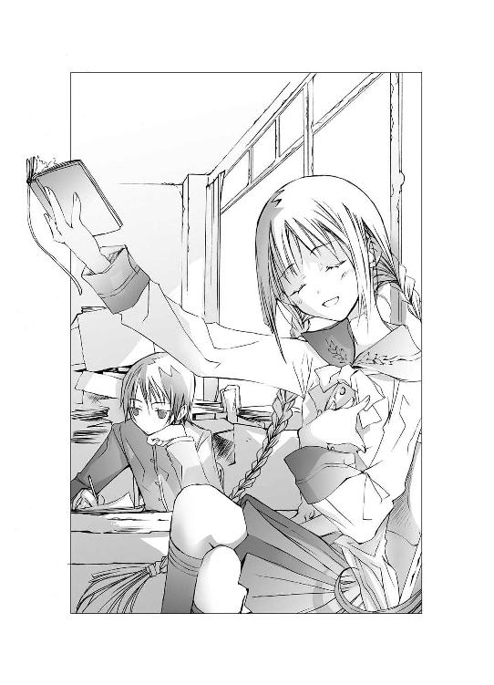

| "文学少女"と死にたがりの道化【ピエロ】 (ファミ通文庫) | |
| 野村 美月 & 竹岡 美穂 | |
| エンターブレイン (2006) | |

本作品の全部または一部を無断で複製、転載、配信、送信したり、ホームページ上に転載することを禁止します。また、本作品の内容を無断で改変、改ざん等を行うことも禁止します。
本作品購入時にご承諾いただいた規約により、有償・無償にかかわらず本作品を第三者に譲渡することはできません。
本作品は本文縦組で制作されております。ごらんになるリーディングシステムにより、表示の差が認められることがあります。
自分はまるで真っ白な羊の群れの中に、ぽつんと生まれた黒い羊のようでした。
仲間たちと同じものを喜べず、同じものを悲しめず、同じものを食せず、仲間たちが心地よいと感じるもの――愛や優しさや思いやりを理解できない惨めな黒羊にできることは、黒い毛皮に白い粉をまぶし、白い羊のフリをすることだけでした。
恥の多い生涯を送ってきました。
あれ？ これって誰の言葉だっけ？
芸能人？ スポーツ選手？ それとも汚職で逮捕された政治家？
まぁいいや。
高校二年生になったばかりで〝生涯〟なんて大袈裟かもしれないけど、十四歳のぼくが体験した出来事は、まさに驚天動地。怒濤に波濤に激動のてんやわんやで、たった一年の間に、ぼくの人生は一旦終了してしまったような気さえするのだ。
なにしろあの一年の間、ぼくは謎の天才美少女作家として日本中の注目を集めていたのだから。
はじまりは中学三年生の春だった。
ぼくはもうじき十五歳になる十四歳で、ごくごく平凡な中学生をやっていて、友達もいて、好きな女の子もいて、それなりにおもしろおかしく過ごしていた。それが、生まれてはじめて書いた小説を、ほんの気の迷いで文芸雑誌の新人賞に応募したら、どういうわけだか史上最年少で大賞に輝いてしまった。
文章が女の子の一人称で、ペンネームも井上ミウなんて女の子の名前を使ってたものだから、
〝史上最年少！ 大賞は中学三年生の十四歳の少女！〟
〝リアルな文体と瑞々しい感性に、審査員各氏絶賛！〟
なんて、大々的に宣伝されてしまったのだった。
ああ、なんて恥さらし。
「女の子のほうがウケがいいから、このまま謎の美少女覆面作家で売り出しましょう！」
編集部の人に力説されて、
（覆面かぶってるのに、どうして美少女ってわかるんだ）
と、釈然としないまま受賞作が出版され、それがたちまちベストセラーになってしまった。本は売れに売れてあっという間に百万部を突破。映画化もドラマ化もされて、コミックにもなり、社会現象になった。
ぼくは愕然。
家族も茫然。
「まぁまぁ、うちのお兄ちゃんが......？ 普通のおとなしい子だったのにねぇ。まぁ、どうしましょう。まぁ、印税が×億円！ まぁ～！ お父さんの年収の二十倍！」
とおろおろしていた。
電車に乗ればぼくの本のタイトルがでかでかと印字された中吊り広告が目に飛び込んでくるし、本屋へ一歩足を踏み入れれば、立派な帯つきのぼくの本が、レジの前に堅固な要塞のように積み重ねられている。
「ミウちゃんってまだ中学生なんだろ。どんな子かなぁ。可愛いのかなぁ」
「オレ、華族の流れをくむお嬢様って聞いたぜ。それで正体を明かせないんだってさ」
「きっと赤ん坊の頃からばあやに育てられて、ペンより重い物を持ったことがないんだぜ」
「だよな～、いかにも〝文学少女〟って感じの、清楚で可憐な美少女に違いないぜ。ああ～ミウちゃん萌え～。お嫁さんになって～」
そんな声を耳にするたび、恥ずかしくっていたたまれなくって、息の根が止まりそうになった。
スミマセン、もう勘弁してください、出来心だったんです、あんなの文学だなんてご立派なものではないんです。授業中のノートの落書きで間違って受賞してしまって本当にゴメンナサイ。瑞々しい感性なんておこがましい。しょんべん臭いガキのつまらない独り言です。審査員の先生たちは洒落のつもりだったんです。十四歳の女の子が文学賞をとっちゃったら楽しいかなぁ～話題性抜群で業界も活性化するかな～本も売れて出版社も喜ぶかな～なんて思っちゃっただけなんです。魔が差したんです。才能なんてありません、もうもう許してください、お願いです。
日本中のありとあらゆる場所を平身低頭して回りたい心境で、あげくに、あんなことがあって――ストレスからくる過呼吸を起こし学校でぶっ倒れて病院に運び込まれ、もう小説なんか書けないよ～とみっともなくべそべそ泣いて、登校拒否なんかもして、父さんにも母さんにも妹にも心配をかけた。
本当に恥さらしな一年だった。
かくして、謎の天才覆面美少女作家井上ミウは、たった一冊の本を残して消滅し、ぼくは普通に受験し、合格し、高校生になり、そこで本物の〝文学少女〟を――天野遠子先輩を知ったのだ。
何故、ぼくが、再び書きはじめたのか。
「ギャリコの物語は冬の香りがするわ。清らかに降り積もった新雪を、舌の上でそっと溶かし、その冷たさと儚さに心が気高く澄んでゆくような、そんな美しさと切なさがあるわ」
ポール＝ギャリコの短編集をめくりながら、遠子先輩が甘いため息をもらす。
ぼくらが所属している聖条学園文芸部は、四階建ての校舎の三階の西の隅にあった。
夕暮れになると西日が差し込み、部屋の中が、蜂蜜を流し込んだようなあでやかな金色に染まる。
もとは物置に使っていたようで、壁際に段ボール箱がうず高く積まれ、真ん中に樫でできた古いテーブルがある。あとはスチール製の本棚が二つとロッカーがひとつ。これでもういっぱいいっぱいで、収納しきれない古い本が、あちこちに重ねてある。地震が来たら本の塔が崩壊し、ぼくらはそれに埋もれて、窒息死してしまうだろう。
古い本と埃の香りがする狭い部室で、遠子先輩はパイプ椅子の上に、ちょこんと体育座りしていた。
制服のひだスカートの奥が、見えそうで見えなくて、けどやっぱりちょっと足を動かしたら見えてしまいそうな、お行儀の悪い格好だ。
むき出しの膝頭に白い頰をあてて、膝全体を腕で抱え込むようにし、細い指で愛おしそうに、本のページをめくっている。
真っ白な額に黒い前髪がかかり、長い長い三つ編みが肩から腰へこぼれ落ちる。肌が白い分、髪や睫、瞳の黒さが際だつ。
黙っていれば、遠子先輩は大変お上品そうで、お人形さんのような人だった。
けど――。
白い指でおもむろに本のページを破くと、遠子先輩はそれをぱくりと口にくわえ、ヤギのようにむしゃむしゃ食べはじめた。
（ああ、食べてる......食べてるよ。何度見てもシュールだ）
ぴりっ、カサッ、コソッ......。
むぐむぐ、こくんっ。
細い喉を可愛らしく鳴らしてページを飲み込むと、またぴりっと破いて食べ、クールな表情から一転して、思いきり幸せそうに目尻を下げ、にっこりする。
「やっぱりギャリコは美味しい～～～～！ あのね、ギャリコはね、ニューヨーク生まれの作家で、映画の『ポセイドン・アドベンチャー』や、児童文学の『ハリスおばさん』シリーズなんかも有名だけど、わたし的に彼のベスト１は、『スノーグース』なの！ 沼地の近くの灯台に住む孤独な画家ラヤダーと、傷ついた白雁を抱いて現れた少女フリスの静かで切ない魂のふれあい！ お互いを深く優しく想いあいながら、決して言葉にはしない――！ ああ、なんて清らかな恋！
いい？ 心葉くん。ぺらぺらしゃべっちゃダメなのよ？ 本当に大切な想いは、墓場まで抱いてかなきゃあ。口を閉ざし耐えるところに、切なさと美しさがただようのよ。ラストシーンは、何度読み返しても号泣だわ。ギャリコの物語は、火照った心をさまし、癒してくれる最上級のソルベの味よ。喉にするりと滑り込んでゆく食感がたまらないわ。『ジェニィ』も『雪のひとひら』も、ぜひ読んで！ 訳は断然矢川澄子さん推奨よ！」

ぼくは、でこぼこしたテーブルに、五十枚綴りの原稿用紙を置いて、ＨＢのシャーペンで三題噺を書いていた。今日のお題は、〝初恋〟〝苺大福〟〝国会議事堂〟――なんかもうめちゃくちゃだ。
目を伏せ、マスをさらさら埋めながら、冷静に突っ込む。
「ソルベの味って、遠子先輩は妖怪だから、文字以外のものを食べても、味がわからないんでしょう？ 比べようがないじゃないですか」
すると遠子先輩は、頰をぷくっとふくらませた。
「いいのっ。そこは想像力でカバーするのっ。あ～ソルベってこんな味かしら～って。それに妖怪って差別用語よ。わたしは、この世のありとあらゆる物語や文学を食べてしまうほど深く激しく愛しているごくごく普通の可憐な高校生で、ただの文学少女です」
「一般的な女子高生は、いきなり本のページを引きちぎって、むしゃむしゃ食べたりしないと思いますけど。少なくともぼくの十六年の生涯で、そんな珍妙な女子高生は、遠子先輩以外見たことないし聞いたことないですよ」
遠子先輩がますます頰をふくらませ、わめく。
「ひどぉ――い、女の子に向かって珍妙だなんてひどぉ――――い。傷ついた。心葉くん、きみって、家で薔薇の花にナンシーとかベティとか名前をつけて大事に育ててそうな優しい顔してるくせに、先輩に対してデリカシーが足りないと思うわ」
「デリカシーが足りないのは、どっちなんだか」
遠子先輩は、あー、なによそれと不満そうな声をあげたけど、すぐに機嫌を直し、ぴょこんと椅子から降り、甘えるような目をして身を乗り出してきた。
「まぁいいわ。わたしの心はアンドロメダ星雲のように広いから、生意気な後輩の失言のひとつやふたつは大目に見てあげる。それより〝おやつ〟できた～？」
本当にわかりやすい人で、声がはずんでいる。猫ならごろごろ喉を鳴らしているだろう。
三年生の天野遠子先輩は、文芸部の部長で、物語を食べる妖怪だ。
水を飲みパンを食する代わりに、本のページや紙に書かれた文字を、美味しそうにむしゃむしゃ食べる。
一年前、ぼくはどういうわけか、この三つ編みの文学少女に文芸部に引っ張り込まれ、以来放課後になると、「おなかすいた～、なんか書いて～、書いて～」とねだられるまま詩やら作文やらを書き散らしているのだった。
二年に進級し、五月になった今も、文芸部の部員は部長の遠子先輩とぼくの二人きりだ。つい先日も、一年生がなかなかやってこないことに業を煮やした遠子先輩に、
「心葉くん、部長命令よ。これ、お願い！」
と押しつけられた時季はずれの勧誘のビラを、校門の前で赤面しながら配りまくったけれど、新入部員がやってくる気配は一向にない。
このままこのおかしな先輩と二人きりで、文芸部を続けてゆくのかなぁ......。
そもそも二度と小説は書かないと決めていたぼくが、何故よりによって文芸部なんかにいるのか？ もう書くこと自体、うんざりだったのに。
それが、ヘンな妖怪の先輩に、おやつの作文なんか書いてあげて、それが異様なことではなく、あたりまえのことになっているなんて......。
遠子先輩が、ポケットから銀色のストップウォッチを出して、ぼくに見せた。
「ほらほら、残り時間はあと五分よ。尊敬する先輩のために、とびきり美味しいおやつを書いてね。ギャリコが、甘さ控えめすっきり爽やかだったから、今度はう～～～～～んと甘いのがいいわ。切ない物語も素敵だけど、恋愛小説はやっぱりハッピーエンドよね。相手が白血病で死んじゃうとか、心臓病で死んじゃうとか、飛行機事故で死んじゃうとか、苺大福を喉につまらせて死んじゃうとか、そういうのはナシにしてね」
決めた。
路線変更だ。
国会議事堂の前で再会した初恋の女の子が、突然空から降ってきた苺大福の箱に頭をぶつけて死んじゃう話にしよう。
遠子先輩はテーブルに頰杖をついて、にこにこしている。
一見落ち着いた雰囲気の美人なのに、ごはんやおやつを待っているときは食いしん坊光線全開で、思いきりガキっぽい。黒い目が、期待にキラキラ輝いている。
「うふふ、肉筆で書かれた文章って、だ～～～い好きっ。そりゃ本で読む鷗外や漱石は熟練の味だけど、素人には素人の初々しさと魅力があるわ。特に、手で書かれた文字は、さらさら流れる小川の水を、手のひらですくって飲むような心地がするの！ それに、もぎたてのトマトやきゅうりにかぶりつくような感じも！ ちょっと泥の味がするのも、すっっっっごく美味しいの！」
ぼくの書く物は、トマトやきゅうりか......。
今、ぼくが、二年前に新人賞をとったあの謎の美少女ベストセラー作家だと告白したら、この人はどんな顔をするだろう。
もちろん、そんなこと口が裂けたって言いやしないけど......。
「ほらほら、あと二分よ。ラストスパートよ。頑張れぇ～」
遠子先輩が声援をよこす。細い首を傾けて、上目づかいにわくわくと見上げてくる。
甘いね、センパイ。そうそう期待通りにはいかないのだよ。
と、そのときだ。
「失礼しまぁぁぁす！ きゃうんっ！」
ドアが開くと同時に、どさっという音がして、誰かが前のめりに転げ込んできた。
床にかえるみたいに倒れている女の子は、制服のスカートがめくれ、くまのパンツがもろ見えだ。
今年小学校に入学した妹が同じようなパンツを持ってたな、なんてことを考えていたら、「はぅ～」とか「うにゅ～」とかうめきながら体を起こした。
ところが、のばした手を本の塔にかけたとたん、それがどさどさ崩れてきて、また顔を床に打ち付けてしまった。
「ひゃう！」
ドタンッ！
「はぅ......は、はにゃ（鼻）が......はにゃ（鼻）が......」
手で鼻を押さえてひくひくしている女の子のほうへ、遠子先輩が慌てて駆け寄る。
「心葉くん、きみは見ちゃダメっ」
そう言って、女の子のスカートの裾を急いで直してパンツを隠したけど、もう見ちゃったよ。それにぼくは、くまのパンツで欲情するほどマニアじゃないよ。
「大丈夫？」
遠子先輩が肩を抱えて助け起こすと、女の子は床にぺたんとしゃがみ込んだまま、面目なさそうに真っ赤になった。
「は、はい、すびばせん。あたし、よく転ぶんです。なんにもないところで転ぶのが特技なんです。慣れてるから気にしないでください」
それは特技とは言わないと思う。
「えっとその、あたし、一年二組の竹田千愛っていいます。今日は、すっっっっっっごく大事なお願いがあって、文芸部さんにうかがいました」
ふわふわした髪を肩の上までのばした、小さくてふっくらした女の子だ。ミニチュアダックスフントとか、トイプードルとか、そんなイメージ。
ひょっとして入部希望者かな？ 遠子先輩に配らされたビラの効果が現れたのか？
それはいい。後輩ができれば、遠子先輩のおやつ係を押しつけられる。
そんな淡い期待を抱いたとき、竹田さんが両手を握りしめ、決意のこもりまくった口調で言った。
「どうかあたしの恋を叶えてください！」
ぼくは、ぽかんとしてしまった。
「うち、文芸部なんだけど？」
竹田さんがぼくのほうを見て、力いっぱいうなずく。
「はいっ！ ポストを見てまいりました」
「ポスト......？」
さっぱり意味がわからない。
「中庭の隅っこの木にですね～、まるで隠れるよーにひっそりと郵便ポストが置いてありますよね？ そこに、〝あなたの恋を叶えます。ご用の方はお手紙をどうぞ。by文芸部一同〟って書いてあって、ガ―――ンというか、ビビビッというか、とにかく天啓を受けたんです。もう手紙を書く間も惜しくって、すっ飛んできちゃいました」
仰天したものの、すぐにピンときた。
「遠子先輩！」
こんな突飛なことをしでかすのは、この人以外いない。
遠子先輩は竹田さんの肩に手をおき、笑顔を振りまいた。
「まぁ、よく来てくれたわね。わたしが部長の天野遠子よ。全部わたしたちに任せておいて」
ぼくは立ち上がり、遠子先輩の後ろでわめいた。
「待ってください、わたしたちって、ぼくも頭数に入ってんですか！」
「ええそうよ、文芸部一同誠意を込めて、千愛ちゃんの恋をバックアップするわ」
「千愛、感激です！」
「冗談じゃない――むぐぐ」
「そのかわり、ひとつだけ条件があるの」
ぼくの口に片手でぴしゃりと蓋をして、遠子先輩が神妙な顔つきで告げる。
「千愛ちゃんの恋が成就した暁には、経過をみっちりしっかり書き綴った愛のレポートを提出してほしいの」
「え～、れ、れぽーとですか？ 千愛、作文苦手なんですけど」
「大丈夫。千愛ちゃんは、ただ起こったこと、感じたことを、ありのままに書けばいいの。へんに技巧に走った文章より、普段書かない人が一生懸命綴った真実の言葉のほうが、胸にもおなかにも染みるものよ。思う存分のろけまくって甘い甘いお話、じゃなくてレポートを書いてちょうだい。あっ、パソコンはダメよ。必ずレポート用紙か原稿用紙に直筆でねっ。約束よ」
遠子先輩が竹田さんの指に細い指をからめて、嬉しそうにげんまんをする。
そうか、これが目当てだったんだな。
食い意地の張った遠子先輩は、ぼくの書くおやつだけでは食い足りず、恋愛相談ポストを設置して、相談者から恋のラブラブレポートを搾取することを思いついたのだ。
思いつくだけならいいけれど、それを堂々と実行に移してしまうところが遠子先輩の遠子先輩たる所以である。
これだから文学少女は油断がならない。
頭の中が文学してておよそ現実的じゃないから、目を離すとなにをしでかすかわからない。平気で他人を巻き込む。
「はいっ。千愛、いっぱいレポート書けるように頑張ります」
竹田さんは非常～～～～に素直な性格らしく（もっともそうじゃなきゃ、そんな怪しいポストを見て、怪しい文芸部に訪ねてきたりしないだろうけど）、目をキラキラさせて遠子先輩を見上げている。頼りになる素敵なお姉様～とか思ってそうだ。
遠子先輩は推定Ａカップのぺたんこの胸を、偉そうにそらして言った。
「えへん、大船に乗ったつもりでいてちょうだい。わたしたちは古今東西の恋愛小説を研究しつくしてる恋のエキスパート、そして文章のエキスパートよ。千愛ちゃんのために、とびきりのラブレターを書いてあげるわ。この井上心葉くんが」
「ええっ！」
遠子先輩の美食への飽くなき欲望にあきれて、知らんぷりを決め込んでいたぼくは、ぎょっとした。
「うちのエースの心葉くんが、千愛ちゃんの恋しい人のハートを打ち抜く名文を考えてくれるわ」
「なに勝手なコト言ってんですか、遠子先輩！ ぼくは、ラブレターなんて書いたことありません」
最後のほうは遠子先輩に口をふさがれて、もごもごとしか聞こえなかったに違いない。
「これまで何百通ものラブレターを書いてきた恋文専門作家の心葉くんも、ぼくに任せてくれと言ってるわ。心葉くんは、あだたら恋の文学コンクールで、最終選考にまで残ったこともある強者よ」
なんですか、その地元民も知らなそうな、どマイナーな文学コンクールは。
「わぁ、すごいです～。そんな立派な作家さんに書いていただけるなんて嬉しい」
作家じゃないってば！
いや、その、作家だったこともあったりするけど......ベストセラーになったりしたけど......。けど！ 今のぼくは普通の高校生で、遠子先輩の単なるおやつ係で、ラブレターの代筆なんてできるわけがない。
ところが、ぼくがごちゃごちゃ考えているうちに、話はとんとん拍子にまとまってしまい、
「お願いしますねぇ、心葉先輩！」
「ええ、ばっちりよ。ねぇ、心葉くん」
ぼくは女の子のふりをして、ラブレターを書くことになってしまったのだった。
追記
竹田さんが帰ったあと、ぼくが書いた三題噺を食べながら、遠子先輩はべそをかいた。
「やだぁ、苺大福の箱が落っこってきて初恋の人が死んじゃった～～～～～。やだぁ、やだぁ、ヘンな味～～～～。お豆腐のお味噌汁に、あんこを浮かべたみたい～～～。ぐすっ、ひっく、マズイよ～～～～」はじめてズレを感じたのは、自分を可愛がってくれた祖母が亡くなったときでした。
祖母は胸の病で寝たきりの生活になってからも、孫の自分を側に置きたがり『おまえは、本当に優しいいい子だねぇ』と言っては頭をなで、満足げに目を細めるのでした。
けれど自分は祖母が望むような純な子供ではなく、祖母の骨張った手や、皺の刻まれた顔やぱさぱさの白い髪、薬臭い息が、ただもうひたすらに嫌でたまらず、恐れていました。
『おまえは、優しいいい子』
耳元でしわがれた声で囁かれるたび、呪いをかけられているような心地がし、首筋がこわばり、皮膚が粟立ちました。
本当はいい子ではないことがバレ、心の中では祖母を嫌悪していることを見抜かれたとたん、祖母がむくりと起きあがり、白い髪を夜叉のように逆立て、目を赤く燃え上がらせて食らいついてくるような恐怖を感じ、冷たい汗がどっと吹き出てきて、眠れぬ夜を過ごしていたのでした。
それゆえ、祖母に気づかれぬよう細心の注意を払い、精一杯お愛想を振りまき、祖母に食事を運ぶ役や体の汗を拭く役を買って出て、かいがいしく祖母の介護をし、『おばあちゃん大好き』と、胸にすがりついて甘え、祖母の頰にキスすることさえしてみせたのでした。
老いた祖母の頰は枯れ葉のように乾いており、あの大嫌いな薬の匂いがしました。病が移りそうで恐ろしく、あとで洗面所へ行き、何度も口を水で、ごしごしこすり、ついに唇が切れて血がにじみでてきたときには、自分はなんて噓つきの悪い子なのだろうと思い、喉が震えまぶたが熱くなりました。
ある日、祖母は、冷たくなり動かなくなりました。
『おまえは本当に、心の優しい、いい子だねぇ』
そう囁きながら愛おしそうに髪をなでていた手が、突然だらりと落ち、顔が蠟燭のように白くなりましたが、自分は心が動きませんでした。息絶えた祖母を残し、公園へ遊びに出かけてしまったのでした。
夕方になり家に戻ると、母が自分を抱きしめて、『おばあちゃんが亡くなったのよ』と言いましたが、そのときも自分の心は、人も鳥も訪れぬ森のように、静かでした。
数日して祖母の葬儀が行われ、その間も涙をこぼすこともなくぼぉっとしておりましたので、大人たちは、『きっとまだ小さくて、大好きなおばあちゃんが死んだことをわかってないに違いない。可哀相に』と、ひそひそ話しておりました。
それを聞いて、急に恥ずかしさが込み上げ、耳のあたりが熱くなり、視線を上に向けることができなくなりましたが、それはただ自分が決まり悪かったというだけで、やはり祖母の死は少しも悲しくないのでした。
幼少の頃から自分はそういう性質でした。
◇ ◇ ◇
（困ったなぁ。ラブレターなんてどうやって書けばいいんだ）
翌日の授業中。
ぼくは初めてのラブレターに苦戦し、ノートの下に置いたレポート用紙に下書きをしながら、うんうん悩んでいた。
『 片岡愁二様
突然お手紙してしまって申し訳ありません。
さぞ驚かれたことと思います。
私は、この春聖条学園に入学した一年二組の竹田千愛と言います。
千愛は、ちあと読みます。
放課後弓道部で、愁二先輩が矢を射るお姿を拝見して素敵な人だなと思い、好きになってしまいました』
（うーん......なんか硬苦しい気がする）
『 愁二センパイへ
こんにちは！ はじめてお手紙しちゃいま～～～～～すっ！
あたしは竹田千愛。一年二組、出席番号十一番。かに座Ｂ型の女の子で～す。
友達には、ちあとか、ちぃちゃんとか呼ばれてま～す。
唐突ですけど、センパイのコト、好きになっちゃいました！
きゃっ、恥ずかしい』
（......これは、ぼくのほうが恥ずかしいぞ。それに、すっごく頭悪そう）
赤面しながら、何枚も何枚も書いてゆく。
ぼくってば、なにやってんだろうなぁ。
遠子先輩は、勝手なことを言っていた。
「きみの文章は色気が足りないわ。いい機会だから、お勉強させてもらいなさい。千愛ちゃんの気持ちになって、恋する女の子の甘く初々しいラブレターを書くのよ。もう世界がキラキラ輝いていて、幸せで幸せでたまらな～～い、みたいなやつ。受け取った相手が、あ～なんて可愛い子なんだろう、自分はなんて綺麗な心で愛されてるんだろうって感動しちゃうような」
まったく。それなら遠子先輩が代筆すればいいのに。
「わたしは食べるの専門よ」なんて悪びれずに言い、軽やかに笑う。
黒板にはＤＮＡの螺旋図が描かれ、白髪頭の生物教師が、染色体がどうとか遺伝子がどうとか、お経を唱えるような調子で説明している。
聖条学園は受験校なので、みんな熱心にノートをとっていて、先生の声に混じって、さらさらシャーペンを走らせる音が聞こえてくる。ま、中には、机の下で携帯電話をいじっているやつもいるけれど。
（さすがにラブレターの下書きをしてるやつはいないよなぁ。そもそも今時はラブレターじゃなくて、メールじゃないか？）
あらためて、授業中にラブレターを書いていることを意識したら、顔がどんどん火照ってきた。
（いや、違う。これはぼくのラブレターじゃなくて、竹田さんのラブレターなんだ。好きっていうのも、ぼくじゃなくて竹田さんが愁二先輩を好きなのであって......って、誰に言い訳してるんだ）
そういえば遠子先輩が言ってたっけ。千愛ちゃんの気持ちになって、書いてごらんなさいって。
すると、好きな人のことを頰を染めて嬉しそうに語る竹田さんの顔が、浮かんできた。
「千愛の好きな人は、片岡愁二先輩といって、弓道部の三年生なんです～。入学したばっかりの頃、あちこちの部に見学に行ったときに、弓道部の練習場で、愁二先輩のお姿をお見かけしたんです。愁二先輩は、弓をきゅ～～～っと引きしぼってらして、すごく真剣な目で、的をご覧になってました。空気が一緒に、ピンって張りつめてるみたいで、あたし、目が離せなくなっちゃって。立ち止まって息をのんじゃいました。
実は、その前にちょっと落ち込むことがあって、暗い気持ちでいたんです。
けど、愁二先輩の横顔を見たとたん、そんなこと頭から吹っ飛んじゃって、愁二先輩が射た矢が、的の真ん中に、ずばんっっっっって突き刺さったときは、あたし、自分の心臓も一緒に打ち抜かれたかと思っちゃいました。
それでね、そのあと愁二先輩、ものすごく子供っぽい優しい顔になって、にこって笑ったんです。もぉ、今まで見た笑顔の中で、一番素敵な笑顔でした！ それから愁二先輩のこと、好きになっちゃったんです。
あたし運チだから、弓道部には入部しなかったけど、ときどき練習場に愁二先輩を見に行ってました。部員の人たちが、片岡とか、愁とか愁ちゃんとか呼んでるのを聞いて、名前がわかったんです。愁二先輩は、普段はお顔に似合わずひょうきんなかたで、ふざけてばかりで、よくみんなを笑わせてました。
なのに、矢を射るときだけは、すっごく真剣な顔をするんです。その直前まで冗談を言って笑ってるのに、矢を射るときだけは、ちょっと怖いぐらい張りつめたお顔で――、でもね、的から外れると、あ～はずれちゃった～って照れ笑いするし、的に当たると、やった～って子供みたいに大はしゃぎするんです。
矢を射るとき、愁二先輩はなにを考えてるのかなってあれこれ考えてたら、胸の中がどんどん愁二先輩でいっぱいになっちゃって、愁二先輩のこともっと知りたい、あたしのことも愁二先輩に知って欲しいって思うようになっちゃったんです」
本に対する蘊蓄を語るときの遠子先輩に劣らないくらい、竹田さんはよくしゃべった。
ふくふくした頰を紅潮させ、目を生き生きと輝かせて、本当に心の底から嬉しそうに幸せそうに、愁二先輩についてしゃべり倒してたっけ。
まぁ......その。竹田さんがどれだけ愁二先輩のことが好きか――最低限、それだけはきちんと伝えなくちゃな。ぼくの書いた手紙のせいで、竹田さんが失恋しちゃったら寝覚めが悪いからさ......。
レポート用紙をめくって新しいページを出し、ぼくはそこに竹田さんの気持ちを少しずつ書き綴っていった。
『愁二先輩に、あたしのこと知って欲しいです。
愁二先輩のこと、もっともっと知りたいです。
だから勇気を出して、お手紙しました』
......。
...。
「はい、これ」
放課後。ぼくはレポート用紙を四つに折り畳んだものを、竹田さんに差し出した。
「下書きなしで昼休みにささっと書いたやつだから、デキは保証しないけど......」
「わぁ、ありがとうございます！」
竹田さんがぴょんと跳び上がり、嬉しそうに受け取る。
「うわぁ、三枚もある～。これを、お昼休みにささっと書いちゃったんですか～。さすが文芸部のエースさんですぅ」
「そ......それほどでも」
「えへへ、読んでもいいですか？」
レポート用紙を開こうとするのを、ぼくは慌てて止めた。
「わ――っ、ダメッ！ ここで読むのはダメ！」
「あら、いいじゃない。わたしもぜひ拝見したいわ。心葉くんの渾身のラブレター」
遠子先輩がいたずらっぽく笑い、竹田さんの横から手紙をのぞき込もうとする。
ぼくは二人の間に割って入った。
「ダメっ！ 絶対ダメです！」
「ぅぅ、わかりました。じゃあ、あたし失礼しますね。急いで家に帰って、心葉先輩に書いていただいたお手紙を清書します。もうレターセットも用意してあるんですよぉ。淡いピンクで、桜の花びらが散ってて、すっごく可愛いんです」
「うん、そうだね、そのほうがいいよ」
ぼくは竹田さんを、夢中で送り出した。
「さよなら、頑張ってね」
「はいっ、お世話になりました」
「レポートも、忘れないでね～」
「了解で～す」
竹田さんが手紙を持った手を振りながら、晴れやかに答える。
途中でどべっとコケて、すぐに起きあがり、恥ずかしそうに「えへへ」と笑って去るのを、ぼくはドキドキしながら見送った。
「あ～、やっぱり読みたかったな、心葉くんの、三日がかりのラブレター」
遠子先輩がパイプ椅子の上で膝を抱え、涼しげに目を細めるのを見て、耳がカァッと熱くなる。やばい、見透かされてる。
「ダメですよ。遠子先輩に渡したら、ちょっとお味見とか言って、全部食べちゃうから」
わざと皮肉げに言うと、遠子先輩は、唇をぷんっと尖らせた。
「もぉ、わたし、そこまで食いしん坊じゃありません」
それから頰を膝に寄せて、夢見るような眼差しになった。
猫の尻尾みたいな細くて長い三つ編みが、薄い肩から、さらりとこぼれ落ちる。
「でも、いいな～、ラブレター。きっと甘くて、くすぐったくて、幸せな味がするんだろうなぁ。ねぇ、世界で一番美味しい物語ってなんだと思う？ 心葉くん」
「さぁ......」
遠子先輩が、にこっとする。
「わたしは、大好きな人が、一生懸命書いてくれたラブレターだと思うわ。だってそれは、この世にたった一通しかない、自分だけの大事な宝物だもの」
そう言って、照れくさそうな甘い顔になる。
「あ、でも、そうしたらあんまり大切すぎて、食べられなくなっちゃうかも。うーん困ったわ。この世で一番のご馳走を目の前にしながら、食べられないなんて」
額に指をあてて真剣に悩んでいるのがおかしくて、ぼくはつい吹き出してしまった。
「えー、有り得ませんって。一晩もたずに胃の中に入れちゃうほうに、夏目漱石全集賭けてもいいです」
「あ～～～、ひどぉ～い！ ひどいんだぁ。やっぱりきみのほうがデリカシーない！」
遠子先輩はすねて、パイプ椅子の上でくるりと背中を向けてしまい、そのあとぼくがおやつの作文を書いてあげるまで機嫌を直さなかった。
「ふーんだ、今度、ノートに心葉くんの名前を千回くらい書いて、びりびりに破いて、ばくばく食べてやるんだから。呪っちゃうんだから」
「もぉ、大人げないですよ、遠子先輩」
翌日の昼休み。竹田さんがスキップを踏みながら、ぼくのクラスへやってきた。
「すみませ～ん、心葉先輩いらっしゃいますかぁ」
教室の中が、ざわめく。
ぼくは急いで立ち上がった。
「あ、心葉せんぱ～い」
竹田さんがにこにこ手を振る。うわぁ、注目浴びてる。
「竹田さん、こっち来て」
「え？ あ？ はい」
廊下の角を早足で曲がり、人気のないところまできて、あらためて、「なに？」と尋ねると、竹田さんは満面の笑顔でぼくを見上げた。
「心葉先輩に書いていただいたあのお手紙、今朝、通学路で待ち伏せして、愁二先輩に渡したんです」
「えっ、本当！」
素早いっ。ぼくはどちらかといえば無気力な人間なので、このバイタリティは大したものだと感心してしまう。
「もー、心臓ばくばくでした～。愁二先輩に『読んでくださいっ』って渡して、だ～～って走ってっちゃって。そのあとは友達の声も先生の声も、全然耳に入りませんでした。愁二先輩、手紙読んでくれたかなぁ～、どう思ったかなぁ～ってそればっかり、ぐるぐる考えちゃって」
「そ、それで？」ぼくも思わず手に汗握った。
「胸がいっぱいで、とてもお弁当なんか食べれそうになかったんで、弓道部の練習場に行ってみたんです。そしたら愁二先輩がいらっしゃって......」
「え―――っ、それで？」
竹田さんが嬉しそうに赤くなり、Ｖサインを出す。
「手紙ありがとう、とっても嬉しかったよって言ってくださいました～！ いきなり彼女とかは無理だけど、まずは先輩後輩として気楽に話してみようって」
「良かったじゃないか！」
ぼくも竹田さんと一緒に、跳び上がりそうになった。
「はいっ！ 愁二先輩、あんなに可愛い手紙をもらったのは初めてだって、すごく喜んでくださいました。全部、心葉先輩のおかげです。さすが、あだたら恋の文学コンクール、最終選考です！」
「ははは、昼休みに、ささっと書いた手紙なんだけどね～」
「いえいえ、愁二先輩、手紙を読んで、気持ちがなごんで元気が出たそうです。だからあたし、これから毎日お手紙しますって約束しちゃいました」
「へ？」
ぼくは間抜けな声を出した。
毎日......？
「よろしくお願いしますね、心葉先輩。お昼休みに、ささっと手紙を書けちゃう心葉先輩なら、全然問題なしですよね」
信頼と尊敬にあふれた口調でそう言い、竹田さんはぼくの手を、ぎゅっと握りしめたのだった。
翌日から竹田さんは、一時間目が終わると、ぼくのクラスへ走ってくるようになった。
「心葉せんぱ～い、おはよ～ございまぁす！ 昨日のお手紙も、愁二先輩大ウケでした。心葉先輩って本当にすごいです。天才です。作家になれちゃいますよぉ」
「は、はは......褒めすぎだよ。はい、これ今日の分」
「きゃうん、ありがとうございます。次の数学の時間に、清書しちゃいます。愁二先輩喜んでくれるといいなぁ」
「そうだね......」
ぼくの笑顔は、ちょっぴり引きつっていた。
遠子先輩は、くすくす笑いながら「自業自得ね」とのたまった。
「こうなったら、最後まで千愛ちゃんにつきあうしかないわね。文豪さん？」
片手に文庫を持って、パイプ椅子にまたがるようにして座り、黒く澄んだ目で、からかうように斜めから見上げてくる。
文庫は、アメリカの作家フィッツジェラルドの『グレート・ギャツビー』だ。
「もとはと言えば遠子先輩が、ぼくに竹田さんを押しつけたんじゃないですか。学校の庭に、変なポストを不法設置したのは自分なのに」
「押しつけたんじゃなくて、推薦してあげたんだもん。心葉くんなら、素敵なラブレターを書いてくれますよ～、親身に相談に乗ってくれますよ～って。それに――」
細い体を前に倒すと、椅子がキシッと音を立てた。赤い唇がちらっと笑みの形を作る。
「休み時間に、すらすら書いちゃった～って言ったのは、わたしじゃなくて、心葉くんよねぇ？」
「ぐっ」
ぼくは声をつまらせた。遠子先輩が、うっとりと目を閉じる。
「あ～、千愛ちゃんの恋がうまくいくといいわねぇ。千愛ちゃん、どんなレポートを書いてくれるのかしら。生クリームをたっぷり盛りつけたふわふわの苺ケーキみたいなレポートかしら。それとも、ちょっぴりオレンジのお酒をきかせたチョコレート味のレポートかしら。さくさくのパイ生地に、あふれるほどカスタードクリームを挟んだミルフィーユ味のレポートもいいなぁ」
もはや自分のおやつのことしか頭にない。想像しているうちにおなかがすいてきたのか、『グレート・ギャツビー』をぺりぺり破いて、ぱりぱり食べはじめる。
「う～ん、美味しいっ。フィッツジェラルドってすごく華やかな味。虚飾と栄光と情熱がワルツを踊っていて、パーティーで、きらきらのキャビアをシャンパンと一緒にいただいてる気分。歯をあてると繊細な薄皮がぷちんとはじけて、薫り高い液が舌の上にこぼれてくるの。主人公のギャツビーが、ものすご～～～く純情で応援したくなっちゃう」
それ、主人公のギャツビーが、元恋人で人妻のディズイにさんざん振り回されて破滅する話じゃなかったっけ？ 華やかっていうより、哀愁漂っていたような......。まぁ、文学の解釈なんて人それぞれだから......。
「あっ！」
いきなり遠子先輩が、この世の終わりが来たみたいな声で叫んだ。
そうして眉を下げ、ふにゃっと顔をゆがめたのだった。
「どうしよ～～～、これ図書室で借りてきた本だったのに、食べちゃった～～～～」
遠子先輩と一緒に、うっかり落として破いちゃったんです～～～と図書室へ謝りに行った翌日（遠子先輩は、一人じゃ恥ずかしいと言って、ぼくを付き添わせたのだ）、竹田さんは例によってぼくのクラスへやってきた。
「愁二先輩とは進展してるの？ そろそろつきあおうとか、そういう話はないの？」
廊下へ出て、そこで立ち話をする。
「うわぁ、心配してくださってありがとうございます。心葉先輩やさし～感激ですぅ」
ぼくは赤面した。いや、そうじゃなくて......もう手紙書くの嫌だから、とっととカップルになってほしいだけなんだけど......。
「実は心葉先輩のお手紙のおかげで、愁二先輩との親密度もぐっと高まって、もう一押しかなぁなんて、予感しちゃったりしてるんですぅ」
「そりゃ、どんどん押してくべきだよ」
ぼくは力を込めて言った。竹田さんがとろけそうな顔でうなずく。
「はい、プッシュしまくっちゃいます。お約束のレポートの下書きも、ちゃんとしてるんですよぉ。ほら」
そう言って、胸に抱えていたノートを、嬉しそうに見せる。大学ノートの半分くらいの大きさのノートは、表紙に黄色いあひるの絵が印刷してある。作文苦手なんです～と言ってたのに、やる気満々って感じだ。
「ちょっと照れちゃうけど、好きな人のことを書くのって楽しいです。あっ、でも下書きをそのまま見せたら、バカなことばっかり書いててみっともないから、ちゃんと読み直して清書しなきゃです」
「ねぇ、その調子で、自分で手紙を書いてみるといいかもしれないよ？」
竹田さんはノートで顔を隠して、いやいやした。
「やだぁ、恥ずかしいです。でも、そうですね。そのうち、あたしが書いたお手紙を愁二先輩に読んでいただきたいです。それまで心葉センセイ、よろしくお願いしますね」
はぁ、やっぱりまだ、代筆を続けなきゃならないのか。
と、そのとき竹田さんが、急に不安そうな目でぼくを見た。
頰を染め、ノートの端から自信なさげにおずおずと。
「あの......あたし、ウザイですか......？」
ぼくはドキッとした。
「えっ、そ、そんなことないよ。ぼくもラブレター書くの、結構楽しいよ。ははは」
つい、心にもないことを言ってしまう。
すると竹田さんは、子犬みたいに無邪気に笑った。
「よかったぁ！ じゃあ、明日もお願いしまぁす！」
すっかり元気を取り戻し、尻尾の代わりに手を振って、転びそうになりながら去っていったのだった。
はぁ～、ぼくって偽善者。
肩を落として教室に戻ると、男子から「彼女毎日来るよな～」「新入生を早々にゲットするなんて、見かけによらずやるじゃねーか」と、ひやかされた。
「やだな、そんなんじゃないよ」
ぼくは笑いながら、やんわりかわした。
他人の反感を買ったり目立ったりするのは本意じゃない。人より突出することで余計なリスクを背負うのもごめんだ。天から偶然に降ってきた大きすぎる贈り物を、当然の権利と受け取れるほど、ぼくは強くもずうずうしくもない。凡庸な人間なんだ。
席に着こうとして視線を感じた。振り返ると、ぼくを睨んでいる女子がいた。
琴吹ななせ。
茶色に染めた髪に、抜群のプロポーション。都会的な華やかな容姿と、はっきりものを言う性格で、クラスの中でも目立つ存在の女の子だ。
「琴吹って性格キツイけど、いいよな」と、男子がよく噂している。
ぼくは彼女に嫌われているらしい。というのは、四月に同じクラスになってから、たびたびこんな冷ややかな視線を頂戴するからだ。
睨まれるようなことをした覚えはないんだけどな。あ、でも、昨日......。
ぼんやりしていたら、琴吹さんがツンとした顔のままぼくのほうへやってきて、右手を差し出し、ぶっきらぼうに言った。
「四百六十円」
「へ？」
「昨日、落として破っちゃった本の代金。本を紛失したり破損したりした場合は、弁償してもらう決まりなの」
「え――っ、昨日は、もういいですって言ったじゃないか」
昨日、遠子先輩の付き添いで図書室に謝りに行ったとき、カウンターに座っていたのが琴吹さんだった。
内心、うわっ、よりによって琴吹さんが当番だなんて。こりゃみっちり絞られるなと覚悟したのだが、琴吹さんは顔つきこそツンケンしてたけど、
「わざとじゃないですから仕方ないです。次から気をつけてください」
と、あっさり放免してくれたのだ。
なのに何故四百六十円？ しかもぼくに？ 本を破いたのは（てゆーか食べちゃったのは）遠子先輩だぞ。
すると琴吹さんは、キッと眉をつり上げた。
「あの天野先輩に、本代請求できるわけないでしょ。あの人は図書室の大お得意様で、どこになんの本があるか司書の先生より知ってるんだよ。図書委員で天野先輩の世話になった人も多いし。あたしも一年のとき、本の置き場所がわからなくて困ってたとき天野先輩に助けてもらったの。だから、井上、代わりに払って」
「あのぉ......琴吹さん。それっておかしいと思わない？」
「全然（きっぱり）」
うわ～～～、即答だ。もめるのは嫌なので、ぼくは財布を取り出し、五百円玉を琴吹さんの手のひらにのせ、深々と頭を下げた。
「このたびはうちの部長が、ご迷惑をおかけいたしました」
五百円玉をぎゅっと握りしめ、琴吹さんが唇を尖らせる。
「おつりはあとにして。天野先輩に言ったら、パンチだからね」
やれやれ、なんでぼくが、遠子先輩の尻ぬぐいをしなきゃならないんだ。
もう用はすんだろうと思いきや、琴吹さんは立ち去らず、まだぼくを睨んでいる。
「......ねぇ。最近、井上のとこに、よく一年生が訪ねてくるけど、つきあってんの？」
「竹田さんのことかな。別につきあってないよ」
「ふぅん、あの子図書委員でさ、あたしちょっと知ってんだ。なんてゆーかドジで天然で、いかにもロリコン受けしそうなキャラよね。本当につきあってないの？」
ロリコン受けって......ひどい言い草だな。けど、むきになって反論しても向こうをあおるだけなので、逆ににっこりしてみる。
「ぼくは遠子先輩に頼まれて、竹田さんの相談に乗ってるだけだよ」
すると琴吹さんは眉をさらにつり上げ、憤怒の形相になった。
あ、あれ？ ぼくなんか失敗したかな？
琴吹さんが息をひとつ吸い込み、冷え冷えとした目つきで言う。
「別に......井上が誰とつきあっても関係ないよ。けどつきあってないなら、廊下で、でれでれ逢い引きすんのやめたほうがいいよ。はしゃぎすぎててみっともないから」
毒を吐くだけ吐いて、去っていったのだった。
そのあと、日本史の時間。ぼくは黒板の文字をノートに写しながら、やっぱり竹田さんに早いとこ先輩とくっついてもらわなきゃなぁ......なんて考えていた。
琴吹さんの、あのきつい口調で、あそこまで言われたら、さすがに胸にこたえる。
ああどうにかならないかな。思いきってうんと熱烈な手紙でも書いてみようかな......。
晴れていた空が曇り、ガラスに水滴がぽつぽつと散りはじめた。
（雨だ......。文芸部のロッカーに置き傘、してあったっけ......？）
◇ ◇ ◇
成長するにつれ、自分と他人の感じ方に、大きなズレがあるという思いは、ますます大きくなってゆきました。他人が嬉しいとか哀しいとか感じることに、自分は小指の爪の先ほども共感できないのです。
何故楽しいと思うのだろう。
何故哀しいと思うのだろう。
みんなが運動会や球技大会で仲間の応援をして盛り上がっているときも、転校してゆく友達と別れを惜しんでいるときも、自分は言葉の通じぬ外国人の中に一人紛れ込んでしまったような居心地の悪さを感じ、身がすくみ、下腹がきゅっと痛くなりました。周りでざわざわ話されている言葉が、自分には何のことやらさっぱりわからないのです。
ある日、クラスで飼っていたうさぎが口に花火をつめられ、火をつけられ、ひどい死に方をし、みんながおいおい泣いているときも、自分はひどく落ち着かない気持ちで、つま先を見つめ、もじもじと小さくなっておりました。
何故なら自分は、うさぎの死が少しも悲しくなかったのです。
生前のうさぎの愛くるしい仕草や、やわらかな毛の感触を思い出し、いくら悲しい気持ちになろうと頑張っても、心の中はしらけてゆくばかりで、一滴の涙もこぼれてはこないのです。こっそり見渡せば、泣いていないのは自分一人でした。
そのとき自分は首筋が真っ赤になり、耳鳴りがするほどの羞恥と恐怖を感じました。
何故だろう。何故、みんな泣いているのだろう。ああ、自分にはわからない。でもみんなが泣いているのに、一人だけ平静な顔をしていたらヘンだと思われる。自分も泣いてみせなければ。顔がこわばってうまく泣けない。頰が熱い。噓泣きがバレたらどうしよう。顔をあげてはダメだ。うつむいて、暗い顔をしているのだ。ああ、今度はみんながおなかを抱えて笑っている。なにがそんなにおかしいのだろう。わからない。けれど、みんなと同じにしなければ、おかしなやつだと思われ、仲間はずれにされてしまう。
笑うのだ。笑うのだ。笑うのだ。いや、泣くのだ、泣くのだ、いや、笑うのだ、笑わなければ。
ああ、こんな当たり前のことがうまくできないなんて、自分はおかしい、おかしいのだ。
みんなと同じ気持ちになれぬことに、自分は胃がきりきりと絞り上げられるほどの羞恥と恐怖を感じました。このことがバレたら、みんなどんなに冷ややかな目で自分を見るだろう。
自分はまるで真っ白な羊の群れの中に、ぽつんと生まれた黒い羊のようでした。
仲間たちと同じものを喜べず、同じものを悲しめず、同じものを食せず、仲間たちが心地よいと感じるもの――愛や優しさや思いやりを理解できない惨めな黒羊にできることは、黒い毛皮に白い粉をまぶし、白い羊のフリをすることだけでした。
仲間たちに本当は黒い羊であることがバレたら、角で突き回され、蹄で踏みつけられるのではないか。どうか、どうか、バレませぬように、バレませぬように。
雨がぽつりと降るたび、風がそよと吹くたび、体についた白い粉が落ちてしまうのではないか、あいつは黒い羊だと誰かが大声で叫ぶのではないかとびくびくし、心が安まることは一瞬もありませんでしたが、そうする以外なかったのです。
自分は両親や教師、級友たちに、必死にお愛想笑いをし、ひょうきんに振る舞い、笑わせました。ああ、どうか、自分が人の心がわからぬお化けであることに、誰も気づきませんように。バカで間抜けで取るに足らない人間のふりをして、みんなに笑われながら、哀れまれながら、許されながら、生きてゆけますように。
そうして、自分は今も、仮面をかぶり、道化を演じ続けています。
◇ ◇ ◇
「うわぁ、本格的に降ってきたぞ」
放課後。ぼくは薄暗い廊下を歩いていた。
まだそれほど遅い時刻でもないのに、窓の外は暗く、空には黒い雲がたれ込めている。地面を突き刺すような鋭い雨が、冷たい音を立てて降っている。
空気も湿り、寒々としている。
「降水確率は、五十パーセントだったのになぁ」
文芸部のロッカーの傘が、ちゃんと残っているといいんだけど。
先週雨が降ったとき、ロッカーを開けたら、入れておいたはずの傘が消えていた。
「あ、ごめんなさーい、先週雨が降ったときに借りて、返すの忘れちゃった」
遠子先輩が、けろりと言った。
そのあと二人で、濡れながら走って帰ったのだった。
「傘、ちゃんと返しといてくださいよ！」
「はぁい。でも、雨の中、こんなふうに駆けっこするのも、青春って感じで素敵よね」
（あの人は、他人のものは自分のもの、自分のものは自分のものだからなぁ......）
ったく、ジャイ×ンか？ 本当になんで、ぼくは文芸部にいるのだろう。
（うぅん......謎だ）
今日は日直だった。担任の先生に頼まれた仕事を片づけていたら、あっという間に時間が過ぎてしまった。遠子先輩、今頃「おなかすいた～」って、パイプ椅子をがたがた揺らしているんじゃなかろうか。部室に古い本がいくらでもあるのだけど、保存状態がよくないこともあって、遠子先輩曰く、
「賞味期限切れなんだもん。おなか壊しちゃう」
だそうだ。
「けどね、きちんと保存された古書は、きっと熟成のトリュフやワインの味がすると思うの。ああ、想像しただけでよだれが出ちゃいそう。それとね、それとね、文学記念館に展示してある漱石とか鷗外とか武者小路の直筆原稿！ あれもきっとこの世のものとは思えないほど美味しいと思うわ！ おなかを壊してもいいから、一口でも食べられないかしら」
真剣な顔で、そんなことを言っていた。遠子先輩がいつか文学記念館にドロボーに入るのではないかと、ぼくは心配でたまらない。
文芸部へ向かう途中の階段で、ぼくは足を止めた。
「あ、しまった。古典の教科書、置いてきちゃった」
古典の三枝先生はとっても厳しい。明日は当たるから家で予習してこなきゃって思ってたのに。
仕方なく教室に戻ることにした。
雨のせいか、廊下は人通りが少なく静かだ。
教室の戸を開けようとしたとき、中から声が聞こえた。女子が残って、おしゃべりをしているみたいだ。
女の子ばかりの中に入っていくのは気が引けて、ためらっていると、会話が耳に入ってきた。
「えっ、絵里も芥川狙いなんだ。マジ？」
「うぅぅ、森ちゃんも芥川くんかぁ。ライバルだ」
「ちょっと待ってよ。あたしも芥川くんのこと、いいなって思ってたのに」
「うぇ～～～、ミキぽんも？ ってことは、三人～～～？」
話題は好きな男の子のことみたいだ。
芥川くんというのは文豪のあの人ではなく、うちのクラスで一番背が高い寡黙な人だ。大人っぽくて、涼しげで賢そうな顔つきをしているので、モテるのもわかる。
けど、困ったぞ。ますます入りにくい雰囲気になってしまった。
「やったぁ、あたしは広崎くんラブだもんね～。ライバルなしだ～」
「あやや？ 鈴乃は広崎なんだ」
「へっへ～、あたしはやんちゃ系に弱いのさ。実は来週の土曜日に、二人でイルカを見に行くことになってま～す」
「え～～～～っ！」
「いつの間にぃ！」
「まだクラス替えしてから一ヶ月なのに。素早すぎ！」
「あたしなんて芥川くんと、『おはよう』と『ばいばい』以外話したことないのに。ちょっと鈴乃！ 今度、ハーゲンでアイスおごんなさいよ！」
「あたしもあたしも！ シングルじゃなくて、ダブルね！」
「うわぁ、デートの服買っちゃって今月ピンチだから、五十円のアイスバーで許して」
女の子たちは笑い声をあげながら、楽しそうにじゃれあっているようだ。
うーん......一度部室へ行って、あとから来たほうがいいかな。
「さて、次は、ななせの番よ」
「そうそう、みぃ～んな告白したんだから、あんたも白状しちゃいなさい」
ななせって、琴吹さん？ 教室の中に琴吹さんもいるんだ。
「まさか、ななせも芥川くんじゃないよね？」
「わ～～～、それだけはやめて。ななせ美人だから、勝ち目ないよ」
「......あたしは」
戸の向こうから、琴吹さんの声が聞こえてくる。
聞いてはいけないと思いつつ、あの口が悪くて気の強い琴吹さんが好きになるなんて一体どんな人だろうと気になり、ぼくは息を殺した。
「好きなやつはいないよ。嫌いなやつならいるけど......」
「へぇ、誰？」
「井上心葉」
琴吹さんははっきりと、ぼくの名前を口にした。
ぼくの思考はそこで一瞬停止した。それからすぐ、頭が熱くなった。
「えー、なんで？ 井上くんって人当たりいいし、嫌われるタイプじゃないと思うけど」
「そうだよねぇ、人畜無害で空気みたいな感じ？」
「性格が地味だから目立たないけど、よ～～～く見ると可愛い顔してるしさ」
「そうそう、話し方も優しいし、にこにこしてて感じいいじゃん」
琴吹さんが、苛立っている声で言う。
「そこがムカつくの。いっつもわざとらしい薄笑い浮かべててさ。おなかの中でなに考えてんのかわかんなくて、気持ち悪い」
頰から耳にかけて、どんどん熱くなってゆき、手が震えた。喉が痛い。
どうしてこんなこと言われなきゃならないんだ。そりゃ嫌われてるのはわかってたけど。みんなの前で、こんなに軽蔑した口調で。
今すぐ逃げ去りたい気持ちを、わずかなプライドでとどまり、ぼくは教室の戸に手をかけた。横に払うと、女子が一斉にぼくのほうを見た。
ぼくはなにも聞いてなかったふりをして、目を丸くしてみせた。
「え、あれ？ みんな残ってたんだ？ ごめん、邪魔しちゃったかな」
女子が気まずそうに目をそらす。ぼくはさっさと自分の机へ行き、古典の教科書を出して、鞄に入れた。
「教科書忘れちゃったんだ。明日当たるのにさ～」
琴吹さんは赤い顔でぼくを睨んでいる。ぼくはそちらを向いて、死ぬ気でにっこり笑った。
「じゃあね、さよなら」
女子が慌てて「さ、さよなら」と声をかけてよこす。
琴吹さん一人だけ、ふてくされたように口をぎゅっと閉じ、ぼくを睨み続けていた。
（悔しい、恥ずかしい）
湿った暗い廊下を、惨めで張り裂けそうな気持ちで進んでゆく。
（わざとらしい薄笑いだって？ なに考えてんのかわかんなくて気持ち悪いだって？）
我を通して他人と争ったり、素直な気持ちを表現して場の雰囲気を壊すより、静かに笑って周りにあわせるほうがいいときだってある。
そうするしかないときだって。
なのに、それが、ムカつくだなんて。
（ぼくだって、好きでへらへらしてるわけじゃない）
喉元に、熱い塊とともに叫びが込み上げる。
（昔は違ったんだ。昔は、ぼくだって......）
――コノハって、本当に嬉しそうに笑うわよね～。
――それに、しょんぼりしたり、むくれたり、焦ってばたばたしたり、すぐ顔に出るし、すっっっっごくわかりやすい。まるで、子犬みたい。
ひどいな、ぼくは犬じゃないよと反論すると、彼女は鈴を転がすような声で、くすくす笑った。
――ほら、またほっぺがふくらんだ。本当にわかりやすいんだから。でも、コノハのそういうトコ好きだなぁ。コノハといると、ホッとする。
（ぼくだって、中学のときは好きな女の子がいたんだ。みんなと同じように恋をしてたんだ）
彼女の声を聞くだけでドキドキし、彼女がぼくにくれた言葉のすべてが特別な宝物に思えて、胸の奥にしまって、夜寝る前に何度も何度も取り出しては眺めた。
それだけで毎日幸せだった。いつも笑っていた。
けど、ぼくの恋は、あの偉大なるギャツビーみたいに悲惨な結果に終わり、ぼくは噓をつくことを覚えたのだった。
◇ ◇ ◇
努力のかいあって、自分はだいぶ〝人間〟のフリがうまくなりました。
周りの人たちは、自分のことを、明るく楽しく、優しい人だと言います。
自分は、人に貶められ笑われるのはホッとするのですが、優しいと言われるのには、胃がちくちく痛むような決まりの悪さを感じていました。
よい人だと思われたくて、ひょうきんな顔で赤ん坊を笑わせたり、犬を可愛がったりするのは、本当は頰が燃え上がりそうなほど恥ずかしかったのです。
何故ならそれは全部噓だから。自分は、本当はこれっぽっちも優しい人間ではないのだから。これはペテンなのだから。
なので、優しい人だと言われるたびに、自分は「わぁっ」と叫び、腹を切り裂いて自害したい衝動にかられるのでした。
自分のそんな葛藤も知らず、頭を撫でてやると犬はぱたぱたと尻尾を振って、嬉しそうに寄ってきます。きっと自分のことを優しい人間だと思っているのでしょう。
自分のことを好きだと言ってくれたあの子も、犬のようでした。
無邪気で明るく、いつも楽しそうに笑っている、子供っぽいあの子。
ああ、自分も、あんなふうであれば、どんなによかったろう。
けど、そんな平和で単純なあの子が、自分は憎らしくもあったのです。
◇ ◇ ◇
遠子先輩はソックスに包まれた足をパイプ椅子に乗せて座り、雨の音を聞きながら、本のページをめくっている。
今日のごはんは豪勢なハードカバーで、『イリアス』だ。盲目の吟遊詩人ホメロスがトロイの木馬戦争を壮大に歌い上げた叙事詩だ。
猫の尻尾みたいな黒い三つ編みが肩から腰へ流れ、長く生えそろった睫が瞳に淡い影を落としている。ほっそりした人差し指で唇をいじるのは、本を読んでいるときの遠子先輩の癖だ。ときどき指先を軽くくわえたりする。
埃で汚れた窓ガラスは雨で濡れている。今日は西日も差さない。
ぼくは作文を書く手を止め、尋ねた。
「遠子先輩は、好きな人はいますか」
「え？ なあに？」
読書に熱中しているときは、周りの声なんかてんで聞こえない。
「あっ、おやつ、もう書けたの？」
急に顔を輝かせる。こういうことだけは、どれだけ読書に集中していてもしっかり気にしているところが、遠子先輩らしい。
「好きな人がいますかって訊いたんです」
「もちろん。えーとね、ギャリコでしょう、ディケンズでしょう、デュマでしょう、スタンダールでしょう、チェーホフでしょう、シェイクスピアでしょう、オルコットでしょう、モンゴメリに、ファージョンに、リンドグレンにマクラクランに、カートランドにジョーダンに西鶴に漱石に鷗外に、宮沢賢治にきむらゆういちさんに、それからそれから......」
よだれをたらしそうな顔でしゃべりまくる遠子先輩を、ぼくは遮った。
「食べ物の話じゃありません。それに、カートランドとジョーダンって誰ですか？ バスケットの選手ですか？」
「やだ、バーバラ＝カートランドとペニー＝ジョーダンを知らないの？ 二人とも有名なロマンス作家よ。アメリカの石油王の令嬢が身分を隠して、大金持ちのハンサムな男性と恋に落ちるカートランドの『愛は突然炎のように』は必読よ。
ジョーダンの『シルバー』は、漫画にもなってヒットしたじゃない。こっちも大お薦めよ。ジェラルディンという無垢な少女が、愛した人に裏切られたショックで、髪が銀色になっちゃうの。それでね、憎い男に復讐を決意して、彼を虜にするために、ハンサムな家庭教師に濃～～～～密な愛のレッスンを受けるのよ。この元家庭教師が、セクシーで素敵なの」
ああ、話がどんどんそれてゆく。
「わかりました、それはもういいです、そうじゃなくて......遠子先輩は、恋をしたことってありますか」
「え？」
遠子先輩が首を傾げ、きょとんとする。
「コイ？」
「食べる鯉じゃありませんよ、ラブの恋ですよ。Ｌ、Ｏ、Ｖ、Ｅですよ」
「恋ならいつもしてるけど」
「だから食べ物じゃなくて、人間に恋したことはありますかって訊いたんです」
なんだか疲れてしまった。いくらブルーだからって、この人に色恋の話なんか振ったぼくがバカだった。
と、遠子先輩がいきなり遠い目をし、「フッ」と微笑んだ。
え？ なんだ、この、ハードボイルドのテーマ曲でも流れてきそうなアダルトでシリアスな空気は。ひょっとして遠子先輩は、過去に辛い恋の経験でもあるのだろうか？
「わたしね......恋愛大殺界中なの」
「はぁ？ なんですかソレ？」
身構えていたぼくは、すっとんきょうな声をあげてしまった。
遠子先輩は、雨に濡れた窓のほうへ、ニヒルな視線を注ぎ、哀愁漂う口調で淡々と語りはじめた。
「今年の初めに、新×の母に恋愛運を見てもらったのよ。そうしたら、あなたは生まれたときから恋愛大殺界で、恋をしても空回りするばかりで、トラブルが怒濤のように押し寄せ、たとえ成就したとしても、長続きはせず百パーセント破局するって。だから、恋をしようなんて思わず、学業や趣味に邁進すべきだって」
「新×の母って、あの伊×丹デパートの角で行列作ってる？ 並んだんですか!?」
「ええ。雪が街を白く染め上げた寒い日に」
「なんで、わざわざ雪の日に並ぶんですか？」
「そっちのほうがすいてると思ったの。おかげでたった三十分で順番が回ってきたのよ」
ぼくは頭痛がしてきた。
「そこまでして、新×の母に運勢を見てもらいたかったんですか」
「女の子だもん。やっぱり恋愛運は気になるわ。なのに恋愛大殺界だなんて......あんまりよね。あ、でもね、でもねっ、七年後に大殺界が終わって、運命の人に会えるんですって」
ハードボイルドしていた遠子先輩が、たちまち晴れやかな顔になり、身を乗り出してくる。
「七年後の夏に、鮭をくわえた熊の前で、白いマフラーを巻いた男性と運命の恋に落ちるって予言されたのよ。あなたは恋愛線も極端に短くて、チャンスはあとにも先にもそれっきりだから絶対モノにしなさいって励まされちゃった。だから残念だけど、七年後まで恋はお預けなの」
「って、なんでその男は、夏にマフラーまいてんですか。そもそも熊の前で、のんきに恋愛してたら食われます」
遠子先輩は、ぷぅっと頰をふくらませた。
「心葉くんって、夢がないのね」
「遠子先輩が、夢見すぎなんですよ」
「だって、文学少女だもんっ」
「それですべてを片づけないでください。もういいです。読書の邪魔してすみませんでした」
遠子先輩が困惑の表情を浮かべる。
「ええと......なにかあったの？ 心葉くん」
「別に......」
「もしかして、好きな人が......できたの？」
ぼくは顔をそらした。
雨が窓を、ぱたぱた叩いている。
「好きな人もいないし、なんにもありません。それが一番いいんです......」
なにも起こらないこと。
誰も好きにならないこと。
痛みも悲しみも絶望もなく、おだやかに生きてゆくこと。
そんな毎日をぼくは願う。
きっともう、ぼくは一生恋はしない。
「......」
遠子先輩は黙ってぼくを見ていた。
一年前、ぼくが文芸部に引っ張り込まれた頃も、ぼくはよく遠子先輩にこんな悲しそうな顔をさせていた。そのたびぼくは、遠子先輩のくせにこんな顔をするなんて反則だと思いつつ、恥ずかしいような申し訳ないような気持ちでいっぱいになった。
「すみません、今日はもう帰ります」
沈黙がいたたまれなくなり、書きかけの作文を置いて立ち上がる。
錆びたロッカーを開けると、案の定、入れておいたはずの傘はなかった。
「はい」
遠子先輩が、淡いすみれ色の折りたたみ傘を、にっこり笑って差し出す。
「心葉くんの傘は、わたしが借りてるの。今日はこれを使ってちょうだい」
「遠子先輩は、どうするんですか」
「えへん。わたしは、ちゃ～んと長い傘を持ってきてるの」
「......そうですか。じゃあお借りします」
「うん。また明日ね。ばいばい」
澄んだ笑顔のまま手を振ってみせた。
昇降口を出て、傘を広げると、灰色の雨の中に、すみれの花が、ぽんと音を立てて咲いた。
すみれ色は遠子先輩の好きな色だ。よくこんな淡い紫色のハンカチやシャーペンを持っているのを見る。
「雨......やみそうにないな」
ぼくは傘を差したまま、その場に立っていた。
どうせ、一本しか傘を持ってないんだ。
遠子先輩が噓をついたことくらい、わかってるんだ。
高校生になってから、ぼくはクラスメイトに対して仮面をつけ、距離を置いてつきあうようになった。笑っていても本当に笑ってはいなかった。そのことを琴吹さんに指摘されて惨めな思いをしたばかりなのに、遠子先輩に対してはつい素の自分が出てしまう。
遠子先輩の困っているような悲しんでいるような顔を目にするたび、噓でもいいから笑顔で取り繕えたらいいのにと思う。なのに言葉も表情もかえってぎくしゃくするばかりで、情けない。
どうしたら、もっと上手に噓をつけるようになるんだろう。
傷ついたり傷つけたりせずにすむのだろう。
冷たく降りしきる雨を眺めながら、遠子先輩が出てくるのを、どれだけ待っていただろうか。
校舎の横から、制服を着た女子が走り出てきた。
（竹田さん）
向こうもぼくに気づき、立ちつくした。
息をのみ、目を見開く。
そうして、かすれた声でつぶやいた。
「しゅうじ......せんぱい」
え？
次の瞬間、竹田さんが泣きながらしがみついてきた。
「どうしたの、竹田さん」
竹田さんは答えず、ぐしょぐしょに濡れた体と顔をぼくに押しつけ、ぼくの背中に手を回して嗚咽した。苦しそうにぎゅっと閉じた目から、涙があふれ出てくる。
傘と鞄を持っているので、抱きしめてあげられない。それにこんなことはじめてで、どうしていいのかわからない。愁二先輩となにかあったの？ と尋ねようとしたときだ。
「ちぃ」
ぼくと同じ年頃の少年の声がした。
とたんに竹田さんが、ぼくの胸で震えた。
「ちぃ？」
さっき竹田さんが走ってきた方向から、声が近づいてくる。どこか困惑している感じの声だ。突然竹田さんが、ぼくの腕を引っ張った。
「た、竹田さん......ちょっと」
竹田さんは歯を食いしばり、険しい表情で、ぼくの腕をぐいぐい引いて、進んでゆく。
「竹田さん、〝ちぃ〟って竹田さんのことじゃないの？ あの人、竹田さんを探してるんじゃないの？」
「ダメっ、答えちゃダメっ」
竹田さんが怯えている口調で言う。そのままぼくは、校舎の中へ引っ張られていった。
入れ違いに、紺色の傘をさした男子が、首をきょろきょろ動かしながらやってくるのが見えた。けどそれはほんの一瞬のことで、彼の顔まではよく確認できなかった。
中庭の渡り廊下まで来ると、竹田さんはやっとぼくの腕を放し、そこにしゃがみ込み、肩を震わせて泣き出してしまった。
◇ ◇ ◇
つきあってもいいよ、と自分はあの子に言いました。
あの子は、子犬のように無邪気に笑いました。
無垢な信頼を、自分に寄せてきたあの子。
素のままで純粋で、心優しく、晴れやかな、神の愛し子の白い羊。
そんなあの子が、ねたましくて疎ましくて、同時にその純な眩しさに憧れずにいられませんでした。
あるいは、もしかしたら、あの子なら、自分を変えてくれるかもしれない。
恋をすれば人は変わるといいます。
だとしたら、あの子こそ、自分の救いになるかもしれない。
自分は、愛や優しさを持たぬお化けではなく、当たり前の人間になれるかもしれない。
ああ、そうであってほしい。
胸が焼け焦げそうなほど強く、自分は願ったのです。
あの子を好きになろう。
はじめはフリでも、きっといつか本当になるはずだ。
ああ、どうか、どうか、その無垢な輝きで自分を救ってください。
けれど、あの子も、自分が人を殺したことを知ったら、それでも自分を愛してくれるでしょうか。優しい人だと思ってくれるでしょうか。
自分は、お化けです。
あの日、やわらかな肉が押しつぶされ、甘いような酸っぱいような香りのする赤い血が、黒いアスファルトの上に広がってゆくのを、空っぽの心で眺めていました。
自分は、人間を、殺しました。しゅうじせんぱい......。
あのとき竹田さんは、ぼくにそう呼びかけた。
竹田さんは、大泣きした理由を教えてくれなかった。
ぼくは竹田さんが泣きやむまで待ち、家まで送った。雨の中、二人ですみれ色の傘を差して歩きながら、泣きすぎて真っ赤な目をした竹田さんは、うつむいたまま黙っていた。よく見ると竹田さんの唇は少し腫れていて、血がにじんでいた。ときどき、そっとぼくのほうを見上げ、なにかを確認するような不安げな眼差しをし、慌ててうつむいて、まばたきをする。
やがて、綺麗に手入れされた花壇がある二階建ての家に辿り着き、ぼくらは別れた。
「送ってくれて、ありがとうございました」
「ううん、早く着替えてあたたかくしたほうがいいよ」
竹田さんは、またぼくの顔を見上げた。ぼくの顔に、なにか書いてあるみたいにじっと見つめ、涙ぐんでうつむき、そのままぺこりと頭を下げ、手作りの表札がかかった扉の向こうへ、ひっそりと消えていった。
今朝は、一時間目の休み時間になっても、やってこない。椅子に座ったまま出入り口のほうをちらちら気にしていると、教室に入ってきた琴吹さんと目があった。
（わ、どうしよう）
向こうも焦ってるみたいな顔をし、その場に立ちつくしていたのだけど、唇をきゅっと結ぶと、ぼくの前まで歩いてきた。
「昨日のおつり」
そう言って、ぶっきらぼうにこぶしを突き出す。
「ああ、ありがとう......って、五十円？」
琴吹さんが、ぼくの手に落としたのは五十円硬貨だった。
「これ、十円多くない？」
「そんなのわかってるよ。おつりのおつりをちょうだい」
「えーと......ごめん、今、細かいのないや」
「なら、あとでいい」
ぶすっとした顔でつぶやきながら、去りづらそうに、そわそわしている。
「......今日は、竹田千愛、来ないんだね」
「あ......う、うん。そうだね」
「ねぇ、昨日の放課後......井上、いきなり教室に入ってきたでしょ。あのとき......本当になにも聞いてない？」
そう言って、じっとぼくを見た。
ぼくは、やわらかく微笑んだ。
「え？ なんのこと？」
琴吹さんが、カァァァッと赤くなる。
「き......聞いてないなら、いい」
そう言って背中を向けて、自分の席に戻ってしまった。
ぼくの手のひらに、五十円硬貨が残った。
二時間目の開始を告げるチャイムが、頭上で軽やかに鳴り響く。
（ああ、竹田さん......来なかったな）
次の休み時間も竹田さんは姿を見せなかった。
もしかしたら風邪をひいて休んでいるのかもしれないと心配になり、ぼくは様子を見に行くことにした。竹田さんの教室の前をうろうろしてたら、本人が友達と一緒に笑いながら出てきた。
「やだもぉ！ よっちゃんてばサイコー。よしっ、あたしも彼の誕生日は気合い入れてケーキ焼いちゃうぞ。あっ」
ガッツポーズなんかしてた竹田さんが、ぼくを見て目を丸くし、手をおろす。
「心葉先輩......」
「お、おはよう」
「やだぁ、先輩どーしたんですか急に？ あっ、ごめんね、よっちゃん、先行ってて。心葉先輩、こっちこっち」
竹田さんはぼくの腕をとると、スキップを踏むような足取りで歩き出した。
（あ、あれ？ なんかずいぶん明るくないか？）
戸惑うぼくを、人気のないところまで連れてゆき、笑顔で振り返る。
「えへへ、心葉先輩のほうからいらっしゃるなんて、びっくりしちゃいましたよぉ」
「昨日泣いてたから大丈夫かな......と思って」
「あー、あれですか？ 全然大したことないです。ちょっとナーバスになっちゃったとゆーか。雨が降ってて鬱入っちゃったとゆーか......心葉先輩が、優しい顔してたから......つい甘えてしまったというか......きゃあ、恥ずかしいからもう忘れてください」
真っ赤な顔で、ぱたぱた手を振ってみせる様子もいつもと変わりなく、昨日の苦しそうな泣き顔は、ぼくの錯覚だったのかと疑ってしまうほどだった。
「愁二先輩と、なにかあったんじゃないの？」
竹田さんを探しにきた少年が、愁二先輩なのだろうか。竹田さんを、「ちぃ」と親しげに呼んでいた。
竹田さんの表情が、急に曇る。
ああ、やっぱりなにかあったんだ。
「......その......愁二先輩、ちょっと悩んでるみたいなんです。昨日、愁二先輩からお手紙をいただいたんですけど、内容が......」
手紙？
「あっ！ けど！ あたしはホントに元気ですよぉ～！」
竹田さんがぱっと顔を上げて、またガッツポーズを作る。
「そうだ！ 心葉先輩。今日もお手紙いただけますか？」
「うん。持ってきたよ」
折り畳んだレポート用紙を渡すと、竹田さんは嬉しそうに顔を崩した。
「ありがとうございます！ きっと愁二先輩も、お手紙を読めば元気になると思います。あ、次は移動教室だから、もう失礼しますね。きゃっ！」
かくんっとつまずいて転びかける竹田さんを、ぼくは慌てて支えた。
「えへへ、すみません。あたしって本当ドジですよね。それじゃあ！」
危なげな足取りで、ぱたぱた走ってゆくのを、釈然としない気持ちで見送ったのだった。
愁二先輩は悩んでいると、竹田さんは言っていた。
竹田さんが昨日泣いていたのも、そのことと関係があるのだろう。
そもそも片岡愁二という人は、どんな人なのだろうか。これまで彼に宛てた手紙を何通も書いてきたけど、ぼくは竹田さんの話でしか彼を知らない。
弓道部の三年生で、友達が大勢いて、みんなを笑わせるのが上手なこと。
いつも明るくて、にこにこ笑っていること。矢を射るときだけ、真剣な顔をすること。
普段はとても優しそうなこと、実際に話してみたら、やっぱりすごぉ～～～く優しい人だったこと―......。
これは全部竹田さんが語ったことだ。
もしかしたら愁二先輩は、竹田さんが思っているような人間ではないのかもしれない。恋は冷静な判断力を曇らせるというから、そういうことだってじゅうぶん有り得る。
「ねぇ、芥川くんは、弓道部だったよね？」
その日の清掃時。ぼくは、クラスメイトの芥川くんに話しかけた。
「ああ、そうだが」
芥川くんは机を運びながら、大人びた低い声で淡々と答えた。
怒っているわけではなくて、もとが寡黙な人なのだ。芥川くんが大声をあげて笑っているのをぼくは一度も見たことがない。そんなクールさが女の子に受けるのだろう。こうやって近くで見上げると、ぼくと違って背が高くて腕も肩も逞しく、顔立ちも涼しげに整っていて、やっぱりカッコいい。
「弓道部の三年生に、片岡愁二って人がいるよね」
芥川くんはほんの少し考え込むような顔をし、そっけなく答えた。
「いや、知らん」
「えっ？ あれ？ もしかして名前がちょっと違ってるのかな？ シュウちゃんとかシュウ先輩とか呼ばれてるらしいんだけど」
「藤村修也というやつならいるが、三年じゃなくて二年だ。それに、シュウちゃんとも呼ばれてなかったと思う」
「ええっ、ホントに？ 他にシュウっていう人はいないの？」
「部では聞かんな」
どういうことだろう。竹田さんが勘違いしてるのかな。けど、告白前ならともかく、告白したあとは普通に手紙を渡したり、話したりしているはずなのに。名前を間違えて覚えているなんてことが有り得るのだろうか。
机を運び終えた芥川くんが、ぼくを見た。
「そのシュウって先輩が、どうかしたのか？」
「えっと......知り合いがらみでいろいろあって、そうだ、弓道部って見学させてもらえるかな？」
「ああ。たまに入部希望者が、練習を見に来る」
「じゃあ、今日行ってもいい？ その、ぼくは入部希望者ってわけじゃないんだけど......ダメかな？」
「......かまわんだろう。オレから顧問に話しとく」
「ありがとう、芥川くん」
弓道部の練習場は、体育館の横にある古い道場だった。正面に板で作った的が五つ掲げてある。他に、藁を俵状にまとめたものを台に乗せて、後ろから板でしっかり固定したものや、古い畳なんかが並べてある。
部員は白い着物に胸当てをつけ、下は黒い袴という格好で、弓をきりきりひきしぼり、矢を飛ばしている。脇のほうで十数名ジャージを着て、太いゴムを弓矢のように持ち、「足踏みぃ！」「胴造りぃ！」「弓構え～！」と声をあわせて引っ張っているのは、一年生だろう。
芥川くんも、練習着に着替えてやってきた。
「許可はとったぞ。危ないから、あまりちょろちょろするなよ」
「うん。わかった」
そのとき、矢が畳に突き刺さる音が、耳を真っ直ぐに貫いた。
「うわぁっ、すごい音がするんだ。やっぱり近くで見ると迫力があるね」
竹田さんも言ってたっけ。愁二先輩の矢が的を射た瞬間、一緒に心臓を射ぬかれたような気がしたって。
「まぁ......そうだな、はじめて聞いたら驚くかもな」
芥川くんは無愛想に言い、自分も練習に参加するため離れていった。
ぼくは後ろのほうで、部員の人たちを観察した。
弓道部は女子と男子、合同で練習をしているようで、数は半々くらいだ。部員数はかなり多く、ざっと見ただけで五十人はくだらないだろう。
この中に、竹田さんが一目惚れした〝愁二先輩〟がいるはずだ。
（うーん......一目惚れするくらいだから、やっぱり見た目もそこそこのはずだよねぇ。じゃあ、あの人はパス。あっちの人もパス。向こうの人もちょっと......）
途中でぼくは頭を抱えたくなった。
困った。どんどん候補が減ってゆく。
（弓道部で一番カッコいいのって、どう見ても芥川くんだよなぁ。けど、竹田さんは愁二先輩は見た目と違って、普段はひょうきんで人気者ですって言ってたし。芥川くんがひょうきんっていうのは、はてしなく無理があるような......。それとも教室ではクールだけど、部活ではひょうきんだったりするのかなぁ......うーん......うーん......）
結局、愁二先輩と思われる人物を特定することはできなかった。
練習の合間に芥川くんがやってきて、低い声で淡々とささやいた。
「部長に愁二という人のことを訊いてみたが、やはり知らんそうだ」
謎は深まるばかりだった。
芥川くんにお礼を言って弓道部をあとにし、文芸部へ行くと、
「くしゅんっ」
可愛いくしゃみが聞こえた。
「くしゅんっ、ぐす......ずず......」
遠子先輩が、箱からティッシュを引っ張りだして、鼻をかんでいる。
「あ、こんにちは、心葉くん。くしゅっ！」
またくしゃみをし、ちんと鼻をかむ。
足元のゴミ箱が、ピンクのティッシュでいっぱいになっている。
あ～、やっぱり昨日雨に濡れて帰って、風邪をひいちゃったんだ。
「その......傘、ありがとうございました」
すみれ色の傘をおずおず差し出すと、遠子先輩はトナカイみたいに赤くなった鼻と、うるんだ目で、にっこり笑った。
「どーいたしまして。わたしも心葉くんの傘、ロッカーに返しておいたわ。いままでありがとう」
「風邪みたいですけど......大丈夫ですか？」
「平気、平気、昨日、お風呂でカートランドの『修道院の女神』を読み返してたらつい夢中になっちゃって、水風呂になってたのに気づかなかったの。すぐに治るわ」
「お湯が水になるほど風呂につからないでください。それじゃ本もページがふやけて、へにゃへにゃになっちゃうでしょう」
「そ、れ、が、また美味しいのよね～。ビスケットをピンク色のシャンパンに浸して食べるような感じ？」
「シャンパンは、風呂水の味も入浴剤の味もしないと思いますけど」
「もぉ、本当に夢がないんだから。くしゅんっ。......ずず......ところで心葉くん、今日はずいぶんゆっくりだったのね。また日直だったの？」
「えっと......日直じゃなくて、弓道部へ見学に行ってたんです」
「ずずっ......ぐす......弓道部？」
遠子先輩がティッシュを顔に当てたまま、首を傾ける。長い三つ編みが猫の尻尾のように軽く揺れる。
「実は......」
ぼくは、昨日の放課後、泣いている竹田さんに会ったことや、弓道部に片岡愁二という名前の人はいなかったことを、かいつまんで説明した。
「まぁ......」
遠子先輩は絶句してしまった。
それから、思いついたように言った。
「そうだわ。図書室のパソコンで、全校生の名簿を見ることができるはずよ。行ってみましょう」
図書室のカウンターには琴吹さんがいた。
「あっ」
ぼくの顔を見るなり、なにしに来たのよと言わんばかりに睨みつけてくる。
「琴吹さん、パソコン使えるかな」
「今日は利用者が少ないから、空いてるんじゃない」
「ありがとう」
「くしゅんっ、お邪魔します」
ぼくらはカウンターの前をすりぬけ、パソコンコーナーへ向かった。空いている台を見つけて陣取る。
「心葉くん、お願い。わたし、機械は相性が悪いの」
遠子先輩が怯えている声を出す。
「相性って......ただ検索するだけですよ」
ぼくはマウスをクリックしながら聖条学園の名簿を開き、片岡愁二で検索をかけた。砂時計の絵が現れ、そのあと該当なしのメッセージが表示された。
続いて、名前の愁二だけで検索する。
これも該当なし。
片岡で検索をかけると、七件ひっかかったけれど、うち四人は女子で残り三人の男子もシュウジという名前でも、それに似た名前でもなかった。
ぼくと遠子先輩は、顔を見合わせた。
なんてこった。
片岡愁二という人間は、弓道部だけではなくこの学園に存在していないのだ。
翌日。竹田さんは一時間目の休み時間に、あひるのノートを抱えて現れた。
「おはよ～ございま～す、心葉先輩。お手紙いただきにまいりました～」
琴吹さんが睨んでいるのを無視し、ぼくは竹田さんを廊下の隅に連れて行った。
「今日は手紙はないよ」
「へ？ どーしてですか？」
「片岡愁二って先輩は、この学園にはいないから」
「ええええええっ」
竹田さんが目を丸くする。演技じゃなくて本当に驚いているみたいだった。それから、おかしそうにくすくす笑い出した。
「もぉ、なに言ってるんですか、心葉先輩。愁二先輩はちゃんといますよぉ」
「でも弓道部に片岡愁二って名前の人はいなかったし、全校名簿にもそういう名前の人は載ってないよ。竹田さん、きみは一体誰に手紙を渡してたの？」
竹田さんは笑顔のまま答えた。
「愁二先輩ですよ」
一点の曇りもない声と表情に気圧されて、ひょっとしたらぼくのほうが間違ってるんじゃないかと不安が込み上げてくる。
「愁二先輩は弓道部に、ちゃ～～～んといますよ」
「で、でも......」
「千愛、愁二先輩からいただいたお手紙だって、いつも持ってます。ほら」
竹田さんが胸に抱えていたあひるのノートを開き、そこに挟んであった封筒を取り出して、ぼくに見せた。封筒はシンプルな白いやつで、宛名はなく、差出人は『片岡愁二』とある。竹田さんはそこからさらに、便せんを引っ張り出した。
便せんも普通の白いやつで、三つくらいに畳んである。
そういえば、昨日竹田さんは、愁二先輩から手紙をもらったと話していた。その内容がちょっと......と暗い顔で言いかけて、黙ってしまったんだっけ。
愁二先輩は悩んでるみたいなんです、とも言っていた。
手紙にそんなことが書いてあったのだろうか。
竹田さんは少しだけ迷うような顔をし、ときどき見せるあの不安そうな目でぼくを見上げた。それから、意を決したように便せんをぼくのほうへ差し出した。
「愁二先輩は、います。本当です、間違いないです。このお手紙を読んでください。愁二先輩、今、すごく苦しんでるんです......けど、あたし、バカだからよくわからなくて......だから......だから......お願いです、愁二先輩のこと、助けてあげてください」
震える声で真剣に訴える。明るく振る舞っていても、一人で抱え込むのは限界だったのかもしれない。竹田さん自身も、助けを求めていたのかもしれない。だから、あんな頼りない目でぼくを見ていたのかもしれない。
手紙を読んでしまったら、やっかいなことになるとわかっていた。
今、ここで手紙を読むという行為は、竹田さんの相談に乗り、竹田さんを助けるという意思表示に他ならない。
波乱のない平和な毎日、それがぼくの一番の望みだ。
他人のやっかいごとに自分から関わるなんて、愚かなことだ。ごめん、ぼくには荷が重すぎるし役に立てそうにないよ。そう言って立ち去るのが正解だ。
けど、もう遅いみたいだった。片岡愁二という人が実在するのかどうか――何故こんなすれ違いが起こったのか、ぼくも知りたくてたまらなくなっていたから......。
受け取った便せんを開くとき、指先がぴりっと痺れ、すえたような甘い匂いがした。
『恥の多い生涯を送って来ました。
自分には、人間というものが、見当つかないのです。
優しさとか、愛しさとか、哀しさとか――誰もが当たり前のように有している感情が』
『自分は道化の仮面をかぶりました。必死に周りを笑わせ、害のないやつだと思われようとしたのです。けれど、噓に噓を重ねるごとに、心はすり減ってゆくばかりでした』
『あの日、自分は、人を殺めました。
やわらかな肉が、押しつぶされ、甘いような酸っぱいような香りのする赤い血が、黒いアスファルトの上に広がってゆくのを、乾いた心で眺めていました。
自分は、人間を、殺しました。
神様も、もう自分を助けてはくださらないでしょう』
「『人間失格』ね」
放課後の文芸部。
手紙を読み終えるなり、遠子先輩は断言した。
「『人間失格』って、太宰治のですか？」
「ええ。〝恥の多い生涯を送って来ました〟これは『人間失格』の主人公の手紙の冒頭の引用よ。他にも、『人間失格』をなぞっている文章が、いくつもあるわ」
そこまで言って、くしゅんっ、とくしゃみをひとつする。
一晩経ってだいぶ回復したみたいだけど、まだだるそうだ。目がうるうるしている。
「なら、この手紙に書いてあることは本当のことじゃなくて、『人間失格』のパロディなんですね」
そうであってほしい。竹田さんから受け取った手紙を読んだとき、内容のあまりの異様さと救いのなさに、真っ暗な闇の中に放り出されたような気がした。
それは片岡愁二という少年の凄絶な告白であり、懺悔だった。
愁二は幼少の頃から、他人と気持ちを共有することができなかった。
何故、好きと思うのか。
何故、嫌いと思うのか。
そもそも、好きとはどういうことなのか。嫌いとはどういうことなのか。
近しい人間が亡くなり葬式があり、みんなが泣いている。けれど自分は少しも哀しくない。友人が転校して遠くへ行ってしまう。みんなが別れを惜しんでいるけど自分はまったく心が動かない。子犬や赤ん坊を見て、みんなが可愛い可愛いとかまう様子も理解できない。そんなことを積み重ねるうち、自分は人間ではなく呪われたお化けだと思うようになっていった。
他者の理解しうるものを理解できない恐怖。絶望。苦渋。
もし、自分がお化けであることがばれたら、他人はどう思うだろう。
そんな恐れから道化を装い、懸命に他人を笑わせ、愛されるように努めた。
周囲の人間は愁二の言動をおかしみ、魅了され、彼は人気者になったが、心の中には常に強烈な羞恥を抱き、もがき苦しんでいた。
噓をついていることが恥ずかしい。人でないことが恥ずかしい。片岡愁二は手紙の中で繰り返しそう訴えている。
『恥ずかしい。
自分は、恥ずかしい。
生きていることが恥ずかしい』
一人だけ、愁二の道化が演技であると見抜いた人物がいた。
愁二は、その人のことをＳと表記していて、自分の理解者であると同時に、自分に破滅をもたらす危険な存在であると書いていた。
『ただ一人、Ｓだけは、その聡明な眼差しにより、自分の道化に気づいていました』
『いずれ自分は、Ｓによって破滅を迎えるでしょう』
『ある日Ｓは、自分にこう囁きました。
きみは彼女のことを、心底から誠実に愛しているのかと』
手紙はここで終わっている。
彼女が誰を指すのかも、Ｓが誰かということもわからない。
愁二がＳにどう答えたのかも。
手紙を読み終えたとき、なんともいえない胸苦しさを感じた。それは以前にどこかで経験したことのある感覚だった。遠子先輩の言葉を聞いて、ぼくは納得した。
（そうか、あの手紙の冒頭は『人間失格』だったんだ）
中学生のとき、ぼくも太宰治の代表作であるその本を読んでいる。うわっ暗いタイトルだなというのが第一印象で、何故手にとったのかといえば、夏休みの読書感想文の課題図書だったからだ。四冊の本の中から一冊を選んで感想を書くことになっていて、背伸びしたい年頃だったこともあり、一番難しそうなこの本にしたのだ。
けれど中学生のぼくは、主人公の苦悩を理解するには未熟だったのだろう。主人公の鬱々とした告白が延々続くよくわからない話という印象しか持てず、結局感想文も別の本で書いて提出した。
もう随分昔のことなのに、頭の奥に当時読んだ文章が残っていたらしい。それで片岡愁二の手紙を読んだとき、以前同じ内容のものを読んだことがあるような気がしたのだ。
「くしゅんっ」
遠子先輩が、くしゃみをする。
「ぅぅ......この手紙が全て太宰のパロディとは言い切れないわ。『人間失格』をなぞりながら、自分の本当の気持ちを誰かに知ってほしくて書いた手紙のように、わたしには思えるの」
「じゃあ、人を殺しましたっていうのも、本当なんでしょうか。それと、死にたい、死にたいって訴えてる部分も」
「殺しちゃったのが本当だったら大変よぉ」
どちらにしても片岡愁二は『ちょっと悩んでるみたいなんです』どころではない。早急に助けが必要だ。人を殺しました云々という部分が妄想だとしても、そんな妄想を書き連ねる時点で危ない人だし、ここまで自分自身に絶望し、自分を嫌悪し痛めつけながら、人は生きていけるものなのだろうか。
「太宰治は『人間失格』を書き上げた一ヶ月後くらいに自殺したんですよね。それ、ヤバくないですか？」
この手紙も、まるで遺書のように思える。片岡愁二はどういうつもりで、こんな手紙を竹田さんに渡したのだろう。
遠子先輩はパイプ椅子の上で膝を抱えると、右手の人差し指を唇にあて、考えに沈んだ。
「太宰の『人間失格』は、『はしがき』と『第一の手記』『第二の手記』『第三の手記』『あとがき』から構成されていて、当時、雑誌『展望』に六月号、七月号、八月号の三回に渡って連載されたわ。物語のプロローグである『はしがき』と、主人公葉蔵の幼少時代を告白した『第一の手記』が掲載されたのが五月。そのおよそ一ヶ月後の六月十三日に、愛人の山崎富栄と玉川上水に身を投げたの......」
ぼんやりした眼差しのまま、唇だけが機械のように動き続ける。
「連載の二回目が発表されたのは、川で遺体を捜している最中で、二人の遺体が引き上げられたのが六月十九日。『第三の手記』と、エピローグにあたる『あとがき』が発表されたのが、さらに一ヶ月後の七月。『人間失格』は、まるで太宰の人生をなぞったかのような内容だった。
田舎の名門旧家に生まれた主人公が、他者と違う自分に恐れと羞恥を抱き、自分を偽り道化を演じ、やがて危険な社会運動に身を投じてゆく。けれどそれも中途半端でしかなく、自分で自分に嫌気がさし、絶望から逃れるために退廃的な生活を続ける。
そんな中でカフェの女給と心中騒ぎを起こし、相手は亡くなり自分だけが生き残り、絶望と自己否定に陥り、それでも自分に無垢な信頼を寄せてくれた清純な娘を妻にし、ささやかな幸せを得たけれども、結局、貧困と内省と退廃の日々に逆戻り。
妻もその無垢ゆえに汚され、主人公はしだいに薬に溺れ、友人たちによって脳病院へ送られ、廃人同然となる――。
作者の太宰治も、青森の大地主の家に生まれ、社会運動に参加するけど、しょせん自分は裕福な家のお坊ちゃまでしかないことに悩み、カフェの女給と心中未遂を起こすわ。
このとき太宰は助かったけれど、相手は亡くなってしまったの。そのあと、故郷から呼び寄せた芸妓の小山初代と結婚するけど、彼女の過ちを知って衝撃を受け、また心中未遂。パビナール中毒になって、武蔵野の病院に入れられているわ。
退院後に『人間失格』の前身にあたる『ＨＵＭＡＮ ＬＯＳＴ』を書き上げ、その直後に妻の初代と服毒自殺をくわだてるけど、これも未遂に終わっている。
それからあとの太宰は、多くの素晴らしい物語を書き上げ、流行作家として華々しい活躍をするの。そうしておよそ十年の歳月を経て、あらためて『人間失格』を完成させたのよ。けれど、そのすぐあとに心中して、今度は太宰も相手の女性も助からなかった。そんなことから『人間失格』は太宰治の遺書と言われたのよ」
遠子先輩が、宙に浮かせていた視線をぼくにあてて問う。
「心葉くんは、太宰治の作品を読んだことがある？」
「『人間失格』は読みました。あとは教科書に載っていた『走れメロス』と『富岳百景』くらいですかね」
「『走れメロス』を道徳の教科書に載せるのはどうかと、わたし的には思うわ。確かにいいお話だけど、なんかちが～～～う。くしゅんっ！ くしゅんっ！ くしゅんっ！」
しゃべりっぱなしの反動か、立て続けにくしゃみを連発する。
「大丈夫ですか」
「ぐす、平気......ずずっ。それで、心葉くんは太宰を読んでどう思った？」
「よくわかりませんでした。モノローグばっかりで重苦しい話だなぁ......って。あ、『走れメロス』は熱血してましたね。ラストがご都合主義で、感動するよりぽかんとしちゃったけど。『富岳百景』は、カメラでパチリのシーンしか覚えてないんですけど、爽やかだったような気がします。それと、文章がリズミカルで読みやすかったです。なんだか作者に話しかけられているような感じで」
「そう、そこが太宰の作品の魅力のひとつよ！」
ピンクのティッシュで鼻をかみ、まるめてゴミ箱に入れ、遠子先輩は熱っぽい口調で再び語り出した。
「太宰の作品は、まるで作者自身に語りかけられているような親近感と臨場感があるの。イスカリオテのユダを題材にした『駆け込み訴え』なんか口述筆記で、あれだけの文章をほとんどつっかえることなく立て板に水状態でしゃべりっぱなしだったというからすごいわよね。この潜在的二人称が生み出す太宰の最大のマジック。それは、作者と作品への〝共感〟よ」
「共感？」
「ええ。太宰は好き嫌いがわかれる作家で、暗いとか重いとかうじうじしているから読みたくないという人もいるけれど、好きな人にとってはとことんハマってしまう魅力を持った作家なのよ。太宰の死を悼む年に一度の桜桃忌には、今でも大勢の人たちが参加しているわ。ファンの熱烈さでは他の文豪より頭一つ飛び抜けているんじゃないかしら。
何故、太宰がこれほど愛されているのか、それは、読み手が太宰の作品の中に自分の悩みや痛みを見るからよ。
ああ、この気持ちはわかる。自分もそうだった。この人は自分と同じだ......本を読んでそんなふうに思ったことがあるでしょう。
太宰の作品には、そんな共感を呼び起こす魔法があるのよ。
誰だって、理解されたいし、自分をわかってほしいと思っているわ。
人と違うことはとても怖い。孤独は寂しくて辛い。太宰の作品は、そんなとき、心に直接ささやきかけてくるの。本のページをめくりながら、読み手は語り手とひとつになり、物語の世界にどこまでもどこまでものめりこんでゆき、ああ、これは自分のことだ。この主人公は自分自身だ......そんなふうに思ってしまうのよ。
生前太宰のもとへは、読者から悩みを打ち明ける手紙や日記がたくさん届いたそうよ。それにアレンジを加えて書いた話もあるわ。平凡な少女の一日を綴った『女生徒』なんか元になった『有明淑子の日記』ほぼそのままよ。太宰の作品に影響を受けて、文体までそっくりだったから、そのまま太宰の作品といっても通用するくらいだったのよ」
「片岡愁二も、『人間失格』に共感して、こんな手紙を書いたんでしょうか」
「そうかもしれないわね。彼にとっては『人間失格』の主人公が、自分自身であるように思えたのかもしれないわ。太宰の文学はそこが魅力的で、そして、怖いの......。落ち込んでいるときに読んだら、どんどん真っ暗な海に引きずり込まれちゃう......」
片岡愁二も、太宰に魅せられ、引きずりこまれてしまったのだろうか。
「でも、この手紙、途中ですよね。『人間失格』みたいに、第二、第三の手記があるのかな」
「くしゅんっ、やだ、そんなんだったら、第二の手記を読む前に悩みを解決してあげないと、心中しちゃう」
「縁起でもないコト言わないでください」
「でもぉ、手紙を読むとだいぶ追いつめられてるみたいだし......わたし、おなかがすいててもこの手紙は食べる気にならないわ。食べたら毒を飲んだみたいになって、わたしも死にたくなっちゃいそう」
遠子先輩が、ぶるっと震えた。
「Ｓっていうのは誰なんでしょう。それと彼女っていうのは......竹田さんのことなのかな。それ以前に、片岡愁二は一体どこにいるんでしょう」
「そうね。そこが一番問題ね。早く愁二先輩を見つけて、彼が心中とか殺人とか本気で考えてるようなら止めなくちゃ」
「結局......手がかりは、竹田さんしかないんだよなぁ......」
翌日は土曜日で学校はお休みだった。
週明けの月曜日。竹田さんは一時間目の休み時間になると、例によってスキップを踏みながら現れた。
「心葉せんぱ～い、お手紙書いていただけましたか～」
いつも以上に、にこにこにこにこ笑っている竹田さんに、ぼくは神妙に切り出した。
「ごめん。手紙は書けなかったんだ。愁二先輩のことをもっと知らなくちゃ、これ以上書けない」
竹田さんの顔から笑みが消え、見捨てられた子犬のような目になる。
「愁二先輩のこと、教えてくれないかな。先輩に関して竹田さんが知ってることを全部。そうしたら手紙を書くから」
「......」
竹田さんが、うつむく。
組んだ指をもぞもぞと動かしたあと、つぶやいた。
「放課後......図書室に来ていただけますか。地下の書庫で、待ってますから」
螺旋状の古い階段を、カンカンカン......と音を立てて降りてゆくと、灰色のドアがあった。
ノックすると、
「どうぞ」
と声が返ってくる。
ドアをそっと手前に引くと、甘い匂いがした。
生クリームやチョコレートの匂いじゃなくて、古い本の匂い。
部屋の中は埃っぽく、天井に蜘蛛の巣がはっている。本棚が二重、三重に立ち並び、床に本の塚がいくつも築かれている。
まるで本の墓場だ。真ん中にかろうじて小さな空間があり、古い学習机と椅子が一組置いてある。机に電気スタンドがついていて、部屋の明かりはそれがすべてだった。
竹田さんは机に向かって書き物をしていたようだ。あひるの絵のノートをぱたんと閉じて、ぼくを見た。手元にマグカップが置いてあって、こっちもノートと同じあひるの絵がプリントされている。
「このお部屋、ゴキブリとネズミが出るんです」
竹田さんは、小さな笑みを浮かべてそう言った。
ぼくは、ぎょっとして足元を見た。
「だから、図書委員の人たちも嫌がって滅多に寄りつかないんですよ。あたしは秘密のお部屋みたいで、気に入ってるんですけどね」
「......そ、そうなんだ」
「心葉先輩、ゴキブリ、嫌いですか？」
「......好きな人は、あまりいないと思う」
「そうですね、ゴキブリファンクラブとか、ゴキブリを愛でるサイトとか、あまり聞きませんもんね」
「......どっちかっていうと、ゴキブリよりネズミのほうがダメかも。小学生の頃、田舎のばあちゃんちに泊まったとき、朝起きたら枕元にネズミの死骸が置いてあって、寝返りをうった瞬間、顔を押しつけちゃったんだ。ばあちゃんちで飼ってた猫の仕業だったんだけど、うぅぅ、思い出しちゃったよ」
まだ生温かく、血をぽたぽたしたたらせていたネズミの死骸を思い出し、ぼくは身震いした。
「あぅ～それは災難でしたねぇ。でも、ネズミはときどきしか見かけないから平気ですよ。もしネズミが出てきたら、あたしが追っ払ってあげます」
竹田さんが胸を叩いた。
「ありがとう、心強いよ」
「あ、心葉先輩、お茶はいかがですか」
竹田さんがオレンジ色の水筒を取り出し、くるっと蓋をはずして、内蓋に琥珀色の液体をとくとくと注ぐ。
「はい、ほうじ茶です」
「渋い趣味だね」
「えへへ、ときどきここで、こっそりお茶してるんです」
水筒の保温効果か、ほうじ茶はちょうどよい温かさで飲みやすかった。
「ごちそうさま」
内蓋を机の上に置き、昨日竹田さんから預かった片岡愁二の手紙をポケットから出す。
「......まずは、これを返すよ」
「......」
竹田さんは黙って手紙を受け取り、あひるのノートに挟み、そのまま胸にぎゅっと抱えた。
「違ってたらごめん。その手紙は、ひょっとしたら竹田さんではなくて、別の人宛の手紙だったんじゃないのかな」
竹田さんの指が、ぴくっと動く。
「封筒には受取人の名前が書いてないし、手紙の内容も竹田さんに向かって書いてる感じじゃない」
「......そうです」
竹田さんはぽつりとつぶやいた。
「手紙は、あたしが愁二先輩から受け取ったものじゃなくて、本に挟まっていたのを偶然見つけたんです」
「本って、図書室の？」
「はい、太宰治の『人間失格』の間に入ってました。なんだろうって思って読んでみて、びっくりしちゃいました。それで、気になって気になって、いてもたってもいられなくって、愁二先輩に会いに行ったんです」
「弓道部に？」
ちょっとだけ躊躇したあと、竹田さんははっきりうなずいた。
「......はい」
「でも、弓道部には片岡愁二って人は......」
「いいえ、愁二先輩はいます」
顔をあげ、激しい口調で竹田さんは言った。
「本当です。愁二先輩はちゃんと存在してるんです」
わからない。
竹田さんは何故こうまで、片岡愁二の存在を主張するのだろう。
竹田さんが片岡愁二と呼ぶ人間は、誰なのだろう。
それとも、ぼくらには見えない片岡愁二が、竹田さんには見えているとでもいうのか？ それじゃあホラーだ。
竹田さんはノートを机の上に置き、完全にうつむいてしまった。
地下の書庫に、重たい沈黙が流れる。
ネズミがチューチュー鳴く声が聞こえてきそうな気がして、ぼくは話を変えてみた。
「あのさ、その手紙の冒頭が、太宰の『人間失格』だって知ってた？」
「......はい。手紙を読んだあと『人間失格』を借りて、読みましたから」
竹田さんは弱々しく微笑んだ。
「けど、あたしバカだから......『人間失格』読んでも、全然わからなかったです。どうして、この人はこんなに苦しんでるんだろうって......。お手伝いさんもいるお金持ちの家に生まれて、お父さんは東京へ行くたびに家族にお土産を買ってきてくれて、兄弟からも友達からも先生からも好かれてて、頭だってよくて、みんなに大ウケのおもしろい作文がすらすら書けて、女の子にもモテモテで、心中につきあってくれる人までいて、なのにどうして自分は生きる価値のない恥ずかしい人間だなんて思ったりするんだろうって。それって――おかしいです、甘えてます。苦しむ必要なんて、全然ないです」
竹田さんの目はひどく哀しげで寂しそうだった。途中からうつむいてしまい、肩を小さく震わせながら、唇をのろのろと動かし続ける。
「......そんなふうにしか思えないんです、ダメなんです、あたし、バカでフツーだから、本当に、フツーで平凡だから、頭悪くて、ダメダメだから、太宰治や愁二先輩がどうして死にたいって思うのか、一生かかっても、わかんないです。『人間失格』も、五回も読み返しちゃいました。それでもやっぱりキョーカンなんか全然できなくて......最後は泣けてきちゃいました」
竹田さんの哀しみが、静かにぼくの胸に染みてくる。
好きな人を理解したい。
けれど、理解できない。
相手の心がわからない痛みを、ぼくも経験したことがある。
竹田さんは涙を飲み込むように喉をこくりと鳴らすと、あひるのカップを引き寄せた。
「......このカップ、誕生日に友達のしいちゃんからもらったんです。しいちゃんは、一番の仲良しで、あたしと違って賢くてなんでもできる子だった......。あたしは、このカップのあひるにそっくりだって、しいちゃん言ってました。ドジで間抜けで、なんにもないとこでぱたぱた転んでばっかりで、フツーなところが......。
あたしも、自分はきっと、ずっとこのままなんだろうってわかってるから......だから、愁二先輩みたいな危なそうな人に惹かれたんだと思います。
あたし、本当にバカで凡人だけど、愁二先輩が苦しんでるなら力になりたいんです。あたしにできることがあれば、全部してあげたいんです」
その口調は切実で、強い決意がこもっていた。
少なくとも竹田さんの中に愁二先輩は存在していて、竹田さんは愁二先輩のことを真剣に想っている。
そんな竹田さんに、ぼくは反論することができなかった。
ただ、
「ぼくも『人間失格』は、よくわからなかったよ」
とつぶやいた。
竹田さんが顔を上げて、今にも崩れ落ち、泣き出してしまいそうな儚げな目でぼくを見た。
唇が小さく震えている。
ぼくは、竹田さんがあの雨の日のように、ぼくにしがみついてくるのではないかと思った。
けれど、竹田さんは喉をこくりと鳴らし、口の端を吊り上げてにっこりした。
「えへっ、えへへ......そうですよねっ。お金持ちの家に生まれたのが恥ずかしいなんて、あたしたち庶民から見たら、バカヤローって感じですよね。えへへ」
一生懸命笑ってみせたけど、それは空元気にしか見えなくて、最後のほうは涙ぐんでいた。
「心葉先輩......あたし、先輩の顔、好き」
「な、なに急に」
泣き笑いの顔のままぼくを見つめ、竹田さんがつぶやく。
「心葉先輩の顔......とっても綺麗で、優しそうだから」
女の子みたいだとからかわれたことはあるけれど、こんなふうに面と向かって綺麗なんて言われたのははじめてで、ぼくは焦ってしまった。
「竹田さん、ヘンだよ」
「えへっ、心葉先輩にお願いがあるんです。明日の放課後、弓道部につきあっていただけませんか」
驚くぼくに、竹田さんはきっぱり言った。
「あたしと一緒に弓道部へ行って、愁二先輩に会ってください」
◇ ◇ ◇
Ｓは危険だ。
Ｓはすべてを見抜いている。
Ｓは自分を破滅させるだろう。
自分は、いつかＳに殺されるだろう。
それはなんという至福であることだろう。
◇ ◇ ◇
その夜、ぼくは自分の部屋で『人間失格』の文庫を読み返しながら、考えに沈んでいた。
（弓道部に片岡愁二という人はいないはずなのに、竹田さんは誰に会いに行くつもりなんだろう。それとも、ぼくのほうが間違ってるんだろうか）
数年ぶりに読んだ『人間失格』は、やっぱり苦しくて救いのない話だったけれど、数年の間に、ぼくもそれなりに大人になり、スレてしまったせいか、あの頃読んだときよりも、主人公の気持ちが理解できるような気がした。
ああ、これは自分にも覚えがある。自分もそうだった。そんなふうに考えて、話に引き込まれている自分に気づいて、ドキッとした。
（あやや、ぼくも、太宰の魔法にかかっちゃったのかな）
「お兄ちゃん、電話よ」
下でお母さんの声がした。
ぼくは親子電話の受話器をとった。相手は、遠子先輩だった。
『くしゅんっ、もしもし、心葉くん？』
無理をして学校に来たせいだろう。今日、遠子先輩は風邪がひどくなって二時間目で早退したのだ。帰る前、よろよろしながらぼくのクラスへやってきて、
「千愛ちゃんのことお願いねぇ。あまり感情的にならないでね。千愛ちゃんのこといじめないでね、幽霊が出たらお塩をまいて逃げてね、なにかあったらすぐ電話してね。これがわたしの電話番号よ」
と、ぼくの右手に、油性ペンで電話番号を書き書きしていった。
『くしゅん、くしゅんっ、よかった。ちゃんとおうちに帰ってて。どうして電話してくれなかったの。ひょっとして幽霊に食べられちゃったんじゃないかしらって心配してたのよ。くしゅんっ』
ぼくはベッドに仰向けに寝そべり、手をひらいて遠子先輩の書いた電話番号を見た。
わざわざ書かなくても文芸部の名簿（っていっても二人しかいないけど）を見ればわかるのに、遠子先輩はぼくの手首をぐいっと引き寄せて、目をうるうるさせながら油性ペンで一文字一文字丁寧に数字を書いていったのだ。遠子先輩の手はびっくりするほど熱くて、汗ばんでいた。
「布団をかぶって、うんうん唸ってたら悪いと思ったんですよ。具合はどうですか」
『もう平気よ。それより千愛ちゃんとのお話はどうだったの？』
この人の〝平気〟は信用できないからなぁと、過去の無茶な行動を思い返しながら、竹田さんとの会話を話す。
明日、二人で弓道部へ行くことになったと聞いて、遠子先輩は驚いていた。
『もしかしたら愁二先輩の幽霊が現れるかも。心葉くん、お塩を持って行くのを忘れないでね』
と、やたらと幽霊に固執していた。幽霊の知り合いでもいるんだろうか？ 本を食べる妖怪がいるくらいだから、幽霊がいてもおかしくはない。
『人間失格』を読み返していて、ちょっとハマりそうだと打ち明けると、くしゃみをしながら、くすくす笑った。
『わたしも、すごぉぉぉぉぉく落ち込んでたときに、主人公と一緒に暗～～～～くなっちゃったことがあったなぁ。太宰のマジックって本当に強烈ね』
「遠子先輩も、落ち込むことが、あるんですか」
『ええ、恋愛大殺界って言われたときとか』
「ははは」
『それから、みんなでフルーツパフェを食べてるとき、わたしだけ美味しいって思えないときとか......』
ぼくは笑うのをやめた。ぼくらが普段当たり前に食べているものは、遠子先輩にとってはなんの味もしない無機物でしかない。
他人と同じ気持ちになれずに苦しむ『人間失格』の主人公のように、他人が美味しい、美味しいと食べているものの味がわからないというのは、孤独なことだろう。
遠子先輩がくしゃみをしながら、明るい声で言う。
『そこは想像力でカバーして、うんと甘い本を思い浮かべて、〝わぁ、美味しい〟って、言っちゃうけどね』
「文学少女ですからね」
『えへん、そのとおり。あ、でも、〝人間失格〟って、ひとつだけ、ど～しても理解できないことがあるのよねぇ』
「なんですか？」
『〝空腹という感覚がどんなものだかさっぱりわからないのです〟ってとこ。そこだけは、う～～～んと頑張って一生懸命想像しても、これっぽっちもわからないのよね......。ああ、なんだか心葉くんとお話ししてたらおなかがすいてきちゃった。くしゅんっ！』
「......」
風邪を引いても、落ち込んでも、遠子先輩は遠子先輩であるようだ。
風邪にはビタミンＣがいいらしいですよと言って、ぼくは電話を切った。
ビタミンＣを多量に含んだ本。それは一体どんな本なのだろう。
翌日、大事をとったのか遠子先輩は学校を休んだ。
放課後になると、竹田さんがぼくを迎えにやってきた。
「さぁ、まいりましょ～、心葉先輩」
まるで遊園地にでも出かけるようにはしゃいでいる。
「なんだ、井上デートか」
「やだな、違うよ」
クラスメイトにからかわれて、ぼくは笑顔で、やんわり否定した。
琴吹さんが冷ややかな目で睨んでいる。つきあってないって言ったくせに、この噓つきの八方美人、とか思ってんのかな。
竹田さんに引きずられるようにして、ぼくは教室をあとにした。
「ねぇ、本当に愁二先輩は弓道部にいるんだね」
「ここまで来てなに言ってんですか、もぉばっちりですよ」
ばっちりって、なにがばっちりなのだろう。
不安を覚えながら、弓道部に辿り着いた。
「すみませ――――ん、見学させてくださ～い」
練習場の出入り口で、竹田さんが明るく声を張り上げる。
「おっ、千愛ちゃん、久しぶりだな」
「おいおい彼氏連れかよ。お兄ちゃん、ショックだぞ、千愛ちゃん」
部員の人たちが集まってきて、親しげに声をかけてくる。どうやら竹田さんは常連らしい。
（てことはやっぱり竹田さんは愁二先輩に会いに、弓道部によく来てたってことなのかな......）
だんだんこんがらがってきた。
部員の人が椅子を二つ持ってきてくれて、ぼくと竹田さんはそれに腰かけた。
竹田さんは、矢が的に命中するたび、
「うわぁ、すごいです～、ナイスです～」
と拍手をする。
途中、練習着に着替えて現れた芥川くんは、ぼくを見て少しだけヘンな顔をした。
小さく頭を下げると、向こうも会釈をした。芥川くんのキャラ的に、クラスの人にぺらぺらしゃべりはしないと思うけど、カップルで見学に来たと思われてたら恥ずかしい。
ぼくは竹田さんに、こっそりささやいた。
「ねぇ、愁二先輩はどの人？」
「今、お探ししてまぁす。あーっ、あの人！」
竹田さんが指さす。
ぼくはぎょっとした。
竹田さんの指の先にいるのは、弓を引き絞って立つ芥川くんだ。背筋がすっきり伸びていて、きりりとした表情がカッコいい。
「えええっ、芥川くんが愁二先輩なの？」
「えええええええっ、心葉先輩のお知り合いだったんですか！」
「クラスメイトだよ。芥川くんが愁二先輩ってどういうこと？ 芥川くんは二年生だし、生まれてから一度もギャグを飛ばしたことのないような、真面目な人だよ」
「ああ、そんな感じですねぇ。ストイック～っていうんですか？」
「へ？ 芥川くんが愁二先輩じゃないの？」
竹田さんはころころと笑った。
「違いますよぉ。あの人が弓道部で一番上手な人ですよ～って、心葉先輩に教えてあげようとしただけですよぉ」
ズバンッ！
芥川くんの放った矢が、的のど真ん中を射抜いた。
「きゃ～～～！ すごい！ 大当たりです～～～！」
竹田さんが立ち上がって歓声を送る。
「ねっ、ねっ、お上手でしょう」
ぼくはムカッとした。
「～～～～っ、竹田さん、ぼくらは、弓道部の練習を偵察に来た他校のスパイでも、校内新聞を作るために弓道部のイケメン部員を取材に来た、新聞部員でもないんだよ」
「わかってますよ。千愛と心葉先輩は、愁二先輩に会うために来たんですよねぇ」
「だからその愁二先輩は、どこにいるのさ」
「えっとですねぇ......」
竹田さんが練習場の中を、きょろきょろと見渡したときだ。
「よぉ、後輩諸君！ しっかりやってるか！」
大人の人が、四、五人固まって、入ってきた。
「あっ、真鍋先輩！」
「みんな、ＯＢの先輩たちがいらっしゃったぞ～」
「こんにちは、真鍋先輩！」
「おう、あれからちっとは上達したか？ 柏木」
「はいっ、先輩のアドバイス通りに練習したら、矢が真っ直ぐに飛ぶようになりました！」
「よし、あとで見てやるぞ」
「お願いします！」
「添田先輩も、理保子先輩も、お久しぶりです」
「やぁ、またお邪魔させてもらうよ」
「ふふ、本当に久しぶり。懐かしいわ～」
「理保子先輩、来年ご出産だそうですね。おめでとうございます」
「ありがとう。まだ先だけどね。仕事は先週辞めて暇だから、来月も寄らせてもらうわ」
「おいおい、大丈夫かよ、理保子。無茶すんなよ」
「うふふ、真鍋くんは心配性ね」
どうやらＯＢが練習を見に来たようで、男の人に混じって一人だけ女の人もいる。
「月に一度、ＯＢのかたがいらっしゃって、指導をしてくださるんですよぉ」
竹田さんが説明する。
「あの口髭を生やしたハンサムな人が真鍋さんといって、十年前に全国大会で準優勝したときのキャプテンだったんですって。今でもそのときのメンバーが集まって、後輩の面倒を見てくださるそうです」
「詳しいんだね」
「しょっちゅう見学に来てましたから。もう弓道部のサポーターのようなものですよ」
竹田さんが自慢する。ああ、また話がそれてる。愁二先輩にはいつ会えるんだよ。
そのときだ。
「愁二......！」
恐怖に引きつった声が、耳に飛び込んできた。
ぼくはとっさに周りを見渡した。
愁二先輩が、やっと現れたのだ。
けど、それらしい人は、どこを向いても見つからない。
「愁二だって！ そんな馬鹿な！」
「噓でしょう」
また別の人が、怯えている声で叫ぶ。
どこだ。どこに彼はいるんだ。
いきなり汗と煙草の匂いがして、顔を両手で挟まれて、強引に持ち上げられた。
口の周りに髭を生やした男の人が、目を張り裂けそうなほど見開いて、ぼくを見おろしている。この人は、ＯＢの真鍋さんだ。
「愁二......」
真鍋さんの唇からヤニ臭い息と一緒に、しわがれた声がこぼれた。
その目は、食い入るようにぼくを見つめている。
ぼくは愕然とした。
愁二って――ぼくが!?
このぼくが、片岡愁二だっていうのか？
凍りつくぼくの頰から、ふいに真鍋さんの手がすべり落ちた。
「別人......か」
瞳から熱が消え、力なくつぶやく。
「そうだな......愁二はもう――......。すまなかった。知りあいに似てたものだから。きみは新入部員か？」
「いいえ、二年生です。今日は見学にきたんです」
いつの間にか、ＯＢの人たちがぼくを取り囲んでいて、幽霊でも見るような目で見ていた。
そんな目を向けられることに、ぼくは困惑し、ぞっとした。
なんだ、なんなんだ、この目は。それに、ぼくが片岡愁二に似てるって、一体どういうことなんだ。
女の先輩が、険しい口調でつぶやいた。
「本当に片岡くんによく似てるわ。片岡くんのほうが背が高かったけど......でも顔立ちがそっくり。片岡くんの兄弟みたいよ。ねぇ、きみの名前は？」
「い......井上心葉です」
「コノハ......変わってるのね。でも可愛い名前。コノハくん、きみの親戚に片岡という姓の人はいる？」
「おい、よせ。理保子」
スーツを着て眼鏡をかけた知的な感じのＯＢが、女の先輩――理保子さんを止めた。
「だってこんなに似てるなんて、コノハくんは愁二となにか関係があるのかも」
「それほど似てないよ。もう長い間愁二に会ってないから、記憶が薄れて、ちょっと似た子がそっくりに見えてしまっただけさ」
「そうだな......添田の言うとおりかもしれんな」
「真鍋くん......」
理保子さんが沈んだ顔をする。
「あのっ」ぼくは思いきって尋ねた。「片岡愁二って、どんな人ですか」
ＯＢの人たちが一斉にぼくを見る。それから、お互いに気まずそうに顔を見合わせる。
「片岡くんは、とってもはた迷惑な人だったわ」
いきなり理保子さんが言った。
「いい加減で、遊び人で、口を開けば冗談ばっかり」
「よせよ、理保子」真鍋さんが理保子さんを止める。そうして、ぼくを見て苦笑した。
「愁二は、弓道部員でオレたちの同期さ」
同期！
じゃあ愁二先輩は、真鍋さんたちと同じ弓道部のＯＢだったんだ。
片岡愁二という人間は存在していた。
ただし、現在の弓道部にではなく、過去の弓道部に――！
さりげなく竹田さんの様子をうかがうと、竹田さんは目を丸くして、ＯＢの人たちのほうを見ていた。
あれ？ 竹田さんは片岡愁二が卒業生だと知っていたんじゃないのか？ それとも知らずに好きになったのか？ そんなことって有り得るんだろうか。
「それで、愁二先輩は、今はどうしてるんですか」
〝自分の幸福の観念と、世のすべての人たちの幸福の観念とが、まるで食いちがっているような不安〟を常に感じ、道化であることを選んだ、あの片岡愁二という人は、どんな大人になったのだろう。
ぼくの隣で、竹田さんが小さく息をのむ。
真鍋さんは、ますます暗い顔つきになった。
「愁二にはもう会えないんだ。すまんが、あまり気持ちのいい話ではないので、これで勘弁してくれ。驚かせてしまって本当に悪かったな、コノハくん」
「さぁ、練習を再開しよう」
眼鏡のＯＢの人が明るく声をかけ、あとはもう愁二先輩の話は出なかった。
みんな後輩の指導に散ってゆき、ぼくは竹田さんと二人残された。
竹田さんは、張りつめた表情で、的のほうを睨んでいる。
まるで憎い仇でも見るように強く鋭い眼差しで、じ―――――っと。
「竹田さん」
声をかけると、ひどく空虚な顔でぼくを見上げた。
「......ごめんなさい。今日は愁二先輩、いらっしゃらないみたいです」Ｓのことを語りましょう。
Ｓは自分の一番の理解者で、不倶戴天の敵で、親友で、半身で、相容れぬ者でありました。
Ｓはその恐るべき聡明さにより、すべてを見抜いていました。
世の人を完璧にあざむきせしめている自分の道化は、Ｓにだけは通用しませんでした。
それゆえに、自分はＳを恐れたのです。
恐れるがゆえに、Ｓから逃れられなかったのでした。
教室でも、部活動でも、自分はＳとともにありました。
天から使わされた審判であるがごときＳの視線を感じ、恐怖と羞恥に足が震え汗が吹き出す思いでした。
この世は地獄です。
自分はＳの奴隷でありました。
◇ ◇ ◇
翌日の昼休み。ぼくは図書室で、過去の卒業アルバムを調べていた。
閲覧コーナーの椅子に腰かけ、十年前のアルバムのページをめくってゆく。
弓道部が全国大会で準優勝したときの写真が載っている。髭が生えてない若い真鍋さんや、眼鏡のＯＢの人、それに理保子さんが賞状やトロフィーを持って笑っている。
そこに片岡愁二らしき人物はいない。
続いて、クラスの集合写真を見てみる。
一人一人の顔を眺めながら、自分に似た人を捜す作業は、奇妙な感じだった。
一組、二組、三組、四組――。
次のページをめくったとき、冷たい手で首筋をさっと撫でられたような気がした。
あった。
三年五組の集合写真。
その下に生徒の名前が列記されていて、その中に片岡愁二という名前がある。
けれど肝心の集合写真に彼の姿はなく、ページの上の部分に、写真が貼りつけてあったと思われるスペースがある。
そこは、綺麗に切り取られていた。
その位置に写真があるということが、なにを意味しているのか。
そうして、一体誰が写真を切り取り、持ち去ったのか。
ぼくは、ぶるっと震えた。
（片岡愁二は、卒業を待たずに転校していったんだろうか......それとも......病気か怪我で入院して、集合写真に入ることができなかったんだろうか......それとも――......）
アルバムを閉じ、パソコンコーナーに移動して、十年前の年代と片岡愁二の名前、それに学園名で検索をかけてみる。
古い新聞記事がヒットした。
それを読み、ぼくは目眩がした。
十年前の五月――聖条学園の三年生片岡愁二（十七歳）は、屋上から飛び降り、亡くなっている。
〝屋上〟〝飛び降り〟という単語が、ぼくの心臓に爪を立て、古い記憶の扉を激しく揺らした。
なんてことだ。
喉がからからに渇き、頭がふらついた。
よりによって屋上。
よりによって飛び降り。
最悪だ。
飛び降りる直前、彼は自分の胸を、ナイフで刺したという。
彼が自宅に残した遺書から自殺と思われると、記事には書いてあった。
どうにもならない悔しさと絶望に、ぼくは吐き気がした。
ああ、どうしていつもこうなのだろう。
第二の手記が明らかにされる前に、片岡愁二も、太宰治のように自ら命を絶っていたのだ。
「そんな！ 愁二先輩が、十年前に自殺していたなんて――」
放課後の文芸部。ぼくの話を聞いた遠子先輩も愕然としていた。
「千愛ちゃんは、このことを知っているのかしら」
「わかりません」
ぼくは冷静につぶやいた。
図書室のパソコンで片岡愁二の自殺の記事を読んだときは、目眩と吐き気が同時に襲ってきて、またアレがはじまるのではないかとぞっとしたけど、混乱が波のように引いてゆくと、疑問だけが残った。
「十年前に死んだ人間に会えるはずないですから、竹田さんは、ぼくらに噓をついていたことになります。どうしてそんなことしたんでしょうね。そんなことして、竹田さんになんの得があるんだろう」
「......心葉くんが愁二先輩に似てたってことと、関係があるのかもしれないわ。ねぇ心葉くん、心葉くんの親戚に、片岡という人は本当にいないの？」
「いませんよ。少なくともぼくは聞いたことありません」
雨の日、泣きそうな顔で走ってきた竹田さんは、ぼくを見て「しゅうじせんぱい......」とつぶやいた。竹田さんは、ぼくが愁二先輩に似てることを知ってたんだ。
ならば、何故、ぼくに近づいたのか。
遠子先輩が三つ編みの端を両手に片方ずつ持ち、いきなり立ち上がった。
「ひょっとしたら！ 愁二先輩と心葉くんは、血のつながった兄と弟なのかも。愁二先輩が自殺したというのは見せかけで、裏では凶悪な陰謀が渦巻いていて、遺産目当ての親戚の人たちが、財閥の正当な跡取りである心葉くんの命を狙って次々刺客を送り込んできたのよ。千愛ちゃんは実は、心葉くんを守るボディーガードで、それでそれで......」
「やめてください、その安っぽいストーリー展開」
遠子先輩が、しゅんとする。
「ごめんなさい。つい」
「風邪で、脳みそが沸騰しちゃったんじゃないですか」
「ひどいっ。風邪はもう治ったもの。それに、わたしの推理も全部はずれというわけでもないかもしれないじゃない」
「推理？ 今のは推理じゃなくて、妄想でしょう」
「う～～～」
遠子先輩は、すねてるみたいに頰をふくらませた。
「わかったわ。それならこの件、きっちり調べてみましょう。推理も、ほんのちょっとくらいあってるかもしれないわ」
「十年も前のことを、どうやって調べるんですか」
「十年前から学校にいる先生に訊くとか、文芸部のＯＢに訊くとか、方法はあると思うわ」
「文芸部にＯＢなんているんですか」
遠子先輩はぺたんこの胸をそらし、一冊のノートを取り出した。
「えへん。ここに伝統ある我が聖条学園文芸部の歴代部員の名簿があるわ。え～と、十年前の卒業生は......見て！ なんと三人もいるわ！」
少なっ。
「さっそくコンタクトをとってみましょう」
うきうきする遠子先輩にせかされて、ぼくは文芸部を出た。一階に公衆電話があり、遠子先輩が名簿を見ながら番号を押す。機械を破壊する体質（？）の遠子先輩は、携帯電話を持っていない。友達の少ないぼくも、特に持ち歩いていない。
まず一人目。
「〝この電話番号は現在使われておりません。電話番号をお確かめのうえ......〟」
二人目。
「え？ 小林？ うちは柿本ですが」
三人目。
「ホホホホホホ、宅の雅臣ちゃんは、去年の春からフランスのパリィの研究室に、勤務しておりますの。オホホホホホホ」
「ま、まだ十年前の二年生と一年生が残ってるもん」
遠子先輩が笑顔で、名簿をめくる。
二年生その一。
「〝この電話番号は、お客様のご都合により通話できない状態になっております......〟」
二年生その二。
「はぁ？ 文芸部？ 今修羅場中だから、半年後にかけ直して」ガチャン！
一年生――。
「いないわ。一年生がいないわ。真っ白」
空白になっている名簿欄を見て、遠子先輩が半べそになる。
何故うちの部がつぶれずに存続しているのか、それは片岡愁二が何者なのかということよりも謎だった。
受話器の前で肩を落とし、いじいじと三つ編みの先っぽをいじっている遠子先輩に、ぼくは冷静に告げた。
「もうあきらめましょう。竹田さんのことも愁二先輩のことも、これ以上関わらないほうがいいです」
正直、愁二先輩が投身自殺していたと知って、ぼくは怖くなっていた。屋上は、嫌な記憶を思い出させる。
遠子先輩が肩越しに振り返り、ちょっぴり寂しそうな目でぼくを見た。
「心葉くんはそれでいいの？」
「そりゃ......自分のそっくりさんが自殺したなんて気味悪いですし、竹田さんも弓道部のＯＢも、何か隠してるみたいで気になります。けど、仕方ないです」
「......」
遠子先輩がしょんぼりと眉を下げる。それから首をぷるぷると横に振った。猫の尻尾みたいな三つ編みが、一緒に震える。
「ううん、やっぱりダメっ。もしかしたら愁二先輩の幽霊が、真実を知ってほしくて、あの世からわたしたちに呼びかけてるのかもしれないわ。ここでやめちゃったら、愁二先輩は成仏できないし、千愛ちゃんから手書きの美味しいレポートももらえないわっ」
あの世にいるなら成仏してんじゃないですか？ 結局目当ては食い物ですか......。
がっくりするぼくの腕をつかみ、遠子先輩は決意のこもった口調で言った。
「そうよ、ここでくじけちゃいけないわ。あとちょっとだけ調べてみましょう。わたし......わたし......そのためなら、脱ぐわ」
へ？
翌日、ぼくらは学園の敷地にある音楽ホールを訪れた。
そこはオーケストラ部の所有物で、授業には使われない。聞いた話ではオケ部のＯＢや、後援会の人たちが、資金を出し合って建築したという。
オケ部は部員数も多く、毎年全国大会に出場して高い成績を収めている。歴代のＯＢには世界で活躍している人もいて、学園理事長もその息子もオケ部の出身だ。
そんなわけで、数ある部の中でもオケ部は別格なのだ。部員が二人しかいなくて、物置だった部屋をお情けで使わせてもらっている文芸部とは、セキュリティシステム完備の大豪邸と、風呂ナシおんぼろアパートくらいの差がある。
防音のほどこされた厚みのあるドアを開けて中に入ると、千人を収容できる大ホールが目に飛び込んでくる。バイオリンやビオラ、チェロなどの楽器を手にした部員たちが、外部から招いたプロの講師の指導のもと、練習に励んでいる。
様々な音が一度に耳に飛び込んできて、まるで音の洪水だ。
「すごい......これ、全員オケ部の部員なんだ」
弓道部も部員が多いと思ったけど、オケ部はさらに大所帯だ。ざっと見ただけで百人はいそうだ。
「ふんだ......人数が多ければいいってものじゃないもん」
隣で遠子先輩が負け惜しみを言う。
大ホールの他に、小さい部屋がいくつもあり、ぼくらはオケ部の部員に案内されて、その中のひとつに連れてゆかれた。
「こちらです」
「ありがとう。ここからはわたしたちだけで大丈夫よ」
「はい。では失礼します」
そんなやりとりを交わして部員の人が戻ると、遠子先輩は決意を固めるように肩に、ぐっと力を入れ、ドアを開けた。
「さぁ、来たわよっ、麻貴！」
瞬間、絵の具の匂いが鼻を刺した。
（なんだ、これ）
中は、天窓から光がキラキラと落ちてくる明るい部屋で、壁一面にキャンバスに描いた絵やら、スケッチブックに描かれたスケッチやらが貼りつけてある。部屋の真ん中にイーゼルに立てかけたキャンバスがあり、その前に腰かけていた女生徒が、絵筆を握りしめたままぼくらのほうを見て、ニヤリとした。
「あ～、よかった、すっぽかされなくて」
長い茶色の髪が光を浴びて金色に輝いて見え、そのまばゆさに思わず目を細めた。
顔立ちもくっきりした派手な造りで、背もそこいらの男子より高くて、堂々として見える。遠子先輩と違って、胸もくびれもある肉感的な体つきで、全身から力強いオーラを発散させている。
この人、姫倉麻貴だ――。
学園の理事長の孫で、オケ部の部長で女性指揮者。その華やかな出自や容貌で、しょっちゅう噂になっているあの〝姫〟だ。
「ふぅん、その子が心葉くんか。可愛いじゃない。あたしは姫倉麻貴。麻貴って呼んで」
輝くような力強い視線を向けられて、ぼくは緊張してしまった。
「よろしくお願いします、麻貴先輩」
ぎこちなく挨拶を返すぼくを見て、麻貴先輩はニヤニヤしている。
〝姫〟なんて大層な呼び名を冠されて、学園でも特別扱いされて、なのに恥じらうところや臆するところはかけらもないように見える。
それは彼女が、ぼくと違って〝本物〟だからだろうか。麻貴先輩はぼくを楽しそうに観察したあと、その視線を遠子先輩のほうへ移動させ、愉快そうに目を細めた。
「ふふん......心葉くんを連れてくるなんて、ずいぶん大胆じゃない、遠子？ これからなにをするかわかってる？」
遠子先輩が、ぷんっと頰をふくらませる。
「麻貴こそ、頼んだこと、ちゃんと調べてくれた？」
「ぬかりないわよ。なにせ、おたくんとこと違って、うちは束にして捨てるほどＯＢがいるからね。情報提供者にはコトかかないわ」
「ぶ、文芸部は少数精鋭なのよっ」
「はいはい。それに、うちの一族はほとんど、学園のＯＢだからね。警察に顔がきく人もいるから、そっちのほうからも片岡愁二に関して、いろいろ調べてもらったわ」
「それでそれで？」
麻貴先輩が唇の端を、にやぁ～と吊り上げ、遠子先輩をいやらしく見つめる。
「情報は、あたしの出した条件と交換よ。覚悟はできてる？ 遠子」
「もぉ、わかってるわよ」
「じゃ、脱いでそこの椅子に座って。あ、ポーズは適当に変えていいわよ。こっちで勝手にデッサンするから」
「うぅ～」
遠子先輩が頰を赤く染め、胸元のリボンに細い指をかける。
「ちょっと待ってください。脱ぐってどういうことですか。これからなにをはじめる気ですか？」
状況が飲み込めないでいるぼくに、遠子先輩が恥ずかしそうに、麻貴先輩は嬉しそうにそれぞれ答えた。
「絵のモデルになるの」
「そう、ヌードモデル」
ぬ、ヌードぉぉぉぉぉ！
「入学したときから目をつけて、口説いてたのよ。卒業までに、ぜひ遠子の絵を描き上げたかったの。やっぱり真の美少女は、天然のままが一番よね。アクセサリーをつけたり服着たりしてるのは邪道よ。やっとその気になってくれて、超ラッキー」
遠子先輩が、真っ赤な顔でじたじたする。
「やぁ～～～、ち、違うもんっ。全部脱ぐとは言ってないもん。そ......それは......情報しだいだもん」
「ってことは、情報しだいで、最後までオッケーってことか」
「そ、それは......ぅぅ検討中です」
「ふふん、とりあえずはじめましょう。あ、心葉くんは、そのへんの椅子に、適当に腰かけてて。遠子のヌードをじっくり鑑賞してあげてね」
「だからヌードじゃないってばぁ！」
ぼくは冷静に言った。
「遠子先輩、全然胸ないですよ。見事にぺったんこですよ。本当に遠子先輩なんかでいいんですか」
「心葉くん！」
「あらびっくり。おたく、遠子の裸見たことあるの？」
「服を着ててもじゅうぶん想定できます。どう見ても、つるつるじゃないですか。もっと凹凸のある人をモデルにしたほうがいいと思いますけど」
「ひどぉ～～～～い！ そ、そりゃ大したことないかもしれないけど、ちょっとはふくらみあるもん！ つるつるじゃないもん！」
麻貴先輩がぷっと吹き出し、それからおなかを抱えて大爆笑した。
「あはははは、あは......はははははは、いい性格してるわね～少年。そうよね～、遠子はつるんつるんよねぇ......あはははははは......」
「今すぐ笑うのをやめなきゃ帰るわよ、麻貴！」
「くっ......ぷぷ......了解」
「もぉ、みんなしてバカにして」
遠子先輩が、ぷんすか怒りながら胸のリボンをするっとほどく。
それから一番上のボタンを、ぷつんとはずした。
真っ白な鎖骨が、目に飛び込んでくる。
「でもね、遠子。あんたの絵を描けるのは、本当に嬉しいわ」
麻貴先輩が足を組み、膝の上にスケッチブックを広げ、鋭い目で遠子先輩を見つめる。
「あたしはオケ部じゃなくて、美術部に入りたかったの。な～んか変な慣習で、じいさんたちにオケ部に押し込まれちゃったけどさ。この部屋は、オケ部に入部する条件としてもらったのよ。放課後の半分は、こっちで絵を描いてるわ。興味のある対象を見つけて、それをとことんまで突き詰めて、真の姿を描き出そうと試行錯誤する時間は、至福だわ」
熱っぽく語りながら、白い紙に木炭のペンシルで、遠子先輩の姿を描きとってゆく。
遠子先輩は椅子に片膝を抱えて座り、曲げているほうの足の上靴を、コトン......と脱ぎ捨てた。
続いて靴下も脱ぐ。ぱさっ......という音がして、白い足首と、綺麗に並んだ足の指がさらされた。爪は手と同じ淡いピンク色をしている。
顔を膝の上に載せた遠子先輩が、いつもと別人のように冷静な口調でささやいた。
「教えて、麻貴。愁二先輩は本当に自殺だったの？ 屋上から飛び降りたとき、胸に工業用のナイフを刺していたのでしょう。誰かに刺された可能性はないの？」
手を動かしながら、麻貴先輩が答える。
「確かに、他殺という線もあったようだけど、ナイフには片岡愁二の指紋しか残ってなかったそうよ。それに、片岡愁二には自殺をする動機があったし、彼の自宅から遺書も見つかった。それで警察は自殺と断定したのよ」
「動機って......？」
しゅるっ。
三つ編みを片方ほどいて、髪を広げる。艶のある黒髪が波のようにやわらかにうねるのを見て、ぼくは身を乗り出し、吸い込まれそうになった。
麻貴先輩が小さく息をのむ。
遠子先輩の表情は、ぞくっとするほど大人っぽい。唇を軽く閉じ、どこか眠たげな眼差しで正面を見ている。
（意外だ。色気......出せるんじゃないか、遠子先輩）
「......当時片岡愁二は、同級生の城島咲子という女の子とつきあってたの。仲のいいカップルだったらしいわ。咲子はおとなしくて優しい雰囲気の美少女で、愁二は彼女のことをとても大事にしていて、周囲にのろけまくっていたそうよ。もっとも愁二は普段からサービス精神旺盛で、みんなが喜びそうな軽口を叩く人だったそうだから、咲子とのことを訊かれれば、どこにデートに行ったとか、昨日の夜電話でなにを話したとか、なんでもぺらぺらしゃべってくれたそうだけど。
咲子のほうも愁二に夢中で、愁二の部活が終わるのを、弓道部の前で待っていたらしいわ。それで、毎日二人で仲良く帰ってたんですって」
コトン。
遠子先輩が、残る片方の靴も床に落とす。
「でもね......二人が三年生になって少したったある日、愁二が部活の用事で遅くなって、たまたま一人で帰った咲子は、事故に遭って亡くなってしまったのよ」
「事故......」
遠子先輩が、眠たげな目のまま、ぽつりとつぶやく。
「信号は赤に変わっていたのに、咲子が道路に飛び出してきたらしいわ。それで曲がり角から来たトラックにはねられて――即死だったそうよ」
「......」
遠子先輩は無言で、残る三つ編みをほどいた。
ウェーブのかかった黒髪が腰まで流れ落ち、細い体を華やかにあでやかに包み、まるで芸術を司るミューズのように見え、ぼくは急に喉の渇きを覚えた。
「......何故、城島咲子は、赤信号なのに道路を渡ろうとしたのかしら」
「さぁ......用があって急いでいたのか。それとも、車が見えなかったから大丈夫と思ったのか......とにかく咲子は亡くなり、愁二は最愛の恋人を失ってしまった。あのときいつものように自分と一緒に帰っていればと、愁二は相当悔やんでいたそうよ。その一ヶ月後――自殺したの」
頭の中に、屋上から飛び降りる男子生徒の映像が浮かび、指先がぴりぴりと痺れ、口元がこわばった。
いけない。
これは十年も前の出来事だ。
あのこととは無関係だ。
体が異変を起こしかけていることを、遠子先輩たちに気づかれないように、ぼくは必死で呼吸を整えた。
遠子先輩が、淡々と問いかける。
「自宅に残っていた愁二先輩の遺書には、なんて書いてあったの？」
「咲子が死んだのは自分のせいだ、咲子がいないことに耐えられないから、自分も彼女のところへ逝きますって。それから――......」
麻貴先輩が口をつぐむ。
プチン......。
遠子先輩が、二つめのボタンをはずす。
「――生まれてきてごめんなさいって」
その声が耳元で聞こえたような気がして、皮膚がさっと粟立った。
遠子先輩が膝の上に顔を載せ、人差し指を唇にあて、考え込む。
胸苦しさをこらえて、ぼくは尋ねた。
「片岡愁二というのは、一体どんな人だったんですか？」
「気さくで明るくて冗談を言ってふざけてばっかりいて、彼がそこにいるだけで笑いが絶えない人気者だったそうよ。それでいて、一人でいるときは真面目な顔をしていて、どこか寂しそうなんですって。女の子はそうゆうのに弱いわよね。えらくモテたらしいわ。女友達も大勢いたって。女の子はみんな彼のことを〝優しい〟と言ってたそうよ。彼はとっても優しい人だって......。それでね、ときどき恥ずかしそうな顔をしてみせるところがたまらなく魅力的だって。
弓道の練習中、女の子が大勢集まってきて練習にならないって、愁二はマネージャーに、しょっちゅう叱られてたらしいわ。それでもけろっとして笑ってて、また怒られるといった具合で、それを見て、みんなが笑って――愁二の周りはとにかくにぎやかだったらしいわ」
それは竹田さんがはじめに話してくれた、愁二先輩のイメージと同じだった。
明るくて楽しくて、優しい先輩――。
普段はひょうきんだけど、矢を射るときだけ厳しい表情をする。
けれど、朗らかで人気者の彼は、彼自身が創り上げた哀しい道化で、本来の彼ではなかった。竹田さんの持っていた手紙の中で、彼は繰り返し、自分は人を愛することができないお化けだ。生きていることが恥ずかしい、このことがみんなに知れたら耐えられない、いっそ死んでしまいたいと訴えていた。
その手紙は、太宰治の『人間失格』の中に挟んであったという。
片岡愁二はどういうつもりで、もう一通、別の遺書を用意したのだろう。
それは、本当は誰に向けて書かれた手紙だったのだろう。
彼の理解者であり、彼を破滅させる者であったＳだろうか？
それとも別の誰かか？
遠子先輩が、三つ目のボタンをはずした。
上着の合わせ目の間から真っ白な素肌と、白いレースのスリップがちらっとだけ見えて、ぼくはドキッとした。
「愁二先輩には、特別に親しい友達はいたの？」
麻貴先輩は手を動かしながら、食い入るように遠子先輩を見つめている。
「〝親しい友達〟は大勢いたようだけど、〝特別〟となると難しいわね。クラスメイトで弓道部の仲間でもあった真鍋茂、添田康之――この二人と一緒にいることが多かったみたい。三人の中では真鍋がリーダーで、添田が良識派でフォロー役、トラブルやイベントを起こすのは愁二というポジションだったようよ。当時真鍋はマネージャーの瀬名理保子とつきあってて、彼女たちも交えて五人で出かけたりしてたみたい。理保子は卒業後に真鍋と別れて、添田とつきあいはじめて、今は結婚して添田理保子になってるわ」
真鍋茂。
添田康之。
瀬名理保子。
そして、恋人の城島咲子。
全員、名前か名字にＳがつく。
「そうそう、片岡愁二の写真を借りてきてあげたわ」
麻貴先輩が絵を描く手を止め、写真の裏を手前にして、ぼくらのほうへ見せる。
そして、意味ありげに問いかけた。
「見たい？」
「......麻貴のエッチ」
遠子先輩はあきらめたようにつぶやき、四つ目のボタンをはずした。
麻貴先輩は、微笑みを浮かべたまま動かない。
遠子先輩がすねてる目で麻貴先輩を睨み、五つ目のボタン――最後のボタンをはずす。
上着の前が完全にはだけ、スリップにつつまれた胸があらわになった。白いスリップの下に、淡いすみれ色のブラが透けて見える。ぼくは目のやり場に困ってしまった。それでも動かない麻貴先輩に、遠子先輩が目の下をうっすらと染めて言う。
「ねぇ、わたしは病み上がりなのよ。これ以上脱いだら、風邪がぶり返しちゃうわ」
「そしたら、うちの一族の行きつけの病院の、特別室を手配して、あたしが優しく看病してあげるわよ」
「もぉ、見せてくれなきゃ絶交」
遠子先輩が、ぷんとふくれる。ぼくは言った。
「遠子先輩はガキっぽいから、本当に絶交しますよ。それにこれ以上脱がせても、ぺったんこなのは変わらないと思います。スリップ一枚でも見事にぺったんこだし」
とたんに、その辺にあったキャンバスで、頭を叩かれた。
「もぉ～！ 心葉くんのバカぁ！！！！」
先ほどまでの大人びた雰囲気はどこへやら、キャンバスを両手で持って、何度も振り下ろしながら、遠子先輩が涙目で叫ぶ。
「バカ、バカ、バカぁ」
「あーもう、そのへんで勘弁してやんなさい、遠子。ったく、仕方ないわね」
麻貴先輩が写真を、ぴらっと反転させる。
遠子先輩がぼくを叩くのをやめ、ぼくらは一緒に身を乗り出した。
写真には、モデルチェンジをする前の古い制服を着た、三人の男子生徒と二人の女生徒が映っていた。精悍な顔立ちの男子が真鍋先輩で、眼鏡をかけた知的な雰囲気の男子が添田先輩、気の強そうな美人が理保子先輩。真ん中にいるほっそりした色白の女子が、城島咲子だろう。そして咲子が恥ずかしそうに手をつないでいる相手が、片岡愁二だ。
長めの前髪が額にかかり、女っぽい顔にやわらかな笑みを浮かべている。
背はぼくより高くて、ぼくより大人の顔をしている。
けれど、それ以外は――。
ぼくは、ごくりと息をのんだ。遠子先輩も、目を丸くしている。
「......心葉くんに、そっくり」
そう、片岡愁二は、まるでぼくの兄か叔父のように、ぼくによく似ていた。
◇ ◇ ◇
何故Ｓと親しくなったのか、思い返してみると奇妙なことでした。
はじめＳは自分のことを嫌っていて、自分を睨んだり、きつい言葉をかけたりしました。
自分が道化を装ってみんなを笑わせているときも、Ｓ一人は苛立っているような目で自分を見ているのです。
こいつは、全部見抜いている。
その考えは自分を芯からぞっとさせ、犬のように地面を這いずりまわりたいほど狼狽させました。
なので自分はＳに近づき、Ｓの前でことさら愚かに、無力に、卑屈に振る舞い、Ｓの気持ちをやわらげようとしたのです。
Ｓは哀れと思ったのか、仕方のないやつだというように自分に笑いかけてくれるようになりました。自分は、ますますＳにすり寄り、Ｓを讃え、Ｓに忠誠を誓うふりをしました。こうして自分とＳは、主人と奴隷という名の親友になったのです。
しかしＳが、自分の敵であることは変わりませんでした。
Ｓは時折、自分が道化を演じていることを、哀れむような眼差しや素っ気ない態度によって非難しました。きみは噓をついていると口に出して言われたとき、足元に大きな穴が開き、その中に真っ逆さまに落ちてゆくような気がしました。
それは、自分の罪なのか？ このように、人の心を持たぬ浅ましい身に生まれついたのは、自分の罪なのか？ 悲しむことも、慈しみ愛することもできず、危うい演技を続けるだけの自分。それは、すべて、自分が悪いのか？ ああ、きっとそうなのだろう。自分は生まれながらに罪人であり、アベルの皮をかぶったカインなのだ。そのことを責められても、仕方がないのだ。どうにもできず苦しくなるばかりなのだ。
Ｓは、自分にどうしろというのか？
道化をやめろというのか？
お化けである自分を世間に晒し、石をもって追われろというのか？
なにも知らないくせに！ お化けに生まれた者の、身を焼くような痛みも恐怖も、なにも――なにも、知らないくせに！
この瞬間、自分はＳの〝正しさ〟に、喉が熱く震えるほどの憎しみを覚えたのです。
◇ ◇ ◇
竹田さんは、片岡愁二について、どこまで知っているのだろう。
翌日、三時間目の休み時間。ぼくは自分の机で、これまでのことを考えていた。
竹田さんは今日はまだ現れていない。
竹田さんは一体なにを思っているのだろう？ 目的はなんなのだろう？
そして、片岡愁二は、何故恋人の死後、自殺したのだろうか。
彼のもう一通の〝遺書〟を読めば、彼は人を愛する気持ちが薄いことに苦悩していたことがうかがえる。その彼が、恋人が亡くなって、あとを追ったりするだろうか。
もし、恋人の死が理由でないとするなら、彼に死を決意させたものは、なんだったのだろう。
手紙の中で、人を殺しましたと告白しているのも、よくわからない。
咲子の死に責任を感じて書いたとも考えられるけど、それにしては、まるで目の前で人が死ぬ光景を見ていたような文章で......。
ああ、ダメだ。謎が多すぎる。ひょっとしたら『人間失格』みたいに、第二の手記がどこかにあるのかもしれない。例えば、太宰治の別の本に挟んであるとか......。ああ、でもそれじゃすぐに見つかっちゃうな......あれ？
ぼくはふと疑問に思った。
竹田さんは愁二先輩の手紙を、『人間失格』の本の中から見つけたと言っていた。
愁二先輩が屋上から飛び降りて亡くなったのは、十年も前だ。
十年もの間、手紙が人目にふれなかったなんておかしくないか？ 『人間失格』なら、借りる人も大勢いるだろうし......。
視線を感じて、ぼくは顔を上げた。
「......」
琴吹さんが目の前に立っていて、なにか言いたそうにぼくを睨んでいた。
「おつり」
つっけんどんにつぶやく。
「え？」
「十円、まだ返してもらってない」
「あっ、ご、ごめんっ」
しまった、すっかり忘れてた。ぼくは慌てて財布を出した。けど運悪く十円玉がない。
「えっとえっと――」
「もう、いいよ。あとで」
「ごめん......」
うわぁ、気まずい。てゆーか、十円くらいマケてくれてもいいと思うんだけど......。
琴吹さんは文句を言いたりないのか、動かない。頰を少しだけ赤くして、視線を迷うように左右に移動させたあと、急に口を開いた。
「ねぇ、竹田千愛が一年の男子とつきあってること、知ってる？ すっごい仲がよくってラブラブだって」
「え......」
ぼくは惚けてしまった。琴吹さんがクールに続ける。
「本当よ。あたし、委員会で一年の子に聞いたんだから。四月からつきあってて、中庭で毎日、仲良くお弁当を食べてるってさ。井上、二股かけられてるんじゃない？ あ、でも、井上、竹田とつきあってないもんね。関係ないか」
「......教えてくれてありがとう」
琴吹さんが、びくっとする。きっとぼくが怖い顔をしていたせいだろう。
チャイムが鳴り、琴吹さんは「十円ちゃんと返してね」と言って、逃げるように去っていった。泣きそうな顔をしているようにも見えたけど、フォローする余裕はなかった。
竹田さんが、一年生の男子とつきあってるだって？ どうなってるんだ。
お昼休み。ぼくは中庭へ足を運んだ。
五月の空には白い雲が浮かんでいて、風もあたたかい。ちらほらとお弁当を広げている生徒がいる。その中に、竹田さんと、竹田さんの彼氏だという一年生の男子がいた。
二人は芝生に並んで座り、膝に敷いたナプキンの上にお弁当を広げていた。
ナプキンは色違いのおそろいで、竹田さんがピンク、彼氏のほうはブルーだ。お弁当箱もおそろいのようで、彼氏のほうが一回りほど大きい。
竹田さんは、楽しそうに彼氏に話しかけている。
「ねっ、ねっ、美味しい？ ヒロくん？ このエビのお団子、新作なんだよぉ」
「最高！ ぴりっとしててすっげ～美味い」
「えへへ、唐辛子で味付けしたんだよぉ。あとね、おネギもちょっと入ってるの。ごはんが進むでしょう」
「ああ。ちぃって本当に料理上手だな～」
「ヒロくんのために、頑張ったんだも～ん」
「ちぃ、日曜日バスケ部の練習休みなんだ。映画見に行かね？」
「わ～～～、行く行く！ ばんざ～い、四回目のデートだぁ」
竹田さんの隣で照れている彼氏は、あの雨の日、竹田さんを追いかけて現れた男の子のようだった。髪を短く切った純朴そうなスポーツ少年といった雰囲気だ。
二人は仲良さげに語り合っている。どこからどう見ても、相思相愛の恋人同士だ。
「あ......」
ぼくに気づいた竹田さんが、顔をこわばらせる。
ぼくは悪いことなんてなにもしてないのに、耳や頰が熱くなった。それが恥ずかしくて悔しくて、竹田さんを睨むと、すぐに背中を向けて早足で教室に戻った。
（なんだよ、あれ！）
（なんなんだよっ！）
放課後、部活へ行こうとして教室を出たら、廊下で竹田さんが待っていた。
もじもじしたまま口をつぐんでいるので、ぼくは黙ったまま前を通り過ぎた。
「ぁ......」
竹田さんがぼくのあとをついてくる。
しばらく黙って歩き続けたあと、ぼくは前を見たまま冷たく言った。
「なに」
「......」
「彼氏のこと説明しに来たの？」
「ひ......ヒロくんは」
「四月からつきあってるんだって？ 毎日昼休みに中庭で手作りのお弁当を食べて、もう三回もデートしてるんだろ」
自分でも意地悪な声だと思うが、苛立ちを抑えられない。
ここ二週間、ラブレターを書いたり弓道部へ行ったり、図書室で昔の卒業アルバムを引っ張り出したりして、さんざん竹田さんに協力してきた。
竹田さんが愁二先輩のことを幸せそうに語るのを見て、竹田さんの気持ちが先輩に伝わればいいと思ったし、竹田さんが毎日楽しそうに愁二先輩のことを報告に来るのが、クラスメイトの手前恥ずかしかったけれど、嬉しかった。竹田さんが泣きそうな顔で、愁二先輩の力になりたいと訴えたときは、一緒に胸が痛んだ。
なのに四月から彼氏がいただって？ 今も仲良しで、ラブラブだって？
ふざけるな。
階段の踊り場でぼくは足を止め、竹田さんを睨んだ。
竹田さんは、体を小さく縮めてうつむいた。
「彼氏がいるのに、弓道部の先輩に片想いしてるふりをして、一体きみは、ぼくになにをさせたかったの？ きみの目的はなんなの？」
竹田さんは辛そうに黙っている。
「答えられないならいいよ。どうせこれまできみがぼくに言ったことは、全部噓だったんだろ。片岡愁二は、十年前に屋上から飛び降りて死んでる」
こう言ったとき、竹田さんがびっくりして顔をあげた。これ以上竹田さんにきつくあたっても仕方がないことはわかっていたけれど、ぼくの口は動き続けた。
「片岡愁二は、きみの妄想の中にしか存在しない人間なんだ。そんなのに振り回されるのはまっぴらだ。たとえ十年前でも自分と同じ顔の人間が屋上から飛び降りて死んだなんて気持ち悪いし、とっとと忘れたいから、もう教室にも来ないでくれ」
ぼくは竹田さんに背を向け、階段をのぼっていった。そのとき、竹田さんが絞り出すような声で言った。
「こ......心葉先輩みたいな人には......わからないです......っ」
振り返ると、竹田さんが寂しそうな顔でぼくを見上げていた。
その顔が、ぼくが知っている女の子が最後に見せた顔にどこか似ているような気がして、ぼくはうろたえた。
（美羽......！）
竹田さんは唇を嚙んでうつむくと、階段を駆け降りていった。
ぼくはしばらくの間、その場に立ちつくしていた。
どうすれば、Ｓの弱みを握ることができるだろう。
Ｓの心を揺らし、秘密を引きずり出すことができるだろう。
そんなことを寝ても覚めても考え続けていた自分は、思いがけずＳを崩壊させる鍵を手に入れました。
◇ ◇ ◇
五月最後の土曜日と日曜日を、ぼくはブルーに過ごした。
部屋でゲームをしているときも、映画のＤＶＤを見ているときも、小学生の妹の相手をして遊んでいるときも、家族でごはんを食べているときも、竹田さんの寂しそうな表情と、『心葉先輩みたいな人には......わからないです......っ』という台詞がちらついて、それにもうひとつ別の顔と声が重なって、気持ちは鬱々として晴れなかった。
夕飯の前、リビングで、今年小学校に入学したばかりの舞花とトランプの七並べをしていたら、料理を運んできたお母さんに訊かれた。
「お兄ちゃん、元気がないみたいだけど、学校でなにかあった？」
「えっ、そんなことないよ。普通だよ」
「そう？」
「やだな、本当になにもないよ」
お母さんが、小さく笑う。
「そうね。高校生になってから、お兄ちゃん前みたいに明るくなったものね。きっと高校が楽しいんだなぁって、ホッとしてたのよ」
「......うん、毎日楽しいよ」
ここしばらくはツイてなかったけど、明日からはまた、普通の生活に戻れるだろう。
争わず、抗わず、大それた望みは抱かず、おだやかに平凡に――放課後は文芸部へ行って、部屋の中が西日で金色に染まるまで、遠子先輩のおやつの作文を書いたり、遠子先輩の蘊蓄を聞いたり、遠子先輩に突っ込みを入れたり......。
「さあ、ごはんにしましょう。舞ちゃん、お父さんを呼んできて」
「はぁ～い」
舞花が、ぱたぱた走ってゆく。お母さんは優しい声で言った。
「ねぇ、お兄ちゃん。お母さんもお父さんも、お兄ちゃんが元気で幸せなら、それだけでじゅうぶんよ」
「ありがとう。お母さん」
二年前、ぼくは家族に、たくさん心配をかけた。
分不相応の栄光の代償に、長い間大切にし憧れていた大事なものを失った。
もうあんなのは、ごめんだ。
夕食のあと、ベッドに倒れて、ヘッドホンでお気に入りの音楽を聴いた。テンポがよくて、元気が出る明るいやつ。
そうしながら、ふと、遠子先輩のことを思い出した。
「遠子先輩の今日のごはん、なんだったんだろう」
最近、遠子先輩におやつを書いてあげてないや。
竹田さんに彼氏がいることを話したとき、遠子先輩はとても哀しそうな顔をしていた。
そりゃ、後輩の前でストリップまでして情報収集したのに、ダマされていたとわかったら泣きたい気持ちにもなるだろうと思い、
「やだな、そんな泣きそうな顔しないでくださいよ。なんなら報酬のレポートだけでもぶんどってきたらどうですか？ 同学年の彼氏とアツアツみたいですから、きっと遠子先輩の大好きな、極甘の体験談を書いてもらえますよ」
冗談めかしてそう言ったら、もっと哀しそうな顔で首を横に振り、
「違うわ。泣きそうなのは、心葉くんのほうよ」
と答えたので、ぼくはボケることも突っ込むこともできず、黙ってしまったのだった。
お母さんといい、遠子先輩といい、ぼくは心配されてばっかりだ。
そんな自分が情けなくって、悔しい。
「明日は遠子先輩に、甘い話を書いてあげよう......」
◇ ◇ ◇
毒を一滴ずつ垂らすように――少しずつ少しずつ狂ってゆくＳを、自分はさめた眼差しで見つめていました。
Ｓの態度に常のような余裕がなくなってきたことが、自分にはわかります。
Ｓの目が、せわしく動いていることも、Ｓの声が震えていることも。
Ｓはしだいに、一人でいるときため息をつき、髪をかきむしり、ハッと後ろを振り返るようになりました。
もうすぐです。
準備は整いました。
あとは鍵を使って扉を開くだけです。
自分はＳに手紙を書きました。
屋上で待っています。
本当のことを、話しましょう。
◇ ◇ ◇
翌日も、いい天気だった。
教室の窓から見える空は真っ青に澄み切っていて、木々の若葉も輝いている。
休み時間に、窓から顔を出して初夏の空気を肺に吸い込んでいると、芥川くんが近づいてきた。寡黙な芥川くんが、自分から話しかけてくるなんて珍しい。
「......金曜日にまたＯＢが来て、井上のこと訊かれたんだが」
「え？ なにを？」
「何年何組だとか、どういうやつだとか」
ぼくが愁二先輩に似ているので、気になったのだろうか。愁二先輩が自殺だったとわかった今なら、彼のことを尋ねたとき、ＯＢが言いよどんでいたのもわかる。
「――一応、知らせておく」
「うん、ありがとう芥川くん」
芥川くんは軽くうなずくと、自分の席に戻っていった。
ぼくは琴吹さんに十円を返さなければならなかったことを思い出し、財布を探った。
（よし、今日はちゃんとあるな）
「はい、これ、おつりだよ」
琴吹さんのほうへ行き十円を差し出すと、琴吹さんはぼくから目をそらし、気弱そうに唇を嚙んだ。
「......うん」
「じゃあね、本代、立て替えてくれてありがとう」
「あ、あの......っ」
「え？ なに？」
「......なんでもない」
ふてくされてるみたいな顔でつぶやいて、沈黙した。
もしかしたら、竹田さんに彼氏がいることを、ぼくに話したことを気にしてるのかもしれない。なにか言ってあげたほうがいいんだろうかと思ったけれど、下手なことを言うと、かえって逆鱗に触れそうな気がしたので、ぼくは琴吹さんの手のひらに十円を置いて、自分の席に戻った。
放課後になり、文芸部へ行くために廊下を歩いていたら、突然後ろから声をかけられた。
「井上くん！」
振り返ると、意外な人が息を切らして立っていた。
「どうしたんですか」
「大事な話があるんだ。ちょっとつきあってくれないか」
「え......でも......」
「時間はとらせない。頼む。急用なんだ」
「......はい」
歩き出す相手のあとを、仕方なくついてゆく。
一体何故、ぼくに会いに来たのだろう。それに、ひどく張りつめた険しい表情をしているけど、なにがあったのだろう。
相手は、階段をどんどんのぼってゆく。
三階。
四階。
コツコツと足音を響かせ、前方を睨みすえながら、無言で進んでゆく。
どこを目指しているのか気づいて、ぼくはぞっとした。
「あの、どこまで行くんですか」
「屋上だ」
恐怖がぼくの心臓を締めつけ、指先と唇がぴりぴりと痺れてゆく感覚がぼくを襲った。
頭の中に映像が浮かぶ。
海のように青く深い空、足元のコンクリート、立ちのぼる陽炎、ぼくとあの子の黒い影、貯水タンク、錆びた鉄柵――。
鉄柵の前で、振り返った彼女――。
「すみません。屋上はダメです」
指先の痺れが強くなってゆき、不安が凄い勢いでふくらんでゆく。恐怖で足がすくみ、そのままうずくまってしまいそうになるぼくの腕を、相手が強い力でつかみ上げた。
腕に痛みが走る。皮肉なことにその痛みが、ぼくの意識を過去から現在に引き戻した。
「人前ではできない話なんだ。ほんの少しですむから......」
ぼくを見おろす目は、まるで死んだ魚のようにどんよりしていて、口調もどこかおかしかった。現実に戻ったぼくを捕らえていたものは、より大きな危険と恐怖であることを、瞬時にさとった。
「でも、屋上は――」
「どうしたんだい、なにを怯えているんだい。屋上がどうかしたのかい」
声を震わせながら、ぼくの腕をぐいぐい引っ張ってゆく。
「さぁ、きみもぼくに、話があったんだろう」
「離してください。屋上へは行きたくないんです！」
相手は恐るべき強さでぼくの腕を握りしめたまま、片手で屋上へ続くドアを開いた。
風が顔に吹きつけてくる。
あの日も風が吹いていた。鉄柵の前で振り返った彼女の、スカートの裾と髪の先が、爽やかな夏風に揺れていた。
（嫌だっ）
（嫌だっ）
（やめて――）
抵抗するぼくを屋上の中ほどまで引っ張ってゆき、相手が叫んだ。
「きみが、手紙をよこしたんだろう！」
なにを言ってるんだ、この人は。ぼくが手紙を書いただって？ 竹田さんに渡したラブレターの下書きのことを言っているのか？
過去の恐怖と現在の恐怖が混じりあって、ぼくは指が痺れ、息が苦しくなり、頭が左右からガンガン殴られているように痛くなってきた。額から冷たい汗が吹き出てきて、それが目に入って視界がかすむ。
空気がうまく吸い込めず、小刻みに呼吸を繰り返す。ああ、これはアレだ。もうずっと忘れていたのに。
「きみが手紙をよこしたんだっ。そうだろう、愁二！」
制服の衿元を、思いきりつかまれる。ゆがんだ顔が、目の前に迫ってくる。
「違います、添田さん。ぼくは、片岡愁二じゃありません」
「なら、何故、ずっとおれを見てたんだ！ 自分は全部知ってるとでも言いたげな涼しげな目でずっと！」
添田さんが叫ぶ。
はじめて弓道部の練習場で会ったときは、眼鏡をかけた知的で穏やかそうな人という印象だった彼の変貌ぶりに、ぼくは底知れない恐怖を感じた。
この人は誰だ。本当に、ＯＢの添田さんなのか。
「ずっと！ ずっと見てた！ 城島咲子が死んだあともずっと！ 一言も言わずに、ただおれを見ていた！ そうやって、おれを責めてたんだ！ おまえが咲子を殺したんだって！」
過呼吸と無呼吸を繰り返しながら、ぼくは聞き苦しく途切れた声で尋ねた。
「咲子さんは、事故で、亡くなったんじゃ、なかったん、ですか」
目を真っ赤に血走らせた添田さんが、吐き捨てるように答える。
「しらじらしい。あの日、おまえは部の用事で遅くなると言って、おれに彼女を送らせたんじゃないか。なんの警戒心もない、いつもどおりの笑顔で、『ぼくの恋人を頼むよ』ってな。
彼女を好きになったのは、おれのほうが先だったんだ。なのに、おまえはおれの気持ちを知っていながら、彼女を誘惑して自分に惚れさせて、つきあいはじめたんだ。おれに向かってしゃあしゃあと、『つきあってくれって、目に涙をためて頼むんだから仕方ないじゃないか』なんて言ったんだ。
おまえはいつもそうだ！ ちゃらんぽらんで、いい加減で、ふざけてばっかりで、なのにおれの欲しいものは、いつもおまえがあとからかっさらっていく。弓道も、最後に必ずおまえに逆転されるし、おれが好きになった女は、いつもおまえを好きになる。
おれがこんなにおまえのことを、憎くて憎くてたまらなくて、それを表に出さないように必死に平静を装って耐えているのを、薄笑いを浮かべて眺めているんだ。
おまえのその優しげな顔も、笑いかたも、大嫌いだった！
『ぼくの恋人を頼むよ』だって！ おまえさえいなければ、彼女はおれとつきあっていたはずだったんだ。なのに、『ぼくの恋人を頼むよ』なんてよくも言えたものだ。
おれの気持ちを知りながら、彼女がおれになびくわけないって、おまえは高をくくってたんだ。おれをバカにしてたんだ！」
添田さんがぼくの衿元をつかんで、ぐいぐいしめつけてくる。
頭の中で、添田さんの顔と、片岡愁二の顔、それに、屋上で最後に見た美羽の顔がぐるぐる回り、意識が朦朧としてゆく。
ねぇ、どうして口をきいてくれないの？ ぼくを無視するの？ そんなに辛そうな顔をするの？
屋上まで追いかけていったぼくに向かって、哀しそうに微笑んでみせた美羽。
――コノハには、きっと、わからないだろうね。
「おまえに、おれの苦しみはわからないだろう！ あの日おれは、彼女に自分の気持ちを告白し、おまえと別れてつきあってくれと頼んだんだ。彼女は、おれを押しのけて駆け出し、おれから逃げるために、赤信号を無視して道路を渡ろうとした。そこにトラックが突っ込んできて、死んでしまった。おれは怖くなって、その場から逃げた卑怯者だ。
おれが――おれが、告白したりしなければ――いや、違う。おまえさえいなければ、あんなことは起こらなかったし、おれは、彼女を殺すことも卑怯者になることもなかったんだ。
そのあと、おまえは一言もおれに彼女のことを尋ねなかったな。おれと彼女が、あのとき一緒だったことを、おまえは知ってたはずなのに。なのに、黙っておれを見ているだけで、『彼女を送っていったんじゃなかったのか』と訊こうともしなかった。
そうやって、おれをいたぶって楽しんでたんだ！」
締めつけられた喉から、ひゅ～ひゅ～という音が漏れる。
指先が、ぶるぶる震え、息ができない。
（違う......っ。片岡愁二は、楽しんでなんかいなかったっ、いつも孤独で、苦しんでた）
そう伝えたいけど、声にならない。
添田さんは苦痛に顔をゆがめ、ぼくの喉を締めつける手に力を込めた。
「あの日、この屋上で、おれは用意したナイフでおまえを刺した。おまえは助けを呼ぼうとしたのだろう。鉄柵のほうへ歩いていって、そこから身を乗り出して、落ちたんだ。なのにどうして！ どうして、今になっておれの前に現れる！ 来年には子供が生まれるんだぞ！ おれは、おまえのことなんか忘れて、幸せに暮らしたいのに、何故おれにつきまとう！ この十年間、おまえはずっとおれの頭の中に住み続けてきたんだ！ そうして、またおれの前に姿を現した！ どうして！ どうして解放してくれないんだ！ 子供が生まれるのに！ やっと安らかになれると思ったのに！ おまえが存在しているかぎり、おれは何度でもおまえを殺してやる！」
添田さんの指と一緒に、布が首に食い込んでくる。添田さんの指は震えている。
頭の中に、様々な映像がフラッシュバックした。
ぼくの横から、ひょいと顔を出し、からかうように見上げてくる美羽。シャンプーと汗のまじった甘い香り。
写真の中で、静かに微笑む片岡愁二。
授業中、ルーズリーフに向かって一心に物語を綴る美羽。その細い背中を、憧れの眼差しで見つめるぼく。
苦痛にゆがんだ添田さんの顔、片岡愁二の顔。美羽の顔。
愁二を刺した添田さん。墜ちてゆく片岡愁二。鉄柵の前で振り返る美羽。
コノハには、きっと、わからないだろうね。
わからないだろうね。
わからないだろうね。
そのまま後ろ向きにゆっくりと美羽の体は傾き、墜ちていった。
『人間失格』の一節が頭に浮かぶ。
女のひとは、死にました。
女のひとは、死にました。
ああ、ぼくも死ぬのかな。
そのとき、誰かがぼくらに体当たりしてきた。
「心葉先輩から離れてっ！」
竹田さんが、ぼくと添田さんの間に小さな体を割り込ませ、添田さんを押しやる。
足がよろけ、コンクリートに腰を打ちつけ倒れてしまったぼくを、竹田さんが助け起こした。
「心葉先輩、大丈夫ですか！ 心葉先輩！」
ぼくは荒い息を繰り返しながら、小さく「......竹田さん」とつぶやいた。
竹田さんは眉を寄せ泣きそうな顔をすると、ぼくをコンクリートの上にそっと寝かせ、添田さんに向かって強い口調で言った。
「やっぱり、あなたが愁二先輩を殺した犯人だったんですね。あなたがＳだったんですね。添田さん！」
「きみは――誰だ」
「一年の竹田千愛です。あたしが、愁二先輩の名前で、添田さんに手紙を書いていたんです。今日、屋上に添田さんを呼び出したのもあたしです」
「なんだって！」
添田さんが愕然とする。
「なんできみが、そんなことをするんだ」
「Ｓが誰なのか知りたかったから。その人が、愁二先輩と最後にいた人だからです」
カサカサという音がして、竹田さんがポケットから折り畳んだ手紙を出し、添田さんに見せる。
「愁二先輩は自宅に残した遺書の他に、もう一通、本物の遺書を残してたんです。その遺書は地下の書庫の、廃棄本の中に挟まれていて、十年間誰の目にも触れませんでした。それを、あたしは見つけて読んだんです。
愁二先輩は、恋人の咲子さんの死に、Ｓが関わっていることを知っていました。なのになにも言わなかったのは、愁二先輩が咲子さんを試すために、わざとＳに送らせたからです。その結果、咲子さんは事故に遭い亡くなりました。
この手紙の中で、愁二先輩は、『自分が彼女を殺した。暗い気持ちから彼女の貞節を試し、見殺しにした』と懺悔しています。だからこそ、自分は死ぬべきだと思い、Ｓに殺されようと思ったんです！」
ぼくらが知らない手紙の文面を、竹田さんが木枯らしが吹きすさぶような寒々とした声で読み上げる。
「『Ｓは、追いつめられている。
己の企みが、彼女の死を招いたことを、生涯消えぬ罪の刻印のように思い、それを自分に糾弾されることに怯えている。
自分は普段通りＳに接した。Ｓを見つめ、Ｓに笑いかけさえした。Ｓの精神が少しずつゆがみ、きしみ、悲鳴をあげる様子を、じっと見つめていた。
そうして、逃げ場を失ったＳの殺意が自分に向くことを――Ｓが自分を殺してくれることを心から願った。
それが自分の、彼女への償いである。
Ｓは自分の敵であり、友であり、理解者であった。なので、Ｓは自分の意図に気づくだろう。Ｓが、自分を葬り去ってくれることを、自分は心から願う』――手紙は、Ｓを屋上に呼び出したところで終わっています」
第二の手記だ。
あの手紙には、やっぱり続きがあったんだ。
竹田さんは、手紙の最初の部分しか、ぼくらに見せなかったのだ。
「あたしはこの手紙を読んだあと、先生たちに訊いたりして、いろいろ調べて、片岡愁二という人が十年前に屋上から投身自殺をした学生だということを知りました。本当に自殺だったんだろうか、愁二先輩はＳに殺されたんじゃないか――そんな疑問がわいてきました。あの日、愁二先輩は屋上でＳと会ったはずなんです。Ｓがすべての真相を知っている。あたしはそれを、どうしても知りたかったんです。
だから、Ｓである添田さん――あなたに、愁二先輩の名前で手紙を書いたんです。愁二先輩にそっくりの心葉先輩を見て、あなたが一番平静だったから。逆にそれが不自然に思えたんです。あのあと、あなたは一度も心葉先輩のほうを見なかったでしょう？ 真鍋さんは何度も心葉先輩のほうを見て、気にしてたのに。あなたは、絶対に見ちゃいけないっていうふうに目をそむけていましたね。だから、愁二先輩とＳしか知らないことを、愁二先輩の名前であなたに送り続けました。教えてください。あの日屋上で、愁二先輩とどんな話をしたんですか」
「話なんて――」
添田さんが、力の抜けた声でつぶやく。
「話なんてしてない。おれがあいつを刺して、あいつは黙って刺されて、それで終わりだ」
「そんな――」
竹田さんの声に失望がにじむ。
そのときだ。
「彼はＳじゃないから、その質問には答えられないわ」
ぼくは必死に首をねじり、声のしたほうへ顔を向けた。
まっすぐでほっそりした体。白い額にかかるサラサラの黒髪。猫の尻尾のように風に踊る長い二本の三つ編み。知的に澄んだ眼差し――。
汗でかすむ景色の中、屋上のドアの前に立つ遠子先輩の姿が、くっきりと、あざやかに、ぼくの視界に飛び込んでくる。
その瞬間、胸がいっぱいになり、泣きそうになった。
竹田さんが、
添田さんが、
驚きの表情で、遠子先輩を見つめる。
「き、きみは？」
震えながらつぶやく添田さんに、遠子先輩は毅然と答えた。
「〝文学少女〟よ」ああ、こんなときまでなにを言ってるんだか。
太陽の熱であたたまったコンクリートに額をつけ、ぼくは思いきり脱力した。やっぱり遠子先輩は、いつでも遠子先輩だ。
「そして、そこに転がっている男の子の、優しくて頼りになるチャーミングな先輩よ」
自分で言わないでほしい......。添田さんも、竹田さんも唖然としている。
遠子先輩は三つ編みを揺らし、ゆっくりとぼくらのほうへ歩み寄ってきた。
「文芸部の部室に、添田さんの奥さんとお友達が訪ねてきたの。添田さんが来てないかって」
遠子先輩のあとから、ＯＢの真鍋さんと理保子さんが現れる。それを見て、添田さんはひどく狼狽し、真っ青な顔で叫んだ。
「理保子――っ、真鍋！ どうしておまえたちが」
理保子さんが、そっと目を伏せる。
「あなたの様子が、ずっとおかしかったから......。まるでなにかに怯えているみたいに、びくびくそわそわしていたわ。そうしたら、今日、あなたの部屋を掃除していて手紙の束を見つけたの。差出人が片岡くんになっていたから、驚いて中身を読んだのよ。そのあと、あなたの会社に電話をしたら、早退したっていうから心配で......」
「オレは理保子から連絡をもらって、おまえが心葉くんに――いや、愁二に会うために学校へ来てるんじゃないかと思ったんだ。おまえが、愁二を刺したんだな......。添田」
真鍋さんの声も苦しげだ。
「おまえが城島咲子を好きだったことは、知っていた。おまえが愁二にコンプレックスをもっていたことも薄々感じていたよ。だけど、まさか、おまえが愁二を殺しただなんて。それがわかっていたら、オレは......」
真鍋さんが理保子さんのほうを見て、やりきれなさそうに唇を嚙む。
理保子さんは目を伏せたまま、自分のおなかを、両手でぎゅっと抱きしめている。
妻と友人――近しい人たちに、自分の罪をさらされた添田さんが、絶望に震える眼差しで訴える。
「仕方なかったんだ。おれにはもう愁二を殺す以外、平安を得る方法がなかった――」
そのとき、遠子先輩がもう一度、凜とした声で言った。
「いいえ、愁二先輩を殺したのは添田さんではないわ。彼はＳではない。Ｓは別の人よ」
「そんな！ でも添田さんは心葉先輩を見たとき、一番様子がおかしかったし、それにあたしが出した手紙にも動揺してました」
竹田さんが反論する。
「千愛ちゃんは、重要なことを見落としているわ。Ｓは、愁二先輩の敵であると同時に、一番の理解者でもあったのよ。わたしは、千愛ちゃんが見せてくれた手紙の最初の部分しか読んでないから、そこから想像してゆくしかないけれど、愁二先輩は、Ｓは自分のすべてを見抜いている、Ｓにだけは道化は通じないと繰り返し書き記しているわ。
だからＳは添田さんじゃない。
愁二先輩を理解していたら、コンプレックスを抱いたり、うらやんだりする必要はないもの」
竹田さんがうろたえる。
「じゃあ......Ｓは誰なんですか」
「わたしはべーカー街の名探偵でも、安楽椅子に座って編み物をしながら事件を解決する物知りおばあさんでもないわ。ただの〝文学少女〟よ。だから、推理ではなく妄想――もとい、想像することしかできないけど......。
片岡愁二は太宰治に傾倒して、自分の本当の気持ちを綴った遺書を、『人間失格』の中に残したわ。彼の手紙には、太宰治の影響があちこちに感じられる。冒頭の『恥の多い生涯を送ってきました』なんか、まったくそのままね。片岡愁二は『人間失格』を読み、『隣人の苦しみの性質、程度がまるで見当つかないのです』『人間を極度に恐れていながら、それでいて、人間を、どうしても思い切れ』ず、と語る、道化を演じることでしか人への求愛を続けることのできない主人公に、自分自身の姿を見出し、深く共感したのだと思うわ。
『人間失格』には、主人公の道化が演技であることを見抜いた、二人の人物が出てくるの。彼らはまったく正反対で、一人は主人公の中学時代の同級生の、竹一という少年よ。この子はぶかぶかの服を着て、勉強もできず、体育はいつも見学している劣等生として描かれていて、この警戒なんて必要なさそうな格下の少年から、主人公はある日、自分のおちゃらけた行動が、わざとであることを指摘されて、世界が地獄の業火に燃えて包まれるような衝撃を受けるのよ。以来、その子の友人となり、その子の側にいて、その子を見張ることにしたわ。
もう一人は、主人公が心中に失敗して自分だけ生き残ってしまったときに取り調べをした検事で、『正しい美貌、とでも言いたいような、聡明な静謐の気配』を持つ立派な人だった。彼に、瞬時に誤魔化しを見破られ、静かな侮蔑の表情を向けられ、主人公は『冷汗三斗』の恥ずかしさを味わうのよ」
青空の下、学校の屋上で、長い三つ編みをなびかせながら、遠子先輩は滔々としゃべり続けた。
その姿や口調には、なにか常識を越えた迫力がにじんでいて、誰も一言も口を挟むことなく、遠子先輩の講釈を聞いている。
「Ｓは、片岡愁二を崇拝していた者でも、片岡愁二をうらやんでいた者でもない。損得のない無垢な視線で片岡愁二を見ていた者、または片岡愁二を批判的に見ていた人間よ。
片岡愁二が常に側に置いていた人間。片岡愁二を見つめ、批判し、時には助言を与えていた人間。
理保子さん。あなたの旧姓は、瀬名さんというんですよね？」
添田さんの奥さんが――理保子さんがビクッとし、こわばった顔でうなずいた。
「ええ、そうよ」
「十年前、あなたは弓道部のマネージャーをしていました。当時、弓道部に愁二先輩のファンの女の子が大勢押し寄せ、愁二先輩はいつもマネージャーに叱られてたって聞いています。愁二先輩は、あなたにだけは頭が上がらなかったって。
あなたがＳなんじゃないですか？」
理保子さんが、小さく息をのむ。
おなかを抱きしめている手に、ぎゅっと力を入れ、それから遠子先輩をまっすぐに見つめ返し、決意のこもった硬い声で言った。
「ええ。わたしがＳで、咲子も片岡くんも、わたしが殺したの」
「理保子！」
「なにを言い出すんだ、理保子！」
真鍋さんと添田さんが、同時に叫ぶ。
添田さんが、理保子さんに駆け寄った。
「バカなことを言うなっ。愁二はおれが刺したんだぞ！ それに咲子だって――。おれは咲子がトラックにはねられて、血を流して道路に倒れるのを見ていたんだ！」
「けど、片岡くんを引き止めて、あなたが咲子を送ってゆくようにし向けたのはわたしなのよ。それに、覚えてないかしら？ わたしはあなたの相談に乗る振りをして、いっそ咲子に強引に告白したらどうと、けしかけもしたのよ」
「な――」
添田さんが声をつまらせる。
「片岡くんに、『咲子が、添田くんに傾くかどうか賭けてみない？』と、ささやいたのもわたし。片岡くんは賭けに乗り、部の仕事で遅くなるからと言って、添田くん――あなたに咲子を送らせた。あのとき、わたしと片岡くんは、こっそりあなたたちのあとをつけていたのよ」
「そんな――。じゃあ、咲子がはねられたとき、おまえたちは――」
「ええ、見ていたわ。咲子の体が宙を飛んで、道路に叩きつけられるのも、あなたが慌てて逃げてゆくのも全部」
添田さんは、完全に言葉を失ってしまった。
代わりに真鍋さんが、理保子さんを問いつめる。
「どうして、おまえがそんなことをしたんだ、理保子？ おまえは愁二のことを、いい加減なやつだと嫌っていたじゃないか。それに、あの頃、オレたちは――」
「ええ、わたしたち、つきあってたわね。あなたは自信家で、真っ直ぐで、とても魅力的で、大好きだったわ。
反対に、片岡くんは、いい加減でくだらない冗談ばっかり言って、誰とも真面目につきあおうとしていないみたいに見えて、嫌いだった。
けどね、ある日、あんまり頭にきて『あなたの言葉に、本当のことなんてひとつもないわ。あなたは、演技をしてわたしたちをだましてるんでしょう』って言ってやったら、片岡くんは、とっても驚いて、泣き出しそうな顔をしたのよ。その顔が、ものすごく弱々しくって、寂しそうで、彼のこと放っておけなくなってしまったの」
真鍋さんも添田さんと同じように黙り込んでしまった。
遠子先輩がつぶやく。
「そうして、あなたは愁二先輩の理解者になり、彼のことを愛してしまったんですね」
「ええ。あれ以来片岡くんは、わたしの前でだけは自分を誤魔化すことはしなかったわ。自分の苦しみや哀しみを、わたしにだけ、打ち明けてくれた。片岡くんみたいな人から、そんなふうに心ごと寄りかかってこられて、女は愛さずにいられると思う？」
遠子先輩が哀しそうな顔をする。
「いいえ」
理保子さんは微笑んだ。
「......片岡くんは、ズルくて、どうしようもなくて、子供みたいな人よ。けれど、優しくて、繊細な人なの。好きにならずにいられないような人なのよ」
「偶然ですね......。太宰治と玉川で心中した山崎富栄も、日記に書いていました。太宰先生はずるい。けれど、愛してしまいましたって......太宰先生は好きにならずにいられないような方なのですって......」
「そう。片岡くんは『人間失格』が好きで、文庫がボロボロになるほど読み返していたわ。咲子には、本は眠くなるから読まないなんて言ってたのにね。
片岡くんは咲子とつきあっていたけれど、咲子は片岡くんのことが、全然わかっていなかった。そのことがしだいに片岡くんの負担になっていったのよ。だから、わたしは添田くんをけしかけて、咲子を片岡くんから引き離そうとしたの。
いいえ、もしかしたら、わたしがただ咲子に嫉妬していただけかもしれない。
わたしの愚かな企みのせいで咲子は事故に遭って死に、片岡くんは罪悪感から、もともと危うかった精神のバランスを完全に失って、死にたい、死にたいと、そればかり願うようになってしまった。
片岡くんは、咲子のことでわたしを責めなかったわ。責められたほうがわたしは救われたのに、ただ無言でわたしを見つめた。その顔に、『ぼくを殺してくれ』って書いてあるのを見るたびに、わたしは追いつめられていったわ。
片岡くんを殺すなんてできない。
けれど、彼は死にたがっている。
前からずっと死にたがっていたけれど、今は心からそれを望んでいて、死ぬことでしか苦しみから解放されないと固く信じている。
どうすればいいんだろう。彼の望みを叶えてあげるのが、彼への愛の証なのだろうか。
咲子が死んでから一ヶ月が過ぎたとき、学校の机の中に、片岡くんからの手紙が入っていたわ。本当の話がしたいので、屋上に来てくださいと書いてあった。ついに決断しなければならないときが来たことがわかって、わたしは目の前が真っ暗になったわ。
行きたくなかった。
すっぽかして家へ帰ってしまいたかった。そうすれば、待ちぼうけをくらった片岡くんは、バカなことを考えるのをやめてくれるかもしれない。
けれどもし、片岡くんが一人で死んでしまったら。わたしが現れなかったことに絶望して、暗く惨めな気持ちだけを胸に抱えて、屋上から飛び降りてしまったら――。
そんなふうに考えたら、とても耐えられなくて......やっぱり行かないわけにいかなかったのよ」
「理保子さんが屋上へ辿り着いたとき、愁二先輩は、まだ生きていたんですね」
理保子さんがうなずく。
「屋上へ向かう途中、真っ青な顔で階段から駆け下りてくる添田くんを見たわ。屋上のドアを開けたら、片岡くんが胸にナイフを刺したまま、コンクリートの上にぺたんと座り込んでいた。泣いているみたいな、笑っているみたいな顔で、わたしのほうを見て『ねぇ、こんなんじゃ死ねない――。こんな浅い傷じゃ、ぼくの心臓を止めることはできないよ』そんなふうにつぶやいたわ」
黙って話を聞いていた竹田さんが、喘ぐように問いかける。
「それから――どうしたんですか」
「『殺してくれ』って......言ったの。まるで哀願するように、『もう疲れた。どうかぼくを殺してくれ』って」
みんなが息をのむ。
理保子さんの声も、おなかに置かれた手も震えた。
「片岡くんはよろめきながら立ち上がり、『ハンカチを貸してくれないか』と言ったわ。わたしが差し出すと、それでナイフの柄についた指紋を拭き取って、またわたしに返してよこした。そのまま鉄柵のほうへふらふらと歩いていったのよ」
ゆっくりゆっくり、鉄柵のほうへ近づいてゆく片岡愁二。
そこに、美羽の姿が重なった。
知っている――。ぼくも、その絶望に満ちた光景を、確かに見た。
ゆっくりゆっくり、美羽は死に向かって歩いてゆく。
そうして、制服のスカートの裾を風になびかせて、振り返るのだ。
「――片岡くんは、振り返ってわたしを見たわ。哀しい目だった」
美羽の目は、ひどく澄んでいて、寂しそうだった。
「『瀬名さん。きみだけが、ぼくを殺すことができる。この期に及んでも、ぼくは人の心というものがわからない。何故、添田がぼくなんかをうらやむのか、刺されるほどに憎まれなければならないのか、少しも理解できない。咲子が目の前で死んだことも、これっぽっちも哀しいと思えないんだよ。〝死にたい、いっそ、死にたい、もう取返しがつかないんだ、どんな事をしても、何をしても、駄目になるだけなんだ、恥の上塗りをするだけなんだ〟ねぇ......この文章を、太宰はどんな気持ちで書いたのかな？ ぼくは今、彼にとても近いところに立っているような気がするんだ。彼の気持ちがぼくにはわかる。こんなぼくに、生きている価値はあるのだろうか。瀬名さん、きみなら答えられるだろう。どうか教えてくれ』」
美羽は言った。
――コノハには、きっと、わからないだろうね。
「もう、わたしには片岡くんを救えない。
片岡くんを愛しているなら、彼の最後の望みを叶えてあげるしかない。
だからわたしは言ってあげたの。
『ええ、あなたは、人間失格よ』って」
ぼくは――なにも言えなかった。
声が出なくて、足が動かなくて、美羽が言ってることが、少しもわからなくて。
「片岡くんは、優しく微笑んだわ。
ありがとうって言われてるみたいだった。
そうして、そのまま屋上から飛び降りたのよ。
わたしと太宰治が、片岡くんを殺したの」
美羽は寂しげに微笑んで、頭から、仰向けに墜ちていった。
ぼくはなにもできなかった。
ぼくが、彼女を見殺しにした――！
「もうやめてくれっ！」
空気を引き裂くような叫び声を聞いたとき、自分の声かと思った。
けれど、それは添田さんの声だった。添田さんはコンクリートの上に膝をつき、頭を抱えてすすり泣いていた。
「やめてくれ、そんな話は聞きたくない。おれが愁二を殺したほうがマシだった。愁二のことを愛していただって？ それじゃあ、おれは一体なんだったんだ。理保子、おまえはどうして、おれと結婚したんだ」
理保子さんは静かに答えた。
「わたしとあなたが、共犯者だからよ。だから......真鍋くんではダメだったの」
真鍋さんが顔を引きつらせ、唇を嚙む。
理保子さんは自分も膝を折り、添田さんを抱きしめ、ささやいた。
「ねぇ、添田くん。あなたは今でも片岡くんのことを憎み続け、想い続けているでしょう？ 一生、片岡くんのことを忘れられないでしょう？ わたしもよ......わたしも、一日だって片岡くんのことを忘れたことなんてなかったわ。これからも決して忘れたりしないわ。ずっと覚えてる。
ねぇ、あきらめましょう。添田くん。わたしたちは、同じ人に囚われてる。同じ罪を犯した共犯者よ」
「子供が......子供が生まれるんだぞ......。なのにこんな......これからどうやっておまえと暮らしていけばいいんだ。まるで、地獄だ」
覆った手のひらの間から涙がぽたぽたこぼれ落ち、コンクリートの上にシミを作る。 その様子を、竹田さんが、力がすっかり抜け落ちた表情で見つめている。
「ええ。わたしたち、一生地獄で生き続けるのよ。大丈夫、覚悟を決めれば、どこでだって生きてゆくことはできるわ。
それに、この世でたった一人、わたしだけは添田くんが片岡くんにしたことを非難したりしない。添田くんのことを卑怯者だとも思わないし、情けないとも惨めだとも思わないわ。むしろ愛おしく思うわ。そんなふうに考えたら少しだけ気持ちが楽になるでしょう？
ねぇ、康之。片岡くんのことを想い続けながら、囚われ続けながら、わたしたちは普通に平和に暮らしてゆきましょう。子供を生んで育てましょう。地獄の中で生きてゆきましょう。それがきっと、片岡くんへの贖罪なんだわ」
添田さんのすすり泣きが、屋上に響く。
遠子先輩も、竹田さんも、真鍋さんも沈黙している。
ぼくは――。ぼくはどうやって償えばいいのだろう。
どうしたら癒され、救われるのだろう。
美羽......。答えて、美羽。
「心葉くん！」
遠子先輩がぼくを呼ぶ声がする。
それから駆けてくる足音と、顔の上に落ちてくる三つ編みと、抱きしめられる感触と、すみれの花の香り――。
それが最後だった。
ぼくは苦しさのあまり意識を手放した。
◇ ◇ ◇
はじめて遠子先輩に会ったのは一年前。
記録的な長さとなった冬が終わり、空気があたたかに溶け出した、四月の昼下がりだった。
井上ミウに対する世間の関心が薄れ、天才美少女作家という重荷からようやく解放されたぼくは、その反動でちょっぴり無気力になっていた。屋上での事件の傷も、まだ癒えてはいなかった。
高校に入学しても、積極的に友達を作ることも部活動をすることもせず、昼休みや放課後も、校舎の中庭で花や木を、ぼんやり眺めて過ごす日々を送っていた。
ある日の放課後。中庭をふらふら歩いていたら、真っ白な木蓮の下で、三つ編みを腰まで垂らした女生徒が、木にもたれて本を読んでいた。
彼女の睫は長く、肌は木蓮の花よりも白く、そこだけ空気がおだやかに澄んでいるように見えて、
（今時あんなに長い三つ編みなんて珍しい。大正時代の女の子みたいだ。大人っぽく見えるけど。上級生かな......）
なんてことを考えながら見とれていたとき――、
その女生徒が、本のページを破った。
（え？）
と思ったときには、女生徒はページを口にくわえていた。
（えええ？）
さらに、むしゃむしゃもぐもぐやりはじめた女生徒を、夢でも見ているような気持ちで茫然と眺めていると、ふいに向こうが顔を上げた。
（！）
目と目があい、ぼくは心臓が止まりそうになった。
女生徒は、ぽっと顔を赤らめ、恥ずかしそうに言った。
「見たわね」
「えーと、えーと......ゴメンナサイ」
「きみ、名前は？ クラスは？」
「井上心葉。一年三組です」
すると彼女はにっこり笑った。そうすると急にあどけない顔つきになった。
「そう、一年生なの。じゃあきみ、文芸部に入部しなさい」
「へ？ 文芸......部？」
目をぱちくりさせるぼくに、長い三つ編みの――真っ白な肌の――黒く澄んだ眼差しの――本をむしゃむしゃ食べていたおかしな女生徒は言ったのだ。
「きみが秘密をバラさないように側で見張ることにするわ。今日からきみは文芸部員よ」
「ええええっ、ちょっ、ちょっと待って――ぼく、文芸部は――。だいたいあなた、誰ですか」
「わたしは二年八組天野遠子。ご覧のとおりの〝文学少女〟よ」
それが出会いだった。
それから一ヶ月の間、遠子先輩は放課後になるとぼくのクラスへやってきて、
「さぁ、心葉くん、部活動の時間よ」
と、まるで登校拒否のクラスメイトのお世話をする学級委員長のように、ぼくの手を引っ張って、三階の西の隅にある文芸部へ連れていった。
部室に辿り着くと、今度はノートみたいになっている五十枚綴りの原稿用紙を渡して、
「三題噺って知ってる？ 寄席で、お客様が出した三つのお題をひとつの落語にまとめて、即興で話すことよ。これからわたしが三つ単語を言うから、それを使って詩でもエッセイでも童話でもなんでもいいから、ひとつ書いてみて。うーん......そうね、雲、抹茶サブレ、アリンココロリンでいきましょう。制限時間は五十分。はい、すたーと！」
「アリンココロリンってなんですか！」
「ほらぁ、書かないと、呪っちゃうぞ」
そんな調子で、毎日なにかしら書かされた。
「わたしは、お米やパンの代わりに物語を食べるの。普段は本を食べているけど、本当は紙に肉筆で書いた文字が一番好き。恋物語は甘くて美味しいから、もっと好きっ。だからねぇ、う～～～～～んと甘いお話を書いてね！」
慣れというのは恐ろしいもので、そんな話もいつか普通に受け入れていた。
なにしろ目の前でぼくの書いた作文を、「はむはむ......アクがいまひとつ足りないわね」「もぐもぐ......まだまだ組み立てが甘いわ」などと評しながら、ぱりぱり食べているのだから受け入れざるをえない。
気がつけば、遠子先輩が迎えにこなくても、放課後になると文芸部に足を運ぶようになっていた。
「お兄ちゃん、この頃楽しそうね。学校でいいことでもあった？」
「そ、そんなことないよっ、普通だよっ」
本を破いて、むしゃむしゃ食べてしまう先輩と過ごす日常が、はたして普通といえるのかどうか疑問が残るところだったが、西日が差し込み、細かな埃が舞う文芸部へ行くと、不思議と気持ちが安らいだ。遠子先輩の言動に呆れながら、ときどき突っ込みを入れてやるのが楽しくなっていたし、遠子先輩の前では、無理して笑うこともなかった。
毎日、毎日、ぼくは文芸部へ出かけた。
「こんにちは、心葉くん」
「おなかすいたよぉ～、心葉くん」
「わぁ、今日の作文、甘くて美味しい～。心葉くんエライ！」
「もぉ、心葉くんってば、先輩に対する尊敬が足りないと思うわ」
「妖怪って言わないの～～～！ ただの〝文学少女〟だもん」
毎日、毎日、遠子先輩と話をして、遠子先輩のおやつを書いて、遠子先輩の笑顔を見て、そうして、前より美羽のことを思い出さなくなっていった。
だからきっと、バチがあたったんだ。
ごめん、美羽。ごめん。
忘れてたわけじゃないんだ。ただ、思い出すのが辛かっただけなんだ。
きみが書いてくれた物語は、どれも優しくて、あたたかくて、キラキラしていて、夢を語るきみも、とても眩しくて憧れていた。
なのに、何故きみがあの日、屋上から身を投げたのか、その理由が今でもぼくにはわからないんだ。
物語なんてもう書けない。
そんなの全部噓だから。ぼくは空っぽだから。
井上ミウなんて作家はどこにもいない。
もう書けない。書かない。書きたくない。
目を覚ますと、優しく手を握られていた。
白い天井。
白い壁。
薬品の匂いのするシーツ。
「ここ......病院？」
「いいえ、保健室よ」
遠子先輩が答える。
「心葉くんは屋上で気絶しちゃったのよ。真鍋さんが心葉くんを抱えて、保健室に運んでくれたの。本当はわたしが担いであげようとしたのよ。でも、心葉くんの肩を持って立ち上がろうとしたら、尻餅をついちゃった。やっぱり文系は、力仕事はダメねぇ......」
遠子先輩はベッドの横で、椅子に腰かけて、ぼくの右手をそっと握っていた。
カーテンの隙間から、オレンジ色の光が差し込んでいる。
「ぼく......どれくらい眠ってたの」
「二時間くらいかなぁ。すごく汗をかいて......うなされてたわ」
その間ずっと手を握っていてくれたんだろうか。
「添田さんたちは、どうなったんですか」
「添田さんは理保子さんと二人で、おうちへ帰ったわ。これから先も、二人は愁二先輩のことを憎みながら、愛しながら、一緒に生きてゆくのだと思う......。あの人たちは、自分で自分を裁いたのよ」
まるで地獄だと泣いていた添田さん。
二人はこの先も、家族であり続けるのだろうか。
遠子先輩が、ぼくの手の甲を優しく指でなでる。そっとそっと......。ぼくの気持ちを慰めるように。
「真鍋さんも、千愛ちゃんも、帰ったわ。千愛ちゃんがね......心葉くんに『巻き込んでしまってごめんなさい』って伝えてくださいって」
「竹田さんがぼくを弓道部に連れていったのは、ＯＢの人たちに会わせるためだったんですね。ぼくが片岡愁二に似ていたから、竹田さんは、ぼくに近づいたんだ」
「そうね......」
遠子先輩が寂しそうにつぶやく。
熱いものが、いっぱいいっぱい込み上げてきて、喉が震えた。
竹田さんは、ぼくを利用していた。
ぼくの書いた手紙なんか、全部無駄だったんだ。
竹田さんも、添田さんも、理保子さんも、愁二先輩も、みんな噓をついていた。
本当のことを隠していた。
それなら、最後までずっと、噓をつき通してくれればよかったのに、どうして、今さら本当のことを話したりするんだ。
どうにもならない現実を、ぼくに突きつけるんだ。
これまで、傷を受けないよう、やわらかな布で幾重にもくるんできた心が、すっかりむき出しになってしまったみたいに、哀しみや痛みや惨めさや悔しさや、やるせなさが一度に押し寄せてくる。
そんなにたくさんの感情を、どう扱っていいのかわからなくて、もう、どうにもできなくて、喉が痛くて、熱くて、体中が火傷したみたいに、ひりひりして――。
ぼくは遠子先輩の手から自分の手を引き抜き、天井を向いて顔を覆った。
そうしないと、泣き顔を見られてしまう。
「もうヤダ......。あんなぐちゃぐちゃした汚いものを見せられるのはヤダ。ぼくは普通に暮らしたいだけなのに。波乱も冒険もミステリーもいらない。痛いのも哀しいのも苦しいのもヤダ。
なのにどうしてみんな、自分も相手も傷つくのがわかってて、心の中に隠してあるものを暴き出そうとするんだろう。あんなに深く知らなきゃならないんだろう。あそこまで、さらけ出さなきゃならないんだろう。哀しんだり苦しんだり、恨んだり憎んだり、殺したり、死んじゃったりするんだろう。
愁二先輩の気持ちも、理保子さんの気持ちも、添田さんの気持ちも、竹田さんの気持ちも、ぼくはわからない。
みんな――異常だよ。おかしいよ。太宰治なんかぼくは嫌いだ」
涙が頰をすべり落ち、シャツの衿や、耳や、シーツを濡らす。
首筋が冷たくなる。
ぼくはわからない。
なにもわからない。
愁二先輩も美羽も、生きることをやめ、飛び降りてしまった。
「ひっく......あんまりひどいことばかり次々起こって......なにが異常で、なにが正常なのか......ひっく......もう、わからないよ、遠子先輩」
消毒液の香りがただよう部屋で、ぼくはすすり泣いた。
遠子先輩は、慰めの言葉を口にしたりしなかった。
ただ哀しそうにつぶやいた。
「その答えは、心葉くんが自分で見つけなきゃいけないわ。痛くても......哀しくても......苦しくても......きみの足で辿り着いて、見つけなきゃ」
「それなら......ひっく、答えなんて知らなくていい......それでも生きていける......」
このとき、遠子先輩はどんな顔をしていたのだろう。
ぼくとたったひとつしか違わない遠子先輩に、答えを求めるのは、ぼくの甘えだった。
遠子先輩は、占い師でもカウンセラーでも心理学者でもない。
紙に書かれた物語をぱりぱり食べる妖怪でも、それ以外はぼくらとなにも変わらない。ただの女子高生で、ただの文学少女なのだから。
遠子先輩は、もうなにも言わなかった。
夕日が落ち、蒼く冷たくなってゆく保健室で、ぼくが泣きやむまで、黙って側にいてくれた。数日が過ぎた。
あの屋上での一件から竹田さんとは一度も話していないし、姿を見かけることもない。
昨日、琴吹さんに、「彼女、最近来ないけど、別れたの？」と訊かれた。琴吹さんは目の下を赤く染め、もじもじしながらうつむいていて、声もどこか心配そうだった。
「もともとつきあってないよ。それに、相談役の必要がなくなったから、もう来ないと思う」
「べ、別にっ、どうでもいいんだけど、ただ......この間はちょっと......言い過ぎたかなって......その......だから......」
顔をあげ、目があうと、ますます赤くなり、
「な、なんでもないっ」
背中をくるりと向けて、歩いていってしまった。
けれど、途中でぴたりと立ち止まったかと思ったら、凄い勢いで戻ってきて、
「だから......あの......えっと、や......やっぱりなんでもないっ」
息も絶え絶えに叫ぶと、早足で去ってしまった。
きっと、謝ろうとしていたのだろう。言葉はキツイけど、悪い子ではないんだろうな......。
ぼくは毎日文芸部へ行き、遠子先輩の蘊蓄やら書評やらを適当に聞き流しつつ、遠子先輩のおやつの三題噺を書いている。
「今日のお題は、〝ホチキス〟と〝遊園地〟と〝ラムしゃぶ〟でぇす。制限時間はきっかり五十分。はい、すたーと！」
カチ！
遠子先輩が、パイプ椅子の背に肘をついて身を乗り出し、銀色のストップウォッチを押す。上靴は脱ぎ捨てて、椅子の上に膝立ちになっている。相変わらずお行儀が悪い。
「〝ラムしゃぶ〟ってなんですか？」
「えー知らないの？ ラムの――つまり羊さんのしゃぶしゃぶよ。昨日、夕方のニュースの情報コーナーで、銀座のお店が紹介されてたの。こぉ～んなに薄～～～～く切った羊さんのお肉を、お湯にしゃぶしゃぶして食べるのよ～。臭みが全然なくって、そのまま生で食べても舌の上でとろけちゃうんですって。デザートの葡萄のシャーベットも、ものすごぉぉぉぉく美味しそうだったわ。あったかいお料理を食べたあとは、やっぱり冷たいデザートよね。だからね、ラムしゃぶのようにとろけて、アイスのようにひんやり甘い作文をお願いね」
「わけわかんない注文つけないでくださいよ。ったく......すぐテレビとか雑誌に影響されるんだから。だいたい、〝ホチキス〟と〝遊園地〟と〝ラムしゃぶ〟って、どうつなげるんですか」
「そ、こ、は、料理人さんの腕の見せどころよ。うふっ、期待してま～す」
「たまには自分で書けばいいのに」
すると遠子先輩は、人差し指をぴんと立て、真面目な顔をした。
「心葉くん、きみに先輩として、人生の真理をひとつ教えてあげるわ」
「なんですか」
「他人が作ったお料理は、自分が作ったものより十倍美味しいのよ」
「屁理屈です」
「でねでね、心のこもったお料理は、さらに百倍美味しいの。これも本当よ」
うんと心を込めてね～と言わんばかりに、パイプ椅子の背に頰杖をついて、にこにこする。
決めた。ホチキスを背中にハリネズミのように大量にくっつけた羊が遊園地に迷い込んで、魔女にだまされて、ラムしゃぶにされる話にしよう。
五十枚綴りの原稿用紙にペンを走らせるぼくを、遠子先輩がのんびり眺めている。
「見られてると書きにくいから、本でも読んでてください」
「はぁ～い、コックさん」
そう言って、くるりと背中を向け、足をぶらぶらさせながら、部室にある古い本を読みはじめる。
しばらくの間、ペンを走らせるサラサラという音と、本のページをめくるパラパラという音だけが、狭い部屋の中を、埃と一緒にただよっていった。
ふいに遠子先輩が、ぼくに背を向けたままつぶやいた。
「ねぇ、心葉くん。千愛ちゃんどうしてるかしらね」
ぼくの手が一瞬止まる。
動揺していると思われるのは嫌だったので、すぐに続きを書きはじめる。
「さぁ......もう関係ないです」
「でも、まだレポートを提出してもらってないわ」
遠子先輩が、くるりとぼくのほうを振り返る。
「心葉くん、千愛ちゃんのところへ行って、レポートを受け取ってきてくれないかしら」
ぼくは唖然とした。
「なに言ってんですか。嫌ですよ、ぼくは」
「でもでもでも、契約が終わったら、レポートを書いてもらう約束だったんですもの」
「んなレポート食べたら腹くだしますよ！ ぼくは嫌です！ 絶対嫌です！ そんなにゲテモノ食いしたきゃ、遠子先輩が自分で取り立てに行ったらどうですか」
遠子先輩が哀しそうな顔になる。
やばい。言い過ぎたか。
「......心葉くん、千愛ちゃんは確かに、心葉くんに噓をついていたかもしれないけど、中には本当のこともあったんじゃないかしら。
千愛ちゃんがどうしてあんなことをしたのか、心葉くんはまだ聞いてないでしょう。このまま終わりにしてしまうの？ 心葉くんもラブレターを書いていたとき、千愛ちゃんを助けてあげたいって思っていたでしょう」
「......」
ぼくは無言で、三題噺の続きを書いた。
「できました」
原稿用紙を三枚、ぴっと切り離して、遠子先輩のほうへ差し出す。
「全部食べてくださいね」
ぼくが書いたホチキスつきの羊がしゃぶしゃぶされる話は、よほど奇っ怪な味がしたのだろう。三枚の原稿用紙を、遠子先輩は目に涙をにじませて、必死に飲み込んだ。
「うぅ......マズ......ううん、今のは心の声よ。と、とってもユニークな味で、こ、これはこれで、マズ......う、ううん......美味しい......美味しい......もん......うぅ......美味しいって思えば、美味しいんだもん......ぅぅ......」
まったくあの人は、本当に仕方がない。
よくあんな滅茶苦茶な文章で書いた珍妙な話を、全部食べきったものだ。
去年の春、ぼくが文芸部に入ったばかりの頃もそうだった。
ぼくがわざと汚い文章で書いた、句読点一切無し、〝てにをは〟無視のグロい話を、半泣きで一生懸命食べて、
「ごちそうさま、えっとね......句読点は、お話しをするとき息継ぎをするタイミングで打つのがいいと思うわ。あんまり点が多すぎると逆にリズムが悪くなっちゃうけど、とりあえず最初はそうしてみてっ。それと、体言止めはあまり多用しないほうがいいかも」
と、バカ真面目に添削してくれたのだ。
何度意地悪して、おかしな作文を書き散らしても、遠子先輩はそれを食べきり、翌日になると、
「部活の時間よ、心葉くん」
と、笑顔でぼくを迎えにやってきた。
それはもしかしたら、あの頃のぼくが、自分の殻に閉じこもって他人と交流することを避けていたので、放っておけなかったからかもしれない。
天然で自己中で、自分の世界にどっぷりのお気楽な文学少女で、周りのことなんて、てんで気にしてないように見えるのに、遠子先輩にはそういうお節介なところがある。
一年間遠子先輩と一緒にいて、感化されたのだろうか。
翌日の放課後、ぼくは竹田さんに会うために、図書室を訪れた。
「竹田さんが、どんな理由でぼくをだましたかなんて、どうだっていいんだ。遠子先輩が食い意地張ってて、竹田さんのレポートを食べたいっていうから、仕方なく催促に来ただけだ」
そうつぶやきながら、地下の書庫に続く錆びた階段を、螺旋状に降りてゆく。
カンカンカン......。
足音が、地下の静けさに飲み込まれてゆく。
最後の段を降り、突き当たりにあるドアをノックすると、警戒しているような声が返ってきた。
「は、はい」
「......文芸部の井上だけど」
「心葉先輩！ ちょっ、ちょっと待ってください！」
中で本がどさどさ崩れる音だの、ばたばた移動する音だの、ねずみがちゅーちゅー鳴く声だの、それを「しっ、あっちへ行きなさい」と追い払う声だのがして、少し沈黙があったあと、ドアが開いて竹田さんがおずおずと顔を出した。
「あの......ど、どうぞ。ねずみ、もう行っちゃったから、平気......ですよ」
「......どうも」
うながされるまま中へ入る。
書庫は以前来たときと同じように、古い紙から漂う甘い匂いがし、薄暗く埃っぽかった。
学習机のスタンドの明かりが、闇の中にぽつんと立つ街灯のように、淡く光っている。机の上にはオレンジ色の水筒と、あひるの絵のマグカップ、それにクッキーの箱が置いてあった。
「......遠子先輩が、レポートはどうなってるか聞いてこいって」
竹田さんがうつむく。
「ごめんなさい。下書き、してたんですけど、読み返してみたら全然......使えなくて......あたし、やっぱり文才ないみたいです」
なんと答えていいのかわからず黙っていると、竹田さんがうつむいたまま、体をますます縮めて言った。
「心葉先輩にも遠子先輩にも噓をついていて、本当にごめんなさい。あたし......探偵になってみたかったんです。毎日、平凡で退屈だったから......好きな人がいればなにか変わるかなと思って、男の子とつきあって、その子のことすごく大好きで充実してて幸せって思おうとしたけど......あひるはあひるのままで......お姫様にはなれなかった。はじめは楽しかったけど、慣れてきたらやっぱり、ああ、こんなものかって......。
そんなとき、愁二先輩の手紙を、ここで見つけたんです。
読んでいるうちに胸が苦しくなって、ぽろぽろ泣いちゃいました。
世界の色が、まったく変わってしまったみたいだった。
この人のことを、もっと知りたい。
この人に近づきたい。
そうすれば、今とは違う自分になれるかもしれない。こんなあたしにも、ドキドキするような、わくわくするような、素敵な物語が訪れるかもしれない。
そんなふうに......思ったんです」
「......卒業アルバムの写真を切り取ったのも、きみだね」
「はい。愁二先輩のことを調べるうちに、愁二先輩が本当に自殺だったのかどうか知りたいって気持ちがどんどん高まっていって......。
放課後この部屋にこもって、一人であれこれ推理するのは、とっても楽しかったです。本当に探偵になったみたいな気分でした。
それでやめておけばよかったのに......。
昇降口で、新入生勧誘のビラを配っていた心葉先輩を見たとき――あんまり愁二先輩にそっくりで、息が止まっちゃうかと思いました。
そのとき、思ったんです。
心葉先輩を弓道部のＯＢに会わせることができたら、Ｓが誰だかはっきりして、愁二先輩の死の真相もわかるんじゃないかって」
そうして竹田さんは、遠子先輩が設置した恋愛相談ポストをダシにしてぼくに近づき、目的を遂げたのだ。
愁二先輩は、ちゃんと存在しているんです！ 本当です。
繰り返しぼくに訴えていた竹田さん。
竹田さんにとって片岡愁二という人は、手紙でしか知らない幻の人ではなく、血肉を備えた実在の人物だったのだ。
竹田さんは、そう信じたかったのだ。
それほど竹田さんの中で、愁二先輩の存在は大きかった。
けれど今、竹田さんはとても寂しそうだ。
「あたしがバカなことをしたせいで、心葉先輩にたくさん迷惑をかけてしまってごめんなさい。本当のことを知っても辛いだけで、なんにも変わりませんでした」
竹田さんが、あひるのカップをそっと手にとる。
「このカップをくれた親友は、二年前に交通事故で亡くなったんです。咲子さんみたいに車にはねられて――......」
そうだったのか。
竹田さんが愁二先輩にこれほど固執したのは、愁二先輩と同じように、竹田さんも身近な人を事故で失っていたからなのかもしれない。そう考えたら、竹田さんの気持ちが少しだけ理解できたような気がして、胸が痛くなった。
「......その子は、本当に強くて前向きで頭も良くて、クラスのリーダーだったんです。あたしなんかより、ずっと素晴らしい人生を送れる子だったのに......」
途切れそうな声で竹田さんがつぶやく。
カップを見つめる目に、哀しみがにじんでいる。
「竹田さん......ぼくは、平凡な人生も悪くないと思うよ。少なくともぼくは、そっちのほうが好きだ」
「そうですね......」
竹田さんが寂しそうに微笑む。
それから顔を上げて、急に明るい口調で言った。
「知ってますか？ 今日は愁二先輩の十周忌なんですよ。だからちょっと......最後の思い出にひたってたんです。でももう、あたし行かなきゃ。ヒロくんと待ち合わせしてるんです」
竹田さんが、机の上のものを片づけはじめる。
にこにこ笑っているけれど、目に涙が浮かんでいて、それがこぼれてしまわないように一生懸命目を見開いていて、ときどき不自然なまばたきをした。
荷物を抱えると、竹田さんは笑顔で言った。
「じゃあ失礼します。心葉先輩とお話しできて、嬉しかったです。会いに来てくださってありがとうございました」
「竹田さん......レポートは無理して書かなくてもいいよ。気持ちのいい作業じゃないだろうし、書いてもなにも変わらないと思うから......」
竹田さんが一瞬、儚げな顔をし、またまばたきをして、ちょっと上を向き、それからまたぼくのほうを見て、唇の端を持ち上げた。
「そうですね......書いても......きっと、惨めなだけなんですよね......。なにも変わらないんですよね......」
自分で申し出ておきながら、その言葉はぼくの胸を刺した。
ああ、そうだ。書いたってなにも変わらない。
書くことは人を救わない。
竹田さんがつぶやく。
「さようなら」
最後の笑顔は晴れやかだった。
カンカンカンカン......。
螺旋階段を登る竹田さんの足音が遠ざかってゆくのを、ぼくは甘い匂いのする書庫で聞いていた。
雨の中、泣きながらぼくに抱きついてきた竹田さんを思い出す。
それから、中庭で彼氏と楽しそうにお弁当を食べていた竹田さんの笑顔を。
添田さんと理保子さんは、片岡愁二を想いながら一緒に生きてゆくことを選んだ。
竹田さんは、愁二先輩から卒業できたのだろうか。
これから先は、ヒロくんと平凡におだやかに、日々を過ごしてゆくのだろうか。
それは竹田さんにとって幸せなことのように、ぼくには思えた。
ただ、一さいは過ぎて行きます。
太宰も『人間失格』で、そんなふうに言ってたな。時間の経過は、人間に平等に与えられた癒しであり、救いなのかもしれない。
メランコリックな気分になり、ぼくは林立する本棚の間を歩き、タイトルを眺めていった。
知っているタイトル、知らないタイトル、かすれて読めないタイトル、様々なタイトルが、薄い闇の中、ぼくの視界の中を流れてゆく。
「あ......」
そのタイトルを目にして、ぼくは足を止めた。
「『人間失格』だ......」
ひょっとして、愁二先輩の手紙が挟んであったのは、この本だったのかな。
人差し指をひっかけ、抜き出してみる。本は箱状のカバーの中に入っていて、カバーは黄色に変色し、茶色いシミがついていた。
「うぅ～、硬いぞこれ」
なかなか本が出てこない。
「......っ、なにかつっかえてないか......？ わっ！」
無理矢理引っ張り出したとたん、本と一緒にメモ帳のようなものが飛び出してきて、床に落ちた。
バサッ。
腰をかがめて拾い上げようとして、ドキッとした。
ハサミでそこだけ切り取ったかのような小さな写真が床に落ちていて、そこに映っている男子生徒が、ぼくと似た顔でぼくを見上げていたのだ――。
写真の横に、表紙にあひるの絵がプリントされた小さいノートが投げ出されている。
この写真......って、卒業アルバムの写真？ それに、これは竹田さんが持っていたノートじゃないか？
何故こんなところに、隠すように置いてあるんだ。
よりによって、『人間失格』の中に。
これじゃまるで――。
嫌な胸騒ぎがした。
広がってしまったノートを手にとり、細かな字でびっしり書いてある文章に目を走らせる。
最初の文を読んだ瞬間、足元に大きな穴が空いて、そこに真っ逆さまに落ちてゆくような気がした。
しばらく読み進め、我慢できず最後のページを見たあと、ぼくは自分の愚かさを呪いながらノートを閉じ、駆け出した。
◇ ◇ ◇
恥の多い生涯を送ってきました。
はじめてズレを感じたのは、自分を可愛がってくれた祖母が亡くなったときでした。
祖母は胸の病で寝たきりの生活になってからも、孫の自分を側に置きたがり『おまえは、本当に優しいいい子だねぇ』と言っては頭をなで、満足げに目を細めるのでした。
けれど自分は祖母が望むような純な子供ではなく、祖母の骨張った手や、皺の刻まれた顔やぱさぱさの白い髪、薬臭い息が、ただもうひたすらに嫌でたまらず、恐れていました。
『おまえは、優しいいい子』
耳元でしわがれた声で囁かれるたび、呪いをかけられているような心地がし、首筋がこわばり、皮膚が粟立ちました。
本当はいい子ではないことがバレ、心の中では祖母を嫌悪していることを見抜かれたとたん、祖母がむくりと起きあがり、白い髪を夜叉のように逆立て、目を赤く燃え上がらせて食らいついてくるような恐怖を感じ、冷たい汗がどっと吹き出てきて、眠れぬ夜を過ごしていたのでした。
成長するにつれ、自分と他人の感じ方に、大きなズレがあるという思いは、ますます大きくなってゆきました。他人が嬉しいとか哀しいとか感じることに、自分は小指の爪の先ほども共感できないのです。
何故楽しいと思うのだろう。
何故哀しいと思うのだろう。
みんなが運動会や球技大会で仲間の応援をして盛り上がっているときも、転校してゆく友達と別れを惜しんでいるときも、自分は言葉の通じぬ外国人の中に一人紛れ込んでしまったような居心地の悪さを感じ、身がすくみ、下腹がきゅっと痛くなりました。周りでざわざわ話されている言葉が、自分には何のことやらさっぱりわからないのです。
何故だろう。何故、みんな泣いているのだろう。ああ、自分にはわからない。でもみんなが泣いているのに、一人だけ平静な顔をしていたらヘンだと思われる。自分も泣いてみせなければ。顔がこわばってうまく泣けない。頰が熱い。噓泣きがバレたらどうしよう。顔をあげてはダメだ。うつむいて、暗い顔をしているのだ。ああ、今度はみんながおなかを抱えて笑っている。なにがそんなにおかしいのだろう。わからない。けれど、みんなと同じにしなければ、おかしなやつだと思われ、仲間はずれにされてしまう。
笑うのだ。笑うのだ。笑うのだ。いや、泣くのだ、泣くのだ、いや、笑うのだ、笑わなければ。
自分は両親や教師、級友達に、必死にお愛想笑いをし、ひょうきんに振る舞い、笑わせました。ああ、どうか、自分が人の心がわからぬお化けであることに、誰も気づきませんように。バカで間抜けで取るに足らない人間のふりをして、みんなに笑われながら、哀れまれながら、許されながら、生きてゆけますように。
中学に入り、Ｓに出会うまで、自分の道化に気づく者はいませんでした。
ハァハァと息を切らしながら、ぼくは屋上へ続く階段を駆け上がっていた。
第三の手記は、片岡愁二ではなく竹田さんによって書かれたものだった。
ぼくはなんて愚かだったのだろう。
浅はかで単純で、自分の常識の範囲内でしか、竹田千愛という女の子を見ることができなかった。
竹田さんが何故、Ｓを捜そうとしたのか？
片岡愁二の最期に、あれほどこだわったのか？
それを想像する力に欠けていた。
竹田さんのふっくらした丸い顔や、くるくるとよく動く目、子供っぽい仕草や、明るい笑顔、子犬のような無邪気さ、一途さ、健気さ、そんな表に見えるものしか見ていなかった。
それが全部、竹田さんの演技だなんて考えてもみなかった――！
Ｓのことを語りましょう。
Ｓは自分の一番の理解者で、不倶戴天の敵で、親友で、半身で、相容れぬ者でありました。
Ｓはその恐るべき聡明さにより、すべてを見抜いていました。
世の人を完璧にあざむきせしめている自分の道化は、Ｓにだけは通用しませんでした。
それゆえに、自分はＳを恐れたのです。
恐れるがゆえに、Ｓから逃れられなかったのでした。
教室でも、部活動でも、自分はＳとともにありました。
天から使わされた審判であるがごときＳの視線を感じ、恐怖と羞恥に足が震え汗が吹き出す思いでした。
この世は地獄です。
自分はＳの奴隷でありました。
自分の十四歳の誕生日に、Ｓはあひるのマグカップを、プレゼントしてくれました。
ドジで間抜けなあひるの顔が、きみにそっくりだとＳは言いました。
自分が、えへへ、そうだねと笑うと、Ｓは自分をじっと睨み、ちぃは本当にそれでいいと思ってるのかと尋ねました。
自分は怖くなりました。
自分があひるを演じているお化けであることを、Ｓは苦々しく思っているのだ。
なんとかＳに機嫌を直してもらおうと、自分は冗談を連発し、おちゃらけた顔をしてみせました。
けれど、Ｓは笑わず、『もういい。ちぃはずっと、ドジなあひるのままでいればいいんだ』と怒って、一人でどんどん歩いていってしまいました。
自分はＳを追いかけました。
Ｓに見捨てられたら、Ｓは自分がお化けであることをみんなに話してしまうでしょう。
Ｓに笑ってもらわなければ。
Ｓを引き止めなければ。
Ｓに去られるなら、いっそ死んだほうがましだ――！
そう思いつめた自分は、道路の真ん中でわざと転んでみせました。
Ｓは驚いて振り返り、仕方がないというように顔をしかめ、走ってきました。
自分が安堵に満たされたそのとき、脇から自動車が突進してきて、Ｓの細い体は高く跳ね上がり、地面に倒れ動かなくなったのです。
斉藤静ちゃんという名の女の子は、竹田千愛という名のお化けのために死にました。
あの日、やわらかな肉が押しつぶされ、甘いような酸っぱいような香りのする赤い血が、黒いアスファルトの上に広がってゆくのを、空っぽの心で眺めていました。
自分は、人間を、殺しました。
神様も、もう自分を助けてはくださらないでしょう。
――あたし、平凡だから。
――『人間失格』読んでも、全然わからなかったです。
――本当に、フツーで平凡だから、頭悪くて、ダメダメだから、太宰治や愁二先輩がどうして死にたいって思うのか、一生かかっても、わかんないです。『人間失格』も、五回も読み返しちゃいました。それでもやっぱりキョーカンなんか全然できなくて......最後は泣けてきちゃいました。
どんな気持ちで、竹田さんは、『人間失格』なんてわからなかったと言ったのだろう。
――泣けてきちゃいました。
どんな気持ちであんなことを。
――それって――おかしいです、甘えてます。苦しむ必要なんて、全然ないです。
自分で自分を傷つけるような言葉を、一体どんな気持ちで――。
つきあってもいいよ、と自分はあの子に言いました。
あの子は、子犬のように無邪気に笑いました。
無垢な信頼を、自分に寄せてきたあの子。
素のままで純粋で、心優しく、晴れやかな、神の愛し子の白い羊。
そんなあの子が、ねたましくて疎ましくて、同時にその純な眩しさに憧れずにいられませんでした。
あるいは、もしかしたら、あの子なら、自分を変えてくれるかもしれない。
恋をすれば人は変わるといいます。
だとしたら、あの子こそ、自分の救いになるかもしれない。
自分は、愛や優しさを持たぬお化けではなく、当たり前の人間になれるかもしれない。
ああ、そうであってほしい。
胸が焼け焦げそうなほど強く、自分は願ったのです。
あの子を好きになろう。
はじめはフリでも、きっといつか本当になるはずだ。
これまで竹田さんがぼくに語った言葉が、頭の中でくるりと一転し、まったく違う意味を持つ別の言葉に変わってゆく。
雨の日、昇降口でぼくにしがみついてきたときも、ぼくが愁二先輩なんか存在しないと竹田さんを責めたときも、竹田さんは哀しそうな顔をしていたのに。
その哀しみがどこから来るものなのか、ぼくは完全に読み違えていた。
自分は、あの子ににこにこと笑顔を振りまき、繰り返し好きと言い、甘えました。
あの子は、それで自分をもっと好きになってくれたようですが、自分は日に日に悲しい気持ちになっていったのです。
見かけは常と変わらず道化の演技を続けていても、心は瀕死の病人のように衰弱し、疲れきり、時折、全身を切りさいなまれるような苦痛を味わっていました。
雨が降る日校舎の裏で、あの子の唇が、自分の唇にぎこちなく触れてきたとき、心の中でなにかがはじけました。それは喜びではなく、全身の毛がさっと逆立つほどの嫌悪でした。
やだ、びっくりしちゃったよと、照れたように笑ってみせ、自分はその場から駆け去りました。
頭がぐるぐると回り、喉に吐き気とともに熱い塊が込み上げてきて、手で口を幾度もぬぐいながら、雨の中をただただ走りました。
嫌だ、嫌だ、嫌だ、嫌だ、嫌だ、嫌だ、嫌だ、嫌だ、嫌だ、嫌だ、嫌だ、嫌だ、嫌だ、嫌だ、嫌だ、嫌だ、嫌だ、嫌だ、嫌だ、嫌だ、嫌だ、嫌だ、嫌だ、嫌だ、嫌だ、嫌だ、嫌だ、嫌だ、嫌だ、嫌だ、嫌だ、嫌だ、嫌だ、嫌だ、嫌だ、嫌だ、嫌だ、嫌だ、嫌だ、嫌だ、嫌だ、嫌だ、嫌だ、嫌だ、嫌だ、嫌だ、嫌だ、嫌だ、嫌だ、嫌だ、嫌だ、嫌だ、嫌だ、嫌だ、嫌だ、嫌だ、嫌だ、嫌だ、嫌だ、嫌だ、嫌だ、嫌だ、嫌だ、嫌だ、嫌だ、嫌だ、嫌だ、嫌だ、嫌だ、嫌だ、嫌だ、嫌だ、嫌だ、嫌だ、嫌だ、嫌だ、嫌だ、嫌だ、嫌だ、嫌だ、嫌だ、嫌だ、嫌だ、嫌だ、嫌だ、嫌だ、嫌だ、嫌だ、嫌だ、嫌だ、嫌だ、嫌だ、嫌だ、嫌だ、嫌だ、嫌だ、嫌だ、嫌だ、嫌だ、嫌だ、嫌だ、嫌だ、嫌だ、嫌だ、嫌だ、嫌だ、嫌だ、嫌だ、嫌だ、嫌だ、嫌だ、嫌だ、嫌だ、嫌だ、嫌だ、嫌だ、嫌だ、嫌だ、嫌だ、嫌だ、嫌だ、嫌だ、嫌だ、嫌だ、嫌だ、嫌だ、嫌だ、嫌だ、嫌だ、嫌だ、嫌だ、嫌だ、嫌だ、嫌だ、嫌だ、嫌だ、嫌だ、嫌だ、嫌だ、嫌だ、嫌だ、嫌だ、嫌だ、嫌だ、嫌だ、嫌だ、嫌だ、嫌だ、嫌だ、嫌だ、嫌だ、嫌だ、嫌だ、嫌だ、嫌だ、嫌だ、嫌だ、嫌だ、嫌だ、嫌だ、嫌だ、嫌だ、嫌だ、嫌だ、嫌だ、嫌だ、嫌だ、嫌だ、嫌だ、嫌だ、嫌だ、嫌だ、嫌だ、嫌だ、嫌だ、嫌だ、嫌だ、嫌だ、嫌だ、嫌だ、嫌だ、嫌だ、嫌だ、嫌だ、嫌だ、嫌だ、嫌だ、嫌だ、嫌だ、嫌だ、嫌だ、嫌だ、嫌だ、嫌だ、嫌だ、嫌だ、嫌だ、嫌だ、嫌だ、嫌だ、嫌だ、嫌だ、嫌だ、嫌だ、嫌だ、嫌だ、嫌だ、嫌だ、嫌だ、嫌だ、嫌だ、嫌だ、嫌だ、嫌だ、嫌だ、嫌だ、嫌だ、嫌だ、嫌だ、嫌だ、嫌だ、嫌だ、嫌だ、嫌だ、嫌だ、嫌だ、嫌だ、嫌だ、嫌だ、嫌だ、嫌だ、嫌だ、嫌だ、嫌だ、嫌だ、嫌だ、嫌だ、嫌だ、嫌だ、嫌だ、嫌だ、嫌だ、嫌だ、嫌だ、嫌だ、嫌だ、嫌だ、嫌だ、嫌だ、嫌だ、嫌だ、嫌だ、嫌だ、嫌だ、嫌だ、嫌だ、嫌だ、嫌だ、嫌だ、嫌だ、
もう嫌だ。もうなにもかも全部嫌だ。
何故、自分は、Ｓを殺したあとも生きながらえているのでしょう。
逆ではないか。
自分は、Ｓに殺されるべきではなかったのか。
それを望んで、奴隷のようにＳの足元にかしずき、Ｓにお追従を言っていたのではないか。
Ｓを憎みもしたし、恐れもした。けれど自分は心の奥で、Ｓによって破滅することを願っていたのだ。
Ｓだけが、Ｓこそが、自分を殺してくれるはずだったのに！
けれど、Ｓはもうおりません。
人々の失望や非難や排斥に耐えられない、卑しく脆弱な自分は、一生道化として世間をあざむきとおすしかないのです。
それは、Ｓと過ごしたときより、さらに過酷で救いのない地獄でした。
『平凡な人生も悪くないと思うよ。少なくともぼくは、そっちのほうが好きだ』
――そうですね......。
あんな思いやりのない言葉を、ぼくはどうして言ってしまったのだろう。
わかっていなかった。ぼくは、なにもわかっていなかった。
『平凡な人生も悪くない』ぼくにそう言われたとき、竹田さんはどれほど絶望し、傷ついただろう。
自分に大変よく似た人の手紙を読みました。
まるで自分自身を見るようで、胸が塞がり、涙がぼろぼろと頰をこぼれてゆきました。
ああ、やっと同じ心を持つ人に出会えた。
きっと彼だけが、自分のこの苦しさと惨めさをわかってくれるだろう。
この手記も、彼に倣って書きはじめました。
文を綴りながら、自分は彼に近づいてゆくような気がしました。
竹田さんが片岡愁二の手紙を読み、彼に強烈に惹きつけられ、死の真相を探ろうとしたのは、彼が竹田さんにないものを持つ人間だからではなかった。
正反対だから魅せられたのではない。
まったく同じ魂で作られた人間であることがわかったから、その存在の証を求めずにいられなかったのだ。
彼のＳは、一体誰なのだろう。
どうすれば、Ｓの弱みを握ることができるだろう。
Ｓの心を揺らし、秘密を引きずり出すことができるだろう。
そう、Ｓだけが彼の最期を知っている。
彼はどんなふうに死んでいったのか。自ら死を選んだのか。Ｓに殺されたのか。最後の瞬間、なにをつぶやき、どんな顔で逝ったのか。
自分と同じ魂を持った彼が、どんな答えに辿り着いたのか。
それが自分の道しるべになる。
自分は生きるべきなのか、死ぬべきなのか。
ああ、知りたい。どうしても知りたい。知らなければならない。
そんなことを寝ても覚めても考え続けていた自分は、思いがけずＳを崩壊させる鍵を手に入れました。
胸に焼けた鉄を押しつけられるような激しい痛みとともに、ぼくはようやく理解した。
竹田さんと片岡愁二は、同じ種類の人間だった。
同じように、理解者であり敵であるＳという人物に滅ぼされることを願い、同じように自らの失策で近しい人を失った。
そのことで自分自身を激しく責め、壊れていった。
親友だった斉藤静を失って以来、彼女への贖罪の意識に苦しみ続けていた竹田さんにとって、片岡愁二の手紙は苦しみから逃れるための指針のように思えたのだ。
だから竹田さんは行動した。
片岡愁二に似たぼくを弓道部のＯＢに接近させ、Ｓと目星をつけた添田さんに手紙を書いた。
毒を一滴ずつ垂らすように――少しずつ少しずつ狂ってゆくＳを、自分はさめた眼差しで見つめていました。
Ｓの態度に常のような余裕がなくなってきたことが、自分にはわかります。
Ｓの目が、せわしく動いていることも、Ｓの声が震えていることも。
Ｓはしだいに、一人でいるときため息をつき、髪をかきむしり、ハッと後ろを振り返るようになりました。
自分の同類である片岡愁二が、死の直前、なにを想ったのか――。
どんな風に、死んでいったのか。
他殺だったのか、自殺だったのか。
殺されたのか、自ら死んでいったのか。
竹田さんは知りたかった。
どうしても、それを知りたかった。
もうすぐです。
準備は整いました。
あとは鍵を使って扉を開くだけです。
自分の未来を決めるために、どうしてもどうしても、竹田さんは知らなければならなかったのだ。
自分はＳに手紙を書きました。
屋上で待っています。
本当のことを、話しましょう。
竹田さんの告白が綴られたノートの、最後のページには、こう記されていた。
愁二先輩は、答えてくれました。
さぁ、屋上へ行きましょう。
◇ ◇ ◇
二階、
三階、
四階、
階段は果てしなく上へ上へと続いてゆくように思えて、ぼくは一生竹田さんのもとへ辿り着けないような不安と恐怖を感じていた。
駆け上がるごとに階段は長くなり、その先に待っているのは、もはやどうにもならない悲劇だけなのではないかと思えた。
美羽のときのように、屋上から飛び降りる竹田さんの姿をなすすべもなく見ることになるだけなんじゃないか。
心臓が破裂し、目眩がして、その場にしゃがみ込みそうだった。
もうダメだ。
あのときみたいに、間に合わない。
屋上へなんか行かないほうがいい。行ったらまた見たくないものを見てしまう。辛い思いをする。
行っちゃダメだ。
唇と指先が痺れ、呼吸が獣のように荒くなり、目の前が白くかすんでゆく。
高校に入学してから発作が出たことはなかったのに、添田さんに屋上へ連れて行かれたとき、息ができなくなってしまった。
あのときと同じように激しい飢餓感と不安に襲われ、全身が冷たくなり、ひゅ～ひゅ～という苦しげな息が喉の奥から漏れ、体がぐらりと傾き、階段の手すりにもたれかかる。
苦しい。
死んじゃう。
ああ、間に合わない。もう間に合わない。どうせ屋上へ行ってもダメなんだ。もう全部ダメなんだ。みんなこのまま不幸になるだけなんだ。どうしようもないんだ。手遅れなんだ。
――いいや、そうじゃない。
絶望の淵に沈み込もうとしたとき、見えない手が、ぼくの手をつかみ、引き上げた。
それは遠子先輩の手だったのかもしれない。
無気力でいたぼくの手を引いて、あきらめずにここまで連れてきてくれたのは遠子先輩だった。
遠子先輩は、絶対にぼくを見捨てなかった。
そうして、こんなのはもう嫌だと泣くぼくに、もうわからないと泣くぼくに、その答えは、ぼくが自分で見つけなければならないと言ったのだ。
痛くても哀しくても苦しくても、ぼく自身の足で辿り着いて見つけなければダメだと。
セリヌンティウスを信じるメロスのように、ぼくは立ち上がり、がむしゃらに階段を駆け上がっていった。
もう、痛いとか苦しいとか心臓が破裂しそうだとか息ができないとか目がかすむとか、全然わからなくなって、とにかく屋上を目指して夢中で走り続けた。
永遠に続くかと思われた階段の果てに重たいドアがあり、ぼくはそれを体当たりするように開けた。
五月の空は、いつもと同じようにおだやかに晴れている。
竹田さんは、鉄柵の向こう側に立っていた。
小さな背中が、ひどく頼りなく見える。
「ダメだ！ 竹田さん！」
ぼくが走りながら叫ぶと、驚いて振り返った。両手で、あひるのカップを抱きしめているのを見て、ああ、本当に死ぬつもりだったんだと胸が締めつけられた。
「ダメだ、竹田さん。死のうなんてしちゃダメだ。それで終わりにしちゃダメだ！ きみは愁二先輩じゃない！ 竹田千愛だ！ 愁二先輩とは別の人間なんだ！ 愁二先輩が自殺したからって、きみも死のうなんてしちゃいけない！」竹田さんが、泣きそうな顔になる。
ぼくは鉄柵越しに竹田さんの腕をつかんだ。
肩で息をしながら、嚙みつくように言った。
「きみは、愁二先輩と別のところへ、辿り着かなきゃいけないんだ！」
ぼくの手に丸めて握られたあひるのノートがあるのを見て、竹田さんが苦しそうに微笑む。
「心葉先輩......そのノート......読んじゃったんですね。十年は......発見されないはずだったのにな......。それは、十年後のあたしへの、メッセージだったんです。愁二先輩が十年後の自分に――あたしに、手紙を残してくれたように......」
「なにバカなこと言ってるんだ。きみが愁二先輩と同じ道を選ぶ必要がどこにあるんだ。こっちへ戻ってくるんだ」
竹田さんの目に、透明な雫がみるみるたまってゆく。それは、自分の気持ちが決して理解されないであろうことへの苦しみの涙に見えた。
「けれど、心葉先輩。あたしはもう、生きていくのが恥ずかしくて辛くて、仕方がないんです」
抑えた声ににじみ出る悲痛な叫びに、ぼくは胸を突かれ、言葉を失った。
きっと、コノハには、わからないだろうね。
ああ、美羽と同じ事を、ぼくは繰り返すのか。
「ねぇ、心葉先輩。愁二先輩は、咲子さんへの罪悪感から死んだんじゃありません。咲子さんが目の前で車にはねられて、動かなくなったのに、そのことを少しも悲しいと思えなかった自分の醜さに絶望したんです。
あたしも同じです。
あたしは、しいちゃんを殺しました。
あたしが、わざと転んだりしなければ、しいちゃんは戻ってきて車にひかれることはなかったはずです。だから、あたしがしいちゃんを殺したのと同じです。
けど、あたしはしいちゃんが目の前で血を流して死んだとき、悲しいって気持ちが少しもわいてこなかったんです。
しいちゃんのお葬式のときも、あたし、泣きませんでした。
なんだか、ぼうっとしてました。
家族も友達も、しいちゃんの両親も、仲良しの女の子が目の前で亡くなったのだから無理もない、きっとあんまりショックで悲しくて、心を閉ざしてるんだ、可哀相に、そっとしておいてあげよう、なんて話してました。
違うんです！
あたし、悲しくなかったんです！
いくら心の中を捜しても、しいちゃんのことを思い返して泣こうとしても、これっぽちも、悲しいという気持ちが見つからなかったんです。しいちゃんが死んだのに、悲しいと思えなかったんです。
そんなの――そんなのおかしいですよね！ 人が死んだのに！ 親友だったのに！ なのに悲しくないなんて、そんなの、異常ですよね！」
竹田さんの口調が激しくなり、濡れた目にますます絶望がにじむ。
ぼくは、そんなことはないと言ってあげることができなかった。
確かにそれは、ぼくの常識では異常なことだから、それをそうでないと言うことはできなかった。
日常からはみでることへの恐怖は、ぼくも知っている。けれど、しょせんぼくは親に守られた甘ったれの子供で、竹田さんの苦しみを理解できるほどの絶望を味わったことなんてなかったのだ。
「しいちゃんへの罪悪感から、あたしは死ぬんじゃありません。しいちゃんが死んだことを悲しいと思えない自分が恥ずかしくて、惨めで、恐ろしいから死ぬんです。
太宰治も言ってます。生きていても、けがらわしい罪に浅ましい罪が重なって、苦悩が増大し強烈になるだけだって！ 〝死にたい、死ななければならぬ、生きているのが罪の種なのだ〟って！ こんな気持ちで生きてゆくことに、あたしはもう耐えられないんです！ ねぇ、心葉先輩。それでもあたしは生きていかなきゃならないんですか？ あたしに生きろって言うんですか？ 死ぬのは間違ってるって言うんですか？ あたしは楽になっちゃいけないんですか？」
竹田さんの腕をつかんでいるぼくの手がゆるむ。
理保子さんは、苦しむ愁二先輩を救うため、愁二先輩の望みを叶えてあげた。
けど――。
けどぼくは――。
ほどけかけた手に、ぼくはぐっと力を入れた。
竹田さんが目を見張る。
「わからない――わからないよ。もしかしたらぼくは間違ってるのかもしれない。きみにひどいことを言ってるのかもしれない。けど、やっぱり死んだらダメなんだ。どうしてダメなのか、今はうまく説明できないけど、きみが生きる理由を探す手伝いをするから！ だから死ぬのはもう少し待って！ もう一度生きて！ 生きようとして！ 一緒に考えるから。一緒に悩むから！ それならぼくにもできるから！」
竹田さんの目から、涙が一筋こぼれ落ちた。
「そんなこと......言われても......」
「お願い、竹田さん、こっちへ戻ってきて」
「ダメです......あたしはもう......」
竹田さんが、ぼくの手を振り払う。その拍子に竹田さんの体がバランスを崩して傾き、足が屋上のへりから滑り落ちた。
「竹田さん！」
あひるのノートがコンクリートの上に落ち、風がページをばらばらとめくる。
ぼくは腹這いになり、竹田さんの片手を握りしめていた。
竹田さんの両足と、あひるのカップを持ったもう片方の手が、電柱に引っかかった凧みたいに頼りなくふらふら揺れている。
「離して......。このまま死なせて......！」
竹田さんが、かすれ声で訴える。
「......っ、嫌だっ」
腕が千切れそうだ。ああ、家の中に閉じこもってばかりいないで、もっと筋力も体力もつけておけばよかった。
「お願いっ！ 心葉先輩......っ」
「嫌だっ！」
絶対に離さない、離すもんか。美羽が目の前で落ちていったあのとき、ぼくはなにもできずに立ちつくしていた。
美羽の気持ちがわからなくたって、うまい言葉が浮かばなくたって、走っていって、抱きしめることはできたはずだ。
手をのばし、引き止めることはできたはずなんだ。
だから、絶対この手を離さない！
「死んじゃダメだ。生きていて恥ずかしいことなんていっぱいある！ ぼくだって二年前は女の子で、謎の美少女とか呼ばれて生き恥さらして、登校拒否で引きこもりで、お先真っ暗だったけど、ちゃんと生きてる！」
とっさに口走った言葉に、竹田さんがぎょっとしたように目を見開く。
「お、女の子......？」
そのとき、汗で竹田さんの手が滑った。
「きゃ――」
竹田さんの手が、ぼくの手の中からすり抜けてゆく。
その手を、ぼくの横からのびてきた両手がつかんだ。
「そうよ、誰だって人に隠しておきたい恥ずかしいことはあるわ。わたしだって、この間、図書室で借りた『グレート・ギャツビー』を、つい食べちゃったわ」
遠子先輩がぺたんこな胸をコンクリートに押しつけて、顔を苦しそうにしかめ、フェンスの間から両手をのばして竹田さんの腕をしっかりつかんでいた。
ぼくも慌てて竹田さんの手を両手でつかみ直した。
「......っ、遠子先輩......なんでいるんですか」
「......っく、図書室に行ったら、図書委員の子が、心葉くんが凄い勢いで飛び出して行ったってゆーから......捜してたの......」
ぼく以上にインドア派の遠子先輩に、この体勢は相当辛いだろう。
竹田さんが、混乱気味につぶやいた。
「ギャツビー......食べちゃったって......なんですか......それ」
真っ白な額から汗をこぼしながら、遠子先輩が答える。
「......ぅぅ......世の中には、理解できないことがたくさんあるということよ。それを探ってゆくのも人生の楽しみのひとつよ」
下のほうが、急に騒がしくなった。
ぼくらに気づいて、パニクってるらしい。
竹田さんがハッとして下を見る。ぐすぐずしていたら死ねないと思ったのか、手を振りほどこうとするのを見て、遠子先輩が叫んだ。
「竹田さんは『人間失格』以外に、太宰治の作品を読んだことがある!?」
「えっ!?」
意表を突かれて、竹田さんの動きが止まる。
遠子先輩は竹田さんの手を引っ張りながら、もの凄い勢いで語り出した。
「『人間失格』だけを読んで、太宰の作品は暗いとか鬱々してるとか不健康だとか言う人たちがいるけれど、それは早計すぎよ。『人間失格』だけで、太宰の作品の評価を決めてしまわないで。道徳の時間に『走れメロス』を読まなかった？ 妹の結婚式のご馳走を買いに市へ行ったのに、悪政の評判を聞いて正義感にかられて、王様を殺すために真っ正面からお城へ乗り込んで、あっさりつかまってしまったあわてんぼのメロスを愛しいと思わなかった？ セリヌンティウスとの熱い友情に胸が震えなかった？ なんと真っ裸で、メロスはセリヌンティウスのもとへ駆けつけるのよ！」
ああ、なにを言ってるんだ、遠子先輩は。
ぼくは頭を抱えたくなった。
けれど遠子先輩は、汗をだらだらかきながら、真剣な顔でしゃべり続けている。
「想像してみて！ いくら時代が違ったって、真っ裸で街中を疾走するなんて、恥ずかしいに決まってるわ。けれどメロスは裸のまま走り抜いて、友のもとへ辿り着いたのよ。人を信じない悪逆非道冷酷無慈悲のディオニソス王を改心させたのよ！
ラストのセリヌンティウスの『メロス、君は、まっぱだかじゃないか』この台詞は、わたしの記憶では、小学校の道徳の教科書には載ってなかったはずよ。一度原文で読んでみて！ この台詞だけでも、読む価値ありよ！
メロスだけじゃないわ。他にも、人間への愛と信頼にあふれた素晴らしい作品がたくさんあるのよ！『葉桜と魔笛』をぜひ読んで！ 不治の病に冒された妹を気遣う姉の心情に、胸がしめつけられるわ。ラストは悲しいだけじゃなく、優しさがあるわ。希望と光があるわ。『雪の夜の話』で、兄のお嫁さんに美しい雪景色を見せようとする妹も、『皮膚と心』に出てくる、まるで少女みたいに旦那様を慕っている奥さんも、みんな優しくて純情で、愛らしいわ。『ろまん燈籠』に出てくる五人の兄妹は、みんなでリレー小説をするのよ。ホームドラマのように仲良しよ。『女生徒』の、女の子なんて、あんまり可愛らしくて抱きしめたくなるわ。
女性読者が作家に手紙を書く『恥』と太宰の遺作になった『グッド・バイ』、それに着道楽の男性を描いた『おしゃれ童子』なんかは、デフォルメされた人間像がユーモアたっぷりで笑えるわ。随筆の『如是我聞』では、志賀直哉に喧嘩を売りまくってる人間くさい太宰を見ることができるわ。感動したければ、『畜犬談』か『貨幣』を読んで！ 太宰の優しさと人間への信頼があふれているわ。どちらも胸にジンとくる傑作よ！ これを読まずに死ぬなんてもったいないわ！」
一体なんて説得なんだろう。
こんな説得で、自殺を思いとどまる人がいるのだろうか。
けれど遠子先輩は真剣だった。
どこまでも真剣で、一生懸命で、必死で、命がけだった。
唖然とした顔で遠子先輩を見上げる竹田さんの目が、どんどんうるみ、涙がこぼれ落ちてゆく。
あんまりおかしくて、ばかばかしくて、圧倒されて、どうしていいのかわからないのだろうか。
顔をくしゃくしゃにし、泣いているような笑っているような表情を浮かべる。
遠子先輩は汗をだくだくかきながら、目を血走らせながら、必死にしゃべり続けている。
「戦後の厳しい検閲の中、昔話をユーモラスにアレンジした『お伽草紙』も必読よ。『かちかち山』は、こんな書き方もあったのかって、目からうろこが落ちるわ。
ねぇ！ 太宰は『人間失格』だけじゃないのよ！
確かに、『人間失格』を書いたあと、太宰は死んじゃったかもしれない。救いようのない鬱々とした作品だっていくつも書いてるし、『人間失格』が、太宰の出した答えなのかもしれない。
けど、それだけが太宰のすべてじゃない。
太宰の作品には、はにかみ屋の優しい人たちがいっぱいいるわ。平凡で心弱いけれど強くもなれる人たちが、いっぱいいるわ。
愛人の太田静子の日記をもとに没落華族を書いて一世を風靡した『斜陽』で、ヒロインのかず子は、家族が亡くなり恋を失っても、一人で子供を産み雄々しく生きてゆこうとするのよ。ラストは『斜陽』どころか、シンと静まり返った朝の景色の中、太陽が力強く輝きながら空へ昇ってゆくようなイメージさえ沸くわ！ 傾いて沈んだ太陽も、夜を越えれば、必ずまた昇るのよ！
太宰が『黄金風景』に描き出した美しい風景を、美しい物語を、読まずに死んだりしたら絶対ダメ！ 少なくとも、太宰治全集を隅から隅まで繰り返し百回以上読んで、太宰のレポートを千枚くらい書くまで、生きなきゃいけないわ！」
竹田さんの瞳からこぼれた涙が、あひるのカップを握りしめている手に、こぼれ落ちた。
指がゆっくりと開かれる。
カップは真っ直ぐに落下してゆき、地面に当たって砕けた。
空っぽになった手で、竹田さんは、遠子先輩の――ぼくの手を、つかんだ。死んだらダメだと――彼は言いました。
きみが生きる理由を一緒に探すから、一緒に悩むから、死ぬのは待って欲しいと。
死んではダメと――彼女は言いました。
『人間失格』しか読まずに死ぬなんてもったいないと。
太宰は他にも素晴らしい作品をたくさん書いているから、それを全部読むまで生きなきゃいけないと。
二人とも、自分の手を腕を握りしめながら、必死に訴えるのです。
自分は泣きました。
泣きながら笑いました。
なにが悲しいのか、なにがおかしいのか、なにが哀れなのか、なにが嬉しいのかわからないまま、ただ涙がだくだくとあふれてきて止まりませんでした。自分はこのとき、動物園の猿か、生まれたばかりの赤ん坊のようにぐちゃぐちゃの顔をしていたでしょう。
濡れた手がゆるみ、しいちゃんからもらったカップが、指から滑り落ちてゆきました。
しいちゃんに犯した罪を忘れないよう、いつも目の届くところに置いてあったカップ。
けれど、それが指から離れ、地面に当たって砕けるのを感じたとき、自分はホッとしたのです。
心が軽くなり、解き放たれたような気がしたのでした。
それは自分が薄情だからなのかもしれません。
自分はやはり人の心のわからぬお化けで、生きていてはいけなかったのかもしれません。
あの日、屋上で命を終えるべきだったのかもしれません。
けれど自分は手をのばし、二人の手をつかんでいました。
二人は真っ赤な顔で、うんうん唸りながら自分を引き上げてくれました。
途中で、先生や消防署の人たちが屋上になだれ込んできて、自分が柵の向こうに戻るのを手伝ってくれました。
何故、こんなことをしたのかと、あのあと先生からも両親からも、随分問いつめられました。一体なにがあったのか？ 誰かにいじめられたのか？
違います。ふざけて柵の向こうへ出たら、足が滑ってしまったんです。
とっても怖かったです。死ぬかと思いました。
めそめそ泣きながらそんなふうに答えたら、人騒がせだとひどく叱られました。
噂はあっという間に校内に広まり、自分は有名人になりました。
ひそひそ陰口を叩く人も、面と向かってからかってくる人も、同情的な視線を向けてくる人もいます。
中には優しくしてくれる人もいます。
普段と変わらず接してくれる人もいます。
『本当に、自殺未遂じゃなかったの？ 悩みがあるんじゃないの？』
と心配して尋ねてくれる人もいます。
反応は人それぞれです。
優しい人もいれば、意地悪な人もいる。無関心な人もいる。
学校も、社会も、きっとそういうものなのです。
そして自分は、バカで無邪気な少女のふりをして、『えへへ、失敗しちゃった。ちょっと恥ずかしいなぁ』と笑ってみせるのでした。
やはり、そんなに簡単に人は変われないようです。
自分はこれからも道化の仮面をつけ、世間を欺いてゆくでしょう。
けれど、そのことが、前より恥ずかしくはないのです。
ヒロくんとはお別れしました。
あたしといると目立ってしまって嫌でしょうと切り出すと、そんなことないよ......と答えながら、目線をそらしていました。
自分たちは、少し距離を置いたほうがいいと思う。
いつもと違う賢そうな口調でそう言うと、ヒロくんははじめて見る人を見るように驚いた顔をし、小さな声で、わかったと答えました。
バスケ部のマネージャーの花村さんが、ヒロくんを狙っていることを自分は知っています。
以前、自分は花村さんに、意地悪なことを言われました。だからきっと花村さんに慰めてもらえるでしょう。
こうやって、これまで起こった出来事を書き記してゆく作業も、以前のように辛くはありません。
前は、自分の醜く浅ましい本質が明らかにされてゆくようで、幾度もノートから目を背けました。
黒々とした文字が、汚らしく呪わしいもののように思え、大層恐ろしかったです。
でも今は、書けば書くほど、心の中にたまっていた悪い膿が吐き出され、綺麗に澄んでゆくようです。こうしてペンを走らせていると、心が落ち着いて、遥か遠くの未来まで見通せるような気持ちになります。
あの日、死ななかったことを自分は必ず後悔するでしょう。
けれど、死ななくてよかったと、文芸部の先輩たちに感謝することもあるでしょう。
それはきっと、必ず。
そして、もしこの先、自分の道化を見破る人が現れたら、自分は、『ええ、そのとおりよ。よくわかったわね』と、胸をそらして笑ってみせるつもりです。
しいちゃんのような人に、もし出会えたら、その人にはけして噓はつかないでしょう。
◇ ◇ ◇
屋上で、竹田さんを引っ張り上げてから一週間が過ぎた。
やわらかな雨が、緑の木々をしっとりと濡らす六月の放課後。竹田さんが完成したレポートを持って、文芸部を訪れた。
「はい、どうぞ。長らくお待たせいたしました」
遠子先輩は図書室へ行っていて不在だったので、ぼくが代わりにレポートを受け取った。
「うわぁ、すごい分厚い。力作だね」
「えへへ、たくさん書いちゃいました。あのね、心葉先輩。前に地下の書庫で、書いてもなにも変わらないって、おっしゃってましたよね」
すっきりした表情で、竹田さんがぼくを見つめる。
「あたしもそう思ってました。けど、このレポートを書いてみて、書くことで救われることもあるんだなって思ったんです。きっとそういうこともあるんです」
「うん、そうだね」
美羽の書く物語は、いつもぼくをあたため、綺麗な気持ちにさせてくれた。
物語を語り、それをバインダーのルーズリーフに綴ってゆく美羽も、幸せそうだった。
あの時間のすべてが噓ではないはずだ。
だから、竹田さんが教えてくれたように、書くことで癒され救われることも、もしかしたらあるのかもしれない。
「そういえば、心葉先輩って昔は女の子だったんですか？」
「えええっ、そ、それは――」
「屋上で、謎の美少女と呼ばれてた～とか叫んでましたよね。もしかしたら、性同一障害とか、仮性半陰陽とかそーゆーのですか？ それともオカマさんとか？」
「うわあああああ、あの、その、それはその」
「遠子先輩は、図書室の本を食べちゃったわ～とか言ってたし。あれもなんだったんでしょう」
「～～～～～そそそそ、それもあの、あのときはその、とっさだったからテンパってて、頼む！ そのことは忘れて！」
真っ赤な顔であたふたするぼくを見て、竹田さんは急に知的な表情になり、微笑んだ。
それは、竹田さんが見せてくれた素の顔だったのかもしれない。
「はい、わかりました。誰にでも隠しておきたい恥ずかしいことはありますものね。胸の中にひっそりとどめておくことにします」
「ありがとう」
ぼくはホッとした。ぼくの秘密だけならともかく、遠子先輩の秘密が世間様にバレたら大変だ。テレビ局と、妖怪研究家がすっ飛んでくる。
「心葉先輩。先輩が書いてくれたラブレター、あたしが持っててもいいですか」
「え、あれまだ、竹田さんが持ってるの？」
竹田さんが、いつものようにへろっと笑う。
「はい、お気に入りのクッキーの箱に入れて、大事に保管してます」
うわっ、ちょっと恥ずかしいな。けど、竹田さんには秘密を守りますと約束してもらった恩義（？）もあるし、仕方がない。
「絶対に、誰にも見せないって約束するならね」
「えへっ、宝物にします」
遠子先輩によろしくお伝えください、また遊びに来ますねと言って、竹田さんは帰っていった。
ぼくはパイプ椅子に腰かけ、竹田さんが書いたレポートを読みはじめた。
しめやかな雨音に、紙をめくる音が重なる。
それはまるで母親の胎内で聞いていた子守歌のように、優しく心地よく、耳に響いた。
いつか雨は上がり、西日が部屋の中を金色に染めていた。
どれくらい時間が過ぎていたのだろう。
夢中でレポートを読んでいたぼくは、首筋を猫の尻尾で撫でられているようなくすぐったさを感じて、何気なくそれをつまみあげた。
（ん？）
猫ではなかった。それは、遠子先輩の三つ編みだった。
横を向くと、いつの間に図書室から戻ってきたのか、遠子先輩がぼくのすぐ後ろにパイプ椅子を持ってきて腰かけ、そこから身を乗り出して、ぼくの肩越しにレポートを読んでいたのだった。
（わわっ！）
遠子先輩はレポートに集中しているのか、右手の人差し指で唇をいじりながら、真剣な表情で文字を見つめている。ぼくが三つ編みを片方つまんでいることにも気づいていない。
それどころか、さらに身を乗り出してきて、ぼくの頰と遠子先輩の頰は、ほとんど触れあわんばかりになった。伏せた睫や産毛が金色に光っている。あともう少し、ぼくが首を後ろに向ければ、遠子先輩とキスしてしまいそうな危うい距離だ。
「と、とととととととと～～こ先輩」
「......次のページ、めくって、心葉くん」
なんと。
遠子先輩はレポートを見たまま、うろたえることなく耳元でそうささやいた。
「あの、でも、その――」
「早く......」
完全にハマってる。この状態になってしまったら、なにを言ってもダメだ。
〝文学少女〟の耳には、なにも聞こえない。
「は、はい」
ぼくはあきらめて、レポートをぱらりとめくった。
すみれの花の香りのする遠子先輩の吐息と、あたたかな体温を感じ、やわらかな三つ編みに喉をくすぐられながら、黄昏に染まった小さな部屋で、竹田さんのレポートを読み続けたのだった。
部屋の中が、やわらかな金色から夕暮れの赤に変わる頃、ぼくらはレポートを読み終えた。
遠子先輩が、小さくため息をつく。
それからやっと、ぼくが真っ赤な顔でカチコチに固まっていることに気づいて、ばっと離れた。
「やっ、きゃっ！ ごめんなさい！」
思いきり体を反らしたものだから、椅子がぐらりと傾き、そのまま仰向けに、ずで――――んと転んでしまったのだった。
「あちゃー」
「はぅん、お、お尻打っちゃった」
太ももむき出しで尻餅をついた遠子先輩が、涙ぐむ。
「大丈夫ですか」
「お尻痛い」
スカートの裾をさかさか直しながら、体を起こす。
目があうと恥ずかしそうに赤くなり、それから急に優しい目をして微笑んだ。
「でも......千愛ちゃん、元気になったみたいでよかったわね」
ぼくの唇にも笑みが浮かぶ。
「はい」
遠子先輩の手を引っ張って立たせてあげる。
そうして、竹田さんのレポートを、うやうやしく差し出した。
「どうぞ、お召し上がりください、お嬢様」
夕焼けに照らされた遠子先輩が、きちんとそろえた足を軽く横に流し、いつもよりお行儀よく椅子に腰かけてレポートを受けとる。
「いただきます」
にっこり微笑んで、レポートをめくり、一枚目から再び目を通してゆく。
読み終えるごとにページを破りとり、端からそっと齧ってゆく。
「......苦い」
少し切なさのにじむ顔でつぶやきながら、一口一口じっくり嚙みしめ、飲み込む。
「とっても苦いわ......」
遠子先輩が期待していたような甘さややわらかさは、おそらくないであろうレポート。
決して美味しくはないはずの苦い苦いレポートを、遠子先輩は淡々と食べ続ける。
遠子先輩の白い肌が、制服が、長い三つ編みが、あでやかでそれでいてどこか寂しげな夕日の色に染まっている。
傾いて沈んだ太陽は、夜を越えてまた昇るのだと、遠子先輩は屋上で竹田さんに言っていた。
どんなに苦しいことや辛いことがあっても、今日と違う明日が必ずやってくる。
そうやって繰り返し明日を迎えてゆくうちに、人は変わってゆくのかもしれない。
癒されないと思っていた痛みも、いつか薄れてゆくのかもしれない。
あの日、屋上から飛び降りた美羽も、どこかで笑っていてくれたらいい。
たとえ二度と会えなくても。このやわらかな夕空の下、どこかで。
一さいは、ただ流れて行く。
ノート状の原稿用紙を開き、ぼくはペンを走らせた。
カサコソとひそかな音を立ててレポートを食べながら、遠子先輩が尋ねる。
「なにを書いてるの？」
「内緒です」
「ねぇ、心葉くん......いつか小説を書いてね。心葉くんの書く物語を、わたしに読ませてね」
遠子先輩がふいにそんなことをつぶやいたので、ぼくはドキッとした。
顔を上げると、遠子先輩はおだやかに微笑んだ。
ぼくの赤面ものの過去を、遠子先輩が知るはずはない。
だからそれはきっと、ただのつぶやきだったのだろう。
遠子先輩が食事に戻る。
ぼくも、原稿用紙に文字を刻んでゆく。
いつかまた小説を書ける日が来るのか、書きたいと思える日が来るのか、それはわからない。
けれど、今日は、遠子先輩に甘いものを書いてあげよう。
苦いレポートを食べ終えたあとの、デザートに。こんにちは、野村美月です。新シリーズは、〝文学少女〟の遠子先輩と、元・覆面天才美少女作家の心葉くんのお話です。
次のシリーズは、これまでと違う傾向のものをということで、担当さんとあれこれ話し合って、執筆いたしました。とにかくシリアスなお話でゆきましょうと言い合っていて、遠子も初期設定では、ものすごーくクールで殺伐としたキャラだったのですが、書きはじめてみたら、まったく正反対の能天気な人になってしまい、広告にも〝ほろ苦コメディ〟と銘打たれておりました。
こ......こめでぃ？ いえ、あの......確かにまったくコメディがないとは申しませんが、えっと、その......〝しりあす〟なお話......ですので。念のためっ。
温かく切ない、そんな物語になればよいなと思っています。
さて、作中遠子が語りまくっていた太宰治は、私も心葉のように、教科書でしか読んだことがありませんでした。『人間失格』も、高校時代に友人が「この本読むと、自殺したくなっちゃうよね......」と呟いていたのが非常に印象に残っていて、「うわぁ、呪いの本みたいだ～～」と避けていたのでした。けれど、本作を書くにあたって、作品を片端から読んで、イメージが一変してしまいました。今ではすっかり太宰ファンです。短編集はどれもお薦めなので、未読の方はぜひぜひ、お手にとってみてください。
今回のイラストは竹岡美穂様です。透明感あふれる幻想的な色づかいに、本当にため息が出てしまいます。遠子も思い描いていたまんまで、ラフを拝見したときは感動しました。竹岡様、素敵なイラストを、ありがとうございました！
毎回、シリーズをはじめるときは、ラストシーンに辿り着けるのか不安で一杯です。頑張りますので、最後までおつきあいいただけたら嬉しいです。それでは！
二〇〇六年 四月四日 野村美月
作中、次の著書を引用，または参考にさせていただきました。
「桜桃・人間失格」（太宰治著、株式会社ほるぷ出版、昭和六十年初版発行）
「人間失格」（太宰治著、株式会社新潮社、昭和二十七年初版発行）
「走れメロス」（太宰治著、角川書店、昭和四十五年改版初版発行）
「太宰治との愛と死のノート 雨の玉川心中とその真実」（山崎富栄著、長篠康一郎編、学陽書房、平成七年初版発行）電子版 ファミ通文庫
〝文学少女〟と死にたがりの道化
著者／野村美月
イラスト／竹岡美穂
発行者 浜村弘一
発行所 株式会社 エンターブレイン
http://www.enterbrain.co.jp/
デザイン ティーポートデザイン・高橋秀宜
(c)2006 Mizuki Nomura
PUBLISHED BY ENTERBRAIN, INC.
本電子書籍はファミ通文庫『〝文学少女〟と死にたがりの道化』
（2006年5月10日発行 初刷）を元にして制作しております。